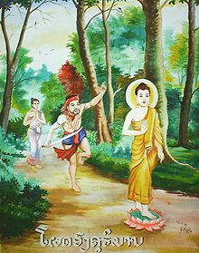

|
๒๘.
ประวัติ พระองคุลีมาลเถระ
นำเสนอโดย...พระมหาบุญโฮม ปริปุณฺณสีโล (ไชยฤทธิ์) วัดท่าไทร อ.กาญจนดิษฐ์ จ.สุราษฎร์ธานี |
|
O ชาติภูมิ ท่านพระองคุลิมาลเถระ เป็นบุตรพราหมณ์ผู้เป็นปุโรหิต ของพระเจ้าปัสเสนทิโกศล ในพระนครสาวัตถี มารดาชื่อว่านางมันตานีพราหมณี O เกิดในฤกษ์มหาโจร เมื่อท่านคลอดจากครรภ์มารดา ได้บังเกิดเหตุอัศจรรย์ บรรดาเครื่องศาสตราอาวุธยุทธภัณฑ์ อันมีอยู่ในเรือนนั้นก็ดี เครื่องพระแสงศาสตรวุธ ของพระเจ้าปัสเสนทิโกศลก็ดี ก็บังเกิดรุ่งเรือง เป็นเปลวไฟรุ่งโรจน์โชตนาการ ฝ่ายปุโรหิตาผู้เป็นบิดา เมื่อเห็นเหตุนั้นแล้ว จึงออกจากเรือนเล็งแลดูฤกษ์บน ฤกษ์นั้นก็ปรากฏในอากาศประหลาดใจหนักหนา ด้วยว่าบุตรนั้น จะเกิดเป็นโจร ครั้นเพลารุ่งเช้าจึงเข้าไปสู่ที่เฝ้า กราบทูลเนื้อความนั้นให้พระเจ้าปัสเสนทิโกศลทรงทราบ ผลที่สุด ได้กราบทูลให้พระองค์จับกุมประหารชีวิตเสีย แต่พระองค์หาทรงทำไม่ จึงรับสั่งให้บำรุงเลี้ยงรักษาไว้ ปุโรหิตาจารย์ ก็อภิบาลบำรุงรักษากุมารนั้นไว้ และให้นามว่า เจ้าอหิงสกกุมาร แปลว่า กุมารผู้ไม่เบียดเบียน เพราะถือเอาตามนิมิตเหตุ เมื่อคลอดนั้น ครั้นเมื่อเจ้าอหิงสกกุมาร เจริญวัยแล้ว มารดาบิดาจึงส่งไปสู่พระนครตักกศิลา เพื่อจะได้ศึกษาเล่าเรียนวิชา และศิลปศาสตร์ O ศึกษาศิลปวิทยากับอาจารย์ทิศาปาโมกข์ เมื่อเจ้าอหิงสกกุมาร ไปถึงพระนครตักกศิลาแล้ว ก็เข้าไปหาอาจารย์ทิศาปาโมกข์ ขอศึกษาศิลปวิทยา อุตส่าห์กระทำวัตรปรนนิบัติเป็นอันดี และมีปัญญาเล่าเรียนได้ว่องไว แม้จะเล่าเรียนศิลปศาสตร์วิชาการใด ๆ ก็รู้จบสิ้นทุกประการ เชี่ยวชาญยิ่งกว่าศิษย์ทั้งปวง จึงเป็นที่โปรดปรานของอาจารย์ทิศาปาโมกข์ ฝ่ายมาณพทั้งหลาย อันเป็นเพื่อนเล่าเรียนด้วยกันนั้น ก็บังเกิดความริษยา จึงประชุมปรึกษากัน เพื่อคิดอุบายทำลายเจ้าอหิงสกกุมารเสีย O อาจารย์ถูกยุยง จึงวางอุบายกำจัดอหิงสกะด้วย วิษณุมนต์ เมื่อเป็นที่ตกลงกันแล้ว ได้ไปยุยงอาจารย์ถึงสองครั้งสอง สามครั้ง (ว่าอหิงสกะ เป็นชู้กับภรรยาของอาจารย์) ในที่สุด อาจารย์ก็ปลงใจเชื่อ คิดหาอุบาย ที่จะกำจัดอหิงสกกุมาร เมื่อเห็นอุบายเป็นที่แยบคายแล้ว จึงพูดกะเจ้าอหิงสกกุมารว่า ดูกรมาณพ เจ้าจงไปฆ่าคน แล้วตัดเอานิ้วมาให้ได้พันนิ้ว แล้วจงนำมา เราจะประกอบศิลปศาสตร์อันชื่อว่า วิษณุมนต์ ให้แก่เธอ ในขั้นต้น เจ้าอหิงสกกุมาร มีความรังเกียจ ไม่พอใจ เพราะตนเกิดในตระกูลพราหมณ์ ไม่ควรเบียดเบียนฆ่าสัตว์ เป็นการผิดประเพณี วงศ์ตระกูลมารดาบิดา แต่ด้วยอาศัยความอยากสำเร็จศิลปะศาสตร์ อันมีชื่อว่าวิษณุมนต์ จึงได้ฝืนใจทำ เริ่มจับอาวุธ ผูกพันให้มั่นกับตัวแล้ว ก็ลาอาจารย์เข้าสู่ราวป่า เที่ยวพิฆาตฆ่ามนุษย์ อันเดินไปมาในสถานที่นั้น ๆ ครั้นฆ่าแล้ว มิได้กำหนดนับเป็นคะแนนไว้ ประการหนึ่งจิตก็มิได้คิดว่า จะกระทำบาปหยาบช้า เหตุดังนี้ จึงมิได้กำหนดคนที่ตนฆ่าตาย ก็บังเกิดลบเลือนสงสัย O ฆ่าตัดนิ้วทำเป็นพวงมาลัย ตั้งแต่นั้นมาเมื่อฆ่าคนตายแล้ว ก็ติดเอานิ้วมือมาร้อยเป็นพวงไว้ ดุจดังพวงมาลัยนับได้ถึง ๙๙๙ นิ้ว เพราะเหตุฉะนั้น อหิงสกกุมารจึงมีนามปรากฏว่า องคุลิมาลโจร แปลว่าโจรผู้มีนิ้วมือเป็นพวงมาลา ข่าวคราวเรื่องนี้ ระบือกระฉ่อนไปตามนิคมชนบทต่าง ๆ มหาชนมีความสะดุ้ง ตกใจกลัว ก็พร้อมกันไปเฝ้าพระเจ้าปเสนทิโกศล เพื่อกราบทูลให้พระองค์กำจัดเสีย เมื่อพระองค์ทรงทราบแล้ว จึงรับสั่งให้ตระเตรียมกำลังพล เพื่อจะไปจับองคุลิมาลโจร ฆ่าเสีย ปุโรหิตอาจารย์ ผู้เป็นบิดาทราบว่าอันตรายจะมีแก่บุตร จึงปรึกษากับนางพราหมณี ให้นางพราหมณีรีบออกไปก่อน เพื่อบอกเหตุนั้น ให้บุตรทราบ O พระพุทธองค์เสด็จห้ามการทำมาตุฆาต ในกาลครั้งนั้น สมเด็จพระบรมศาสดา ทรงเห็นอุปนิสัยแห่งพระอรหัตผล ขององคุลิมาลโจร ถ้าพระองค์ไม่ทรงเป็นพระภาระ ก็จะกระทำมาตุฆาต (ฆ่ามารดา) เสีย จักเป็นเหตุเสื่อมเสียจากมรรคผล
จึงรีบเสด็จไปแต่เช้าตรู่ เมื่อพบเข้าแล้ว
องคุลิมาลโจรก็ตรงเข้าไล่ทันที หมายจะพิฆาต ฆ่าเอานิ้วพระหัตถ์ แม้ไล่เท่าไรก็ไม่ทัน
จนเกิดกายเหนื่อยเมื่อยล้า จึงร้องตะโกน "สมณะ หยุดก่อน"
พระองค์จึงตรัสบอกว่า "เราได้หยุดแล้ว แต่ท่านต่างหากที่ยังไม่หยุด" องคุลิมาลโจร จึงหาว่า ท่านเป็นสมณะ แต่ยังกล่าวมุสาวาท" พระองค์ก็ตรัสบอกว่า "เราหยุดจากการทำอกุศล อันให้ผลเป็นทุกข์มานานแล้ว ส่วนท่านยังไม่หยุด"  ภาพวาด : โจรองคุลิมาลกำลังวิ่งไล่ตามพระพุทธเจ้าหมายจะฆ่าตัดเอานิ้วมือ O มหาโจรกลับใจ พระสุระเสียงนั้น ทำให้องคุลิมาลโจ รรู้สึกสำนึกโทษของตน จึงเปลื้องเครื่องศาสตราวุธ และมาลัยนิ้วมือออกจากกาย ทิ้งไว้ในซอกภูเขา แล้วเข้าไปเฝ้าทูลขอบรรพชาอุปสมบท พระองค์ก็ทรงอนุญาตให้อุปสมบทด้วยวิธีเอหิภิกขุอุปสัมปทา แล้วทรงนำพาเข้าไปในพระเชตวันมหาวิหาร ครั้นเวลารุ่งเช้า ท่านเข้าไปบิณฑบาตในพระนครสาวัตถี ชาวพระนครได้เห็นท่านแล้ว เกิดความตกใจกลัว พากันวิ่งหนีเป็นอลหม่าน พากันวิ่งเข้าไปในกำแพง พระราชวังปิดประตูพระนครเสีย และพูดจากันต่าง ๆ นานา บางคนพูดว่า ท่านพระองคุลิมาลปลอมเป็นสมณะ เพื่อหลบหนีราชภัย บางคนพูดว่า เพื่อหวังจะประทุษร้ายคนภายในพระนคร ท่านเที่ยวบิณฑบาตไปถึงไหน ก็มีเสียงโจษจันเซ็งแซ่ไปถึงนั่น ไม่มีใครถวายบิณฑบาตเลยแม้แต่เพียงทัพพีเดียว ภิกษุรูปใดไปกับท่าน ภิกษุรูปนั้นก็พลอยอดไปด้วย O ทำน้ำมนต์ให้หญิงมีครรภ์ แต่ก็เป็นโชคของท่านอย่างหนึ่ง ที่ท่านทำน้ำมนต์ ให้หญิงมีครรภ์คลอดง่ายที่สุด คือ ครั้งหนึ่ง ท่านทำน้ำมนต์ให้หญิงมีครรภ์คนหนึ่ง หญิงคนนั้น ก็คลอดบุตรง่ายเหมือนเทน้ำออกจากกระออม ตั้งแต่นั้นมา ก็มีคนนิยมนับถือท่านจนกระทั่งว่า แท่นที่ท่านนั่งคนเอาน้ำไปรด แล้วใช้เป็นน้ำมนต์ ก็ให้ผลสมความประสงค์เช่นเดียวกัน คาถาที่ท่านทำน้ำมนต์นั้นนิยมกัน ได้แก่ ยโตหํ ภคินิ อริยาย ชาติยา ชาโต นาภิชานามิ สญิจิจฺจ ปาณํ ชีวิตา โวโรเปตา เตน สจฺเจน โสตฺถิ เต โหตุ โสตฺถิ คพฺภสฺส ดังนี้ แปลว่า ดูกรน้องหญิง ตั้งแต่ฉันเกิดมาแล้ว โดยอริยชาติ ยังไม่รู้สึกตัวว่า ได้แกล้งปลงชีวิตสัตว์เลย ด้วยอำนาจสัจจวาจานั้น ขอความสุขสวัสดี จงมีแก่หล่อน และครรภ์ของหล่อนเถิด O บรรลุธรรม ท่านพระองคุลิมาลนั้น เป็นผู้ไม่ประมาท ตั้งใจเจริญสมณธรรม แต่จิตฟุ้งซ่าน ไม่เป็นสมาธิได้ เพราะคนที่ฆ่าประดุจดังว่ามาปรากฏอยู่ตรงหน้า
พระบรมศาสดาทรงทราบ จึงเสด็จมาแนะนำสั่งสอน
ไม่ให้ระลึกถึงสิ่งที่ล่วงมาแล้ว แลสิ่งที่ยังมาไม่ถึง ให้พิจารณาธรรม
ที่บังเกิดขึ้นเฉพาะหน้าอย่างเดียว ท่านประพฤติตาม ไม่ช้าก็สำเร็จพระอรหัตผล
เป็นพระอริยสาวก นับเข้าในจำนวนอสีติมหาสาวกองค์หนึ่ง เมื่อท่านดำรงชนมายุสังขารอยู่โดยสมควรแก่กาลแล้ว
ก็นิพพาน. ๐ กำเนิดอหิงสกกุมาร ที่เมืองสาวัตถีของพระเจ้าปเสนทิโกศล พระองคุลิมาลนี้ ได้ถือปฏิสนธิในครรภ์แห่งนางพราหมณ์ชื่อ มันตานี ภรรยาของ คัคคพราหมณ์ (ภัคควพราหมณ์) ซึ่งเป็นปุโรหิตแห่งเมืองสาวัตถี ในเวลาที่องคุลิมาลคลอดออกจากครรภ์มารดานั้น บรรดาอาวุธทั้งหลายในนครทั้งสิ้นช่วงโชติขึ้น แม้กระทั่งฝักดาบ ที่อยู่ในห้องพระบรรทมก็ส่งแสงเรืองขึ้น พราหมณ์ปุโรหิตจึงลุกออกมาแหงนดูดาวนักษัตร ก็รู้ว่าบุตรเกิดโดยฤกษ์ดาวโจร ลูกของตนที่จะเกิดจากครรภ์ของภรรยานั้น จะเป็นโจรผู้ร้ายกาจเที่ยวเข่นฆ่ามนุษย์เสียมากมาย วันรุ่งขึ้นปุโรหิตจึงเข้าไปในพระราชวัง เข้าเฝ้าพระเจ้าปเสนทิโกศล เพื่อทูลถวายรายงานถึงเหตุอาเพศที่เกิดขึ้นเมื่อคืนก่อน และกราบทูลว่าเป็นเพราะลูกที่เกิดจากนางพราหมณีที่เรือนของตน พระราชาสอบถามว่าอาเพศดังกล่าวจักเกิดเหตุอะไร ปุโรหิตกราบทูลว่า เขาจักเป็นมหาโจร พระราชาถามต่อว่าจักเป็นโจรทำร้ายผู้คน หรือ เป็นโจรประทุษร้ายราชสมบัติ ปุโรหิตกราบทูลว่า เขาจะไม่มีภัยต่อราชสมบัติ จะเป็นโจรคนเดียว พระราชาตรัสว่า เป็นโจรคนเดียวจะทำอะไรได้ ถ้าเขาทำเหตุอันใดขึ้นในอนาคต เราก็จักจัดการเขาเสียด้วยกองทหารของเรา จงเลี้ยงเขาไว้เถิด แม้ในวันที่ตั้งชื่อกุมารนั้น สิ่งของเหล่านี้คือ ฝักดาลอันเป็นมงคลที่วางไว้ ณ ที่นอน ลูกศรที่วางไว้ที่มุม มีดน้อยสำหรับตัดขั้วตาลซึ่งวางไว้ในปุยฝ้ายต่างส่งแสงลุกโพลงขึ้น แต่หาได้เป็นอันตรายหรือเบียดเบียนใครไม่ ปุโรหิตาจารย์นั้นเชื่อตามตำราว่า ลูกตนต้องเป็นคนโหดร้ายทารุณแน่ ก็เลยตั้งชื่อเด็กคนนี้เป็นการแก้เคล็ดเสียว่า อหิงสกกุมาร แปลว่า เด็กผู้ไม่เบียดเบียนใคร
เมื่ออหิงสกกุมารมีอายุพอจะศึกษาศิลปวิทยาแล้วบิดามารดาจึงส่งไปเรียนกับอาจารย์ทิศาปาโมกข์ที่เมืองตักกศิลา อหิงสกกุมารเป็นคนมีปัญญา ขยัน ตั้งใจเรียนดี มีความประพฤติเรียบร้อย คอยรับใช้อาจารย์ด้วยความเคารพ พูดจาไพเราะจึงเป็นที่พอใจของอาจารย์มาก แต่ศิษย์คนอื่น ๆ เห็นท่านเป็นคนโปรดของอาจารย์ก็ริษยา พากันออกอุบายเพื่อกำจัดอหิงสกมาณพ โดยแบ่งคนออกเป็นสามพวก พวกแรกก็เข้าไปบอกอาจารย์ว่า ได้ยินมาว่าอหิงสกมาณพจะประทุษร้ายท่านอาจารย์ ทีแรกอาจารย์ไม่เชื่อ แต่เมื่อพวกที่สอง และ พวกที่สามเข้าไปบอกเรื่องอย่างเดียวกัน หนักเข้าก็กลับใจเชื่อ แล้วอาจารย์จึงหาอุบายฆ่าอหิงสกมาณพ อาจารย์คิดต่อไปอีกว่า ถ้าเราฆ่ามัน ใครๆ ก็จะคิดว่าอาจารย์ทิศาปาโมกข์ ลงโทษมาณพผู้มาเรียนศิลปะยังสำนักของตนแล้วปลงชีวิตเสีย ดังนี้ ก็จักไม่มีใครมาเล่าเรียนศิลปะกับเราอีก ถ้าเป็นอย่างนั้นเราก็จะเสื่อมลาภ ดังนั้นจึงได้ออกอุบายยืมมือคนอื่นฆ่า โดยให้มาณพนั้นฆ่าคนให้ได้พันคน ด้วยคาดว่าเมื่ออหิงสกกุมารปฏิบัติตามคำสั่งของตน เที่ยวได้ฆ่าคนไป ก็จะต้องมีใครคนใดคนหนึ่งต่อสู้ และฆ่ามาณพนั้นจนได้ แล้วอาจารย์จึงบอกมาณพนั้นว่า ยังมีคำสำหรับศิลปะวิชาขั้นสุดท้ายอยู่ เจ้าจะต้องฆ่าคนให้ได้พันคน เพื่อประกอบพิธีบูชาครู (ครุทักษิณา) มิฉะนั้นวิชานั้นก็จะไม่มีผล
ทีแรกอหิงสกกุมารปฏิเสธโดยอ้างว่าท่านเกิดในตระกูลที่ไม่เบียดเบียนใคร แต่อาจารย์บอกว่าศิลปศาสตร์ที่เรียนไปแล้วถ้ามิได้บูชาครูก็จะไม่อำนวยผลที่ต้องการ ด้วยนิสัยรักวิชา อหิงสกกุมารจึงยอมปฏิบัติตาม โดยออกไปสู่ป่าชาลิวันในแคว้นโกศล อาศัยอยู่ที่หุบเขาแห่งหนึ่งคอยดักฆ่าคนเดินทางออก เที่ยวปล้นหมู่บ้านและตำบลต่างๆ เป็นโกลาหล ได้ฆ่าคนล้มตายเป็นจำนวนมาก แรก ๆ อหิงสกมาณพก็ไม่ได้ตัดนิ้วชนที่ตนฆ่าเก็บเอาไว้ แต่เมื่อฆ่าคนมากเข้าๆ ก็จำไม่ได้ว่าฆ่าไปแล้วกี่คน เพื่อเป็นเครื่องนับจำนวนคนที่ตนฆ่า อหิงสกมาณพก็ตัดเอานิ้วมือคนที่ตายคนละหนึ่งนิ้ว มาเก็บไว้ แต่เก็บๆ ไปก็มีนิ้วที่เสียหายไปบ้างไม่ครบจำนวน จึงเปลี่ยนมาทำเป็นพวงมาลัยคล้องคอไว้ ฉะนั้นคนจึงเรียกชื่อท่านว่า องคุลิมาล นับแต่ออกจากสำนักอาจารย์มา องคุลิมาลก็คอยดักซุ่มฆ่าคนเรื่อยไป เจอใครฆ่าหมดไม่ว่าผู้หญิงผู้ชายคนเฒ่าคนแก่เด็กเล็กเด็กแดงไม่เลือก จนไม่มีใครสามารถไปป่าเพื่อหาฟืนเป็นต้น ในตอนกลางคืนก็เข้ามายังภายในบ้านเอาเท้าถีบประตู แล้วก็ฆ่าคนที่นอนนั้นแหละ หมู่บ้านก็ร่นถอยไปตั้งในนิคม นิคมก็ร่นถอยไปตั้งอยู่ในเมือง พวกมนุษย์ทิ้งบ้านเรือนจูงลูกเดินทางมาล้อมพระนครสาวัตถี เป็นระยะทางถึงสามโยชน์ ตั้งค่ายพักประชุมกันที่ลานหลวง ต่างคร่ำครวญกล่าวกันว่า ข้าแต่สมมติเทพ ในแว่นแคว้นของพระองค์ มีโจรชื่อองคุลิมาล พราหมณ์ปุโรหิตได้ยินเรื่องดังนั้นก็รู้ว่า โจรองคุลิมารนั้นต้องเป็นบุตรของเราเป็นแน่ จึงกล่าวกะนางพราหมณีว่า เกิดโจรชื่อองคุลิมาลขึ้นแล้ว โจรนั้นคงไม่ใช่ใครอื่น ต้องเป็นอหิงสกกุมาร ลูกของเราเป็นแน่ บัดนี้ พระราชาจะเสด็จออกไปจับเขา เราควรจะทำอย่างไร นางพราหมณีพูดว่า ฉันจะไปพาลูกของฉันมา ดังนี้ จึงออกเดินทางเพื่อไปบอกลูกบุตรชายให้หนีไปเสีย. เวลานั้นโจรองคุลิมาลได้นิ้วมือมาเพียง ๙๙๙ นิ้ว ยังขาดอยู่นิ้วเดียวเท่านั้น จึงกระหายเป็นกำลัง และตั้งใจว่า ถ้าพบใครก่อนก็จะฆ่าทันที เพื่อจะได้นิ้วมือครบตามต้องการ แล้วจะได้ตัดผมโกนหนวดอาบน้ำเปลี่ยนเสื้อผ้าแล้วไปเยี่ยมบิดามารดา
เช้าตรู่วันนั้นพระบรมศาสดาทรงตรวจดูสัตว์โลกทรงเห็นว่าองคุลิมาลเป็นผู้มีอุปนิสัยพอที่จะโปรดให้บรรลุมรรคผลได้ และทรงพระดำริเห็นว่า ถ้าพระองค์มิได้เสด็จไปโปรด องคุลิมาลก็จะกระทำมาตุฆาต ฆ่ามารดาของตนเสีย จะเป็นผู้กระทำอนันตริยกรรม ไม่สามารถบรรลุธรรมใดๆ ได้ในชาตินี้ แม้จะได้ฟังธรรมโดยตรงจากพระพุทธองค์ พระองค์จึงเสด็จจาริกมุ่งตรงไปยังป่าชาลิวันเป็นระยะทาง ๓๐ โยชน์ เพื่อสกัดองคุลิมาลไว้มิให้ทันได้ฆ่ามารดา ธรรมดาการเสด็จจาริกของพระผู้มีพระภาคเจ้า มี ๒ อย่างคือ เสด็จจาริกอย่างรีบด่วน ๑ เสด็จจาริกอย่างไม่รีบด่วน ๑ ใน ๒ อย่างนั้น การที่พระองค์ทรงทอดพระเนตรเห็นบุคคลที่ควรให้ตรัสรู้ได้แม้ในที่ไกล ก็จะเสด็จไปโดยเร็วเพื่อประโยชน์แก่การตรัสรู้ของเขา ชื่อว่าเสด็จจาริกอย่างรีบด่วน. เช่นในการเสด็จไปเพื่อประโยชน์แก่พระอังคุลิมาลในครั้งนี้ ในระหว่างทางนั้นพวกคนเลี้ยงโคได้พากันวิ่งเข้าไปกราบทูลขอร้องถึง ๓ ครั้ง มิให้เสด็จไปหาองคุลิมาลเพราะกลัวพระองค์จะได้รับอันตราย แต่พระพุทธองค์ทรงเฉยเสียแล้วเสด็จดำเนินต่อไปจนถึงป่าชาลิวัน โจรองคุลิมาลได้เห็นพระผู้มีพระภาคเสด็จมาแต่ไกล ก็คิดว่าน่าประหลาดจริงหนอ เมื่อก่อน แม้พวกบุรุษมากันสิบคนก็ดี ยี่สิบคนก็ดี สามสิบคนก็ดี สี่สิบคนก็ดี ก็ยังต้องรวมเป็นกลุ่มเดียวกันเดินทาง แต่ถึงอย่างนั้น บุรุษพวกนั้นยังต้องตายเพราะมือเรา นี่มีเพียงสมณะนี้ผู้เดียว ไม่มีเพื่อนมาด้วย ชะรอยสมณะนี้คงจะมีดีอะไรสักอย่างแล้วจะมาลองดีกับเรา ถ้ากระไร เราพึงปลิดชีวิตสมณะนี้เถิด ครั้งนั้น องคุลิมาลโจรถือดาบและโล่ผูกสอดแล่งธนู ติดตามพระผู้มีพระภาคไปทางพระปฤษฎางค์ ครั้งนั้น พระผู้มีพระภาคทรงบันดาลอิทธิฤทธิ์ ในลักษณะที่องคุลิมาลจะวิ่งจนสุดกำลัง ก็ไม่อาจทันพระผู้มีพระภาค ผู้เสด็จไปตามปกติได้ เมื่อเป็นดังนั้น องคุลิมาลโจรก็ได้มีความคิดว่า น่าอัศจรรย์จริง เมื่อก่อนนี้ แม้ช้างกำลังวิ่ง ม้ากำลังวิ่ง รถกำลังแล่น เนื้อกำลังวิ่ง เราก็ยังวิ่งตามจับได้ แต่ว่านี่เราวิ่งจนสุดกำลัง ยังไม่อาจทันสมณะนี้ซึ่งเดินไปตามปกติได้ คิดดังนี้แล้ว จึงหยุดยืนกล่าวกะพระผู้มีพระภาคว่า "จงหยุดก่อนสมณะ จงหยุดก่อนสมณะ" พระผู้มีพระภาคตรัสว่า "เราหยุดแล้ว องคุลิมาล ท่านเล่าจงหยุดเถิด" ครั้งนั้น องคุลิมาลโจรคิดอยู่ว่า สมณศากยบุตรเหล่านั้น ปกติมักเป็นคนพูดจริงมีปฏิญญาจริง แต่สมณะรูปนี้ กำลังเดินไปอยู่แท้ๆ กลับพูดว่า เราหยุดแล้ว คงจะต้องมีนัยอะไรสักอย่าง เราน่าจะถามสมณะรูปนี้ดูจะดีกว่า ครั้งนั้น องคุลิมาลโจรได้กราบทูลพระผู้มีพระภาค "สมณะ ท่านกำลังเดินไป ยังกล่าวว่า เราหยุดแล้ว และยังกล่าวกะข้าพเจ้าผู้หยุดแล้ว ว่าไม่หยุด สมณะ ข้าพเจ้าขอถามท่านว่า ท่านหยุดแล้วเป็นอย่างไร ข้าพเจ้ายังไม่หยุด เป็นอย่างไร ?
พระพุทธองค์มีพระดำรัสตอบว่า องคุลิมาลเราได้หยุดคือเลิกฆ่าสัตว์ตัดชีวิตแล้ว ส่วนตัวเธอยังไม่หยุด คือยังฆ่าสัตว์ตัดชีวิตอยู่ เราจึงพูดเช่นนั้น องคุลิมาลได้ยินพระสุรเสียงอันแจ่มใส พระดำรัสที่คมคายเช่นนั้น ก็เกิดใจอ่อน รู้สึกสำนึกผิดได้ทันทีแล้ววางดาบ ทิ้งธนู สลัดแล่งโยนทิ้งลงเหวที่หุบเขา เข้าไปถวายบังคมพระบาทยุคลของพระพุทธองค์ ทูลขอบวชในพระพุทธศาสนา พระพุทธองค์ ทรงอนุญาตให้บวชเป็นภิกษ ุด้วยเอหิภิกขุอุปสัมปทา โดยได้ทรงพิจารณาเห็นว่าองคุลีมาลนั้นถึงพร้อมด้วยอุปนิสัยและได้เคยถวายภัณฑะ คือ บริขารแปด แก่ท่านผู้มีศีลในปางก่อน ก็ทรงเหยียดพระหัตถ์เบื้องขวาออกจากบังสุกุลจีวร เปล่งพระสุรเสียง ตรัสว่า "เธอ จงมาเป็นภิกษุมาเถิด ธรรมอันเรากล่าวดีแล้ว เธอจงประพฤติพรหมจรรย์ เพื่อทำที่สุดทุกข์โดยชอบเถิด" พร้อมกับพระดำรัสของพระผู้มีพระภาคเจ้านั้นนั่นเอง เพศคฤหัสถ์ขององคุลีมาลนั้นก็อันตรธานไป บรรพชาและอุปสมบทก็สำเร็จ องคุลิมาลนั้นก็เป็นผู้ปลงผมนุ่งห่มผ้ากาสาวะ คือนุ่งผ้าอันตรวาสก ผืนหนึ่ง ห่มผ้าอุตราสงค์ ผืนหนึ่ง พาดผ้าสังฆาฏิไว้บนบ่าผืนหนึ่ง มีบาตรดินที่มีสีเหมือนดอกอุบลเขียวคล้องไว้ที่บ่าข้างซ้าย พร้อมด้วยบริขารอื่น คือ มีดโกน เข็ม และผ้ารัดประคดเอว และ ผ้ากรองน้ำ เป็นผู้สมบูรณ์ด้วยอิริยาบถ เหมือนพระเถระอายุพรรษาตั้งร้อยพรรษา มีพระพุทธเจ้าเป็นพระอาจารย์ มีพระพุทธเจ้าเป็นพระอุปัชฌายะ ยืนถวายบังคมพระสัมมาสัมพุทธเจ้าอยู่ทีเดียว เสร็จแล้ว พระบรมศาสดาก็เสด็จพาองคุลิมาลภิกษุไปสู่พระเชตวันมหาวิหาร ณ กรุงสาวัตถี
สมัยนั้น หมู่มหาชนก็มาชุมนุมกันอยู่ที่ประตูพระราชวังของพระเจ้าปเสนทิโกศล ส่งเสียงร้องทุกข์กับพระเจ้าปเสนทิโกศลว่า ในแว่นแคว้นของพระองค์ มีโจรชื่อว่าองคุลิมาล เป็นคนหยาบช้า ฆ่าคนโดยไม่มีความกรุณา องคุลิมาลโจรนั้น เข่นฆ่าพวกมนุษย์ แล้วเอานิ้วมือร้อยเป็นพวงแขวนคอไว้ ขอพระองค์จงกำจัดมันเสียเถิด พระเจ้าปเสนทิโกศลนั้นทรงกลัวองคุลิมาล มิได้มีพระประสงค์จะไปจับโจรเลยแต่ทรงเกรงต่อคำครหา จึงทรงดำริว่า ถ้าเราจะไปเข้าเฝ้าพระพุทธองค์ พระองค์ก็ทรงตรัสถามว่า พระองค์พาไพร่พลออกมาเพราะเหตุไร เราก็จะทูลว่า "ก็พระผู้มีพระภาคเจ้า มิได้สงเคราะห์ข้าพระองค์ด้วยประโยชน์ในภพหน้าแต่เพียงอย่างเดียวเท่านั้น แม้ประโยชน์ในปัจจุบันก็ทรงสงเคราะห์ด้วย ข้าพระองค ์ออกมาจับโจรองคุลิมาล ถ้าพระผู้มีพระภาคเจ้าทรงเห็นว่าเราจะจับโจรได้ก็คงจะทรงนิ่งเสีย แต่ถ้าเราทรงเห็นว่าเราจะแพ้ ก็จะทรงตรัสว่า มหาบพิตร จะมีประโยชน์อะไรด้วยการเสด็จมาด้วยเรื่องของโจรเพียงคนเดียว ถ้าเป็นอย่างนั้นคนก็จะเข้าใจเราอย่างนี้ว่า พระราชาเสด็จออกจับโจร แต่พระสัมมาสัมพุทธเจ้าทรงห้ามเสียแล้ว ดังนี้ เราก็จะพ้นคำครหาด้วยประการฉะนี้" ดังนั้น พระเจ้าปเสนทิโกศลจึงได้เสด็จเคลื่อนพลออกจากนครสาวัตถี ด้วยกระบวนม้าประมาณ ๕๐๐ เสด็จเข้าไปวัดพระเชตวันมหาวิหาร แต่ยังวันทีเดียว เสด็จไปด้วยพระยานจนสุดทางที่ยานจะสามารถไปได้แล้ว เสด็จลงจากพระยานแล้ว ทรงพระราชดำเนินด้วยพระบาท เข้าไปเฝ้าพระผู้มีพระภาคถึงที่ประทับ ครั้นแล้วถวายบังคมพระผู้มีพระภาค ประทับนั่ง ณ ที่ควรส่วนข้างหนึ่ง พระผู้มีพระภาคได้ตรัสกับพระเจ้าปเสนทิโกศลว่า "ดูกรมหาบพิตร พระเจ้าพิมพิสาร แห่งแคว้นมคธทรงทำให้พระองค์ทรงขัดเคือง หรือเป็นเจ้าลิจฉวี เมืองเวสาลี หรือว่าเป็นพระราชาผู้เป็นปฏิปักษ์เหล่าอื่น ?" พระเจ้าปเสนทิโกศลกราบทูลว่า "มิได้พระเจ้าข้า ข้าแต่พระองค์ผู้เจริญ หม่อมฉัน ออกมาจับโจรชื่อว่าองคุลิมาล" พระพุทธองค์ทรงตรัสว่า "ดูกรมหาราช ถ้ามหาบพิตรทอดพระเนตรเห็น องคุลิมาล เป็นผู้ปลงผมและหนวด นุ่งห่มผ้ากาสายะ ออกจากเรือนบวชเป็นบรรพชิต เว้นจากการฆ่าสัตว์ เว้นจากการลักทรัพย์ เว้นจากการพูดเท็จ ฉันภัตตาหารหนเดียว ประพฤติพรหมจรรย์ พระองค์จะทรงกระทำอย่างไรกะเขา ?" พระเจ้าปเสนทิโกศลทรงตรัสว่า "ข้าแต่พระองค์ผู้เจริญ หม่อมฉันจะพึงทำความเคารพ จะจัดถวายจีวร บิณฑบาต เสนาสนะ และคิลานปัจจัยเภสัชบริขาร หรือก็จะจัดการรักษาป้องกันคุ้มครองอย่างเป็นธรรม ข้าแต่พระองค์ผู้เจริญ แต่องคุลิมาลโจรนั้น เป็นคนทุศีล มีบาป จะมีความสำรวมด้วยศีลถึงอย่างนั้นได้อย่างไร ?" ขณะนั้น ท่านพระองคุลิมาล นั่งอยู่ไม่ไกลพระผู้มีพระภาค พระผู้มีพระภาคทรงยกพระหัตถ์เบื้องขวาขึ้นชี้ตรัสบอกพระเจ้าปเสนทิโกศลว่า "ดูกรมหาราช นั่น องคุลิมาล" พระเจ้าปเสนทิโกศล ทรงเห็นองคุลิมาลก็ทรงมีความกลัว ทรงหวาดหวั่น พระผู้มีพระภาคทรงทราบว่า พระเจ้าปเสนทิโกศลทรงกลัว จึงได้ตรัสกะพระเจ้าปเสนทิโกศลว่า "อย่าทรงกลัวเลย มหาราช อย่าทรงกลัวเลย มหาราช บัดนี้ องคุลิมาลนี้ไม่เป็นภัยกับผู้ใดแล้ว" ครั้งนั้น พระเจ้าปเสนทิโกศลทรงระงับความกลัวได้แล้ว จึงเสด็จเข้าไปหาท่านองคุลิมาลถึงที่ที่ท่านนั่งอยู่ แล้วทรงดำริว่า "การที่จะถือเอาชื่อที่เกิดขึ้นเพราะกรรมอันชั่วช้า คือชื่อ องคุลิมาล นั้นนำมาเรียกพระภิกษุ เป็นการไม่สมควร เราจักเรียกท่านด้วยชื่อแห่งโคตรของบิดามารดา" ดังนี้ จึงถามว่า "บิดาของพระผู้เป็นเจ้ามีโคตรอย่างไร มารดาของพระผู้เป็นเจ้ามีโคตรอย่างไร ?" ท่านพระองคุลิมาลถวายพระพรว่า "ดูกรมหาบพิตร บิดาชื่อ คัคคะ มารดาชื่อ มันตานี" พระเจ้าปเสนทิโกศลจึงทรงปวารณาที่จะถวายจีวร บิณฑบาต เสนาสนะและคิลานปัจจัยเภสัชบริขาร แก่ท่านคัคคะมันตานีบุตร และเพื่อแสดงถึงความตั้งพระทัยในการกล่าวปวารณานั้นอย่างจริงจัง พระเจ้าปเสนทิโกศล ก็ทรงเปลื้องผ้าสาฏกที่คาดเอววางไว้ ณ ที่ใกล้เท้าของพระเถระ แต่เนื่องจากในครั้งนั้น ท่านพระองคุลิมาล ถือการอยู่ในป่าเป็นวัตร ถือเที่ยวบิณฑบาตเป็นวัตร ถือผ้าบังสุกุลเป็นวัตร ถือผ้าสามผืนเป็นวัตร ดังนั้น ท่านองคุลิมาลจึงได้ถวายพระพรพระเจ้าปเสนทิโกศลว่า "อย่าเลย มหาราช ไตรจีวรของอาตมภาพมีบริบูรณ์แล้ว" พระเจ้าปเสนทิโกศล ทรงสรรเสริญพระพุทธคุณที่ทรงสามารถปราบโจรร้ายได้โดยไม่ต้องใช้อาญาและศัสตราอาวุธใดๆ ลำดับนั้น แล้วทรงลุกจากที่ประทับ ถวายบังคมพระผู้มีพระภาคแล้วเสด็จกลับไป
หลังจากที่ท่านพระองคุลิมาลได้บวชแล้ว ท่านก็ได้รับความลำบากในเรื่องการบิณฑบาต แรกๆ ท่านก็ออกบิณฑบาตภายนอกพระนคร แต่พวกชาวบ้าน พอเห็นท่านแล้วย่อมสะดุ้งบ้าง ย่อมหนีเข้าป่าไปบ้าง ย่อมปิดประตูบ้าง บางพวกพอได้ยินว่า องคุลิมาล ก็วิ่งหนีเข้าเรือนปิดประตูเสียบ้าง เมื่อไม่อาจหนีได้ทัน ก็ยืนผินหลังให้ พระเถระไม่ได้แม้ข้าวยาคูสักกระบวยหนึ่ง แม้ภัตสักทัพพีหนึ่ง เมื่อท่านพระองคุลิมาลเถระเห็นว่า ไม่สามารถบิณฑบาตได้ภายนอกพระนคร ก็เข้าไปบิณฑบาตยังในพระนคร แต่พอเข้าไปทางประตูเมืองนั้น ก็เป็นเหตุให้มีเสียงตะโกนออกมาเป็นพันๆ เสียงว่าองคุลิมาลมาแล้วๆ
ในเรื่องนี้ก็เป็นเหตุให้พระพุทธองค์ทรงบัญญัติพระวินัยไว ้โดยที่ในเรื่องนี้ประชาชนได้เพ่งโทษ ติเตียน โพนทะนาว่า ไฉนพระสมณะเชื้อสายพระศากยบุตรจึงให้โจรที่ขึ้นชื่อโด่งดังบวชเล่า ภิกษุทั้งหลายได้ยินพวกนั้น เพ่งโทษ ติเตียน โพนทะนาอยู่ จึงกราบทูลเรื่องนั้นแด่พระผู้มีพระภาค พระผู้มีพระภาครับสั่งกะภิกษุทั้งหลายว่า ดูกรภิกษุทั้งหลาย โจรที่ขึ้นชื่อโด่งดัง ภิกษุไม่พึงให้บวช รูปใดให้บวช ต้องอาบัติทุกกฎ ต่อมา ท่านเข้าไปบิณฑบาตในเมือง เห็นหญิงคลอดลูกไม่ออกคนหนึ่ง จึงเกิดความสงสาร เมื่อกลับจากบิณฑบาตแล้ว ได้เข้าไปเฝ้าพระพุทธองค์ กราบทูลเรื่องนั้นให้ทรงทราบ พระพุทธองค์ทรงพระปริวิตกเกี่ยวกับเรื่องพระเถระลำบากด้วยภิกษาหาร เพื่อจะสงเคราะห์พระเถระนั้น โดยการลดความหวาดกลัวของประชาชนลง พระองค์จึงทรงมีพระประสงค์จะให้พระองคุลิมาลเถระแสดงสัจจกิริยา อนุเคราะห์แก่สตรีผู้เจ็บครรภ ์เพื่อให้ชนทั้งหลายเห็นว่า บัดนี้พระองคุลิมาลเถระกลับได้มีเมตตาจิต กระทำความสวัสดีให้แก่พวกมนุษย์ด้วยสัจจกิริยา ฉะนั้น ชนทั้งหลายย่อมคิดว่า ควรเข้าไปหาพระเถระ ต่อแต่นั้นพระเถระก็จะไม่ลำบากด้วยภิกษาหาร พระผู้มีพระภาคจึงตรัสว่า ดูกร องคุลิมาล ถ้าอย่างนั้น เธอจงเข้าไปหาสตรีนั้นและกล่าวกะสตรีนั้นอย่างนี้ว่า "ดูกรน้องหญิง ตั้งแต่เราเกิดมาแล้ว จะได้รู้สึกว่าแกล้งปลงสัตว์จากชีวิตหามิได้ ด้วยสัจจวาจานี้ ขอความสวัสดีจงมีแก่ท่าน ขอความสวัสดีจงมีแก่ครรภ์ของท่านเถิด" พระองคุลิมาล กราบทูลว่า ข้าแต่พระองค์ผู้เจริญ ถ้าข้าพระองค์กล่าวเช่นนั้นก็จะเป็นว่าข้าพระองค์กล่าวเท็จทั้งรู้อยู่เป็นแน่ เพราะข้าพระองค์แกล้งปลงสัตว์เสียจากชีวิตเป็นอันมาก พระพุทธองค์ทรงตรัสว่า ดูกร องคุลิมาล ท่านอย่าถือเอาเหตุนั้นเลย นั่นไม่ใช่ชาติของท่าน นั่นเป็นเวลาเมื่อเป็นคฤหัสถ์ ธรรมดาคฤหัสถ์ ย่อมฆ่าสัตว์.บ้าง ย่อมกระทำอทินนาทานเป็นต้นบ้าง แต่บัดนี้ ชาติของท่านชื่อว่า อริยชาติ.เพราะฉะนั้น ท่านถ้ารังเกียจจะพูดอย่างอย่างนั้น ท่านจงเข้าไปหาสตรีนั้น แล้วกล่าวกะสตรีนั้นอย่างนี้ว่า "ดูกรน้องหญิง ตั้งแต่เราเกิดแล้วในอริยชาติ จะได้รู้สึกว่าแกล้งปลงสัตว์เสียจากชีวิตหามิได้ ด้วยสัจจวาจานี้ ขอความสวัสดีจงมีแก่ท่าน ขอความสวัสดีจงมีแก่ครรภ์ของท่านเถิด " พระองคุลิมาลทูลรับพระผู้มีพระภาคแล้ว เข้าไปหาหญิงนั้นถึงที่อยู่ เพื่อกระทำสัจจกิริยาให้หญิงนั้รคลอดโดยสวัสดี ก็โดยปกติแล้ว การคลอดบุตร ของหญิงทั้งหลาย ผู้ชายไม่ควรจะเข้าไป ญาติของหญิงนั้นจึงกั้นม่านปูลาดตั่งไว้ภายนอกม่านไว้ให้พระองคุลิมาลเถระ พระเถระจึงนั่งลงบนตั่งนั้น แล้วกระทำสัจจกิริยา ครั้นสิ้นคำสัจจกิริยานั้นทารกก็ออกจากครรภ์มาดาอย่างง่ายดาย ดุจเทน้ำออกจากกระบอก ทั้งมารดาทั้งบุตรต่างก็มีความปลอดภัย คำสัจจกิริยาของพระเถระนี้ มหาชนต่างก็ถือว่าเป็นพระปริตรอันศักดิ์สิทธิ์ ในประเทศไทยเอง ก็ได้อยู่ในบทสวดทั้งเจ็ดตำนานและสิบสองตำนาน ชื่อว่า องคุลิมาลปริต ในครั้งนั้น แม้กระทั่งตั่งที่พระเถระนั่งกระทำสัจจกิริยา ชนทั้งหลาย เพียงนำสัตว์ดิรัจฉานตัวเมียที่มีครรภ์คลอดลำบากมาให้นอนที่ตั่งนั้น ก็จะคลอดออกได้โดยง่าย แม้แต่ตัวใดที่พิการนำมาไม่ได้ ก็เพียงแต่เอาน้ำล้างตั่งนั้นไปรดศีรษะ ก็คลอดออกได้ในขณะนั้นทีเดียว แม้โรคอย่างอื่นก็สงบไป ได้ยินว่า พระมหาปริตนี้มีปาฏิหาริย์ตั้งอยู่ตลอดกัป ตั้งแต่นั่นมาปัญหาเรื่องภิกษาหารของพระเถระก็หมดไป แต่พระประสงค์ของพระพุทธองค์ในการที่จะให้พระองคุลิมาลเถระกระทำสัจจกิริยา ด้วยถ้วยคำดังกล่าวข้างต้น ด้วยทรงมีพระพุทธประสงค์อีกประการหนึ่งก็คือ ในอดีตตั้งแต่พระเถระบรรพชาแล้ว ท่านก็เพียรในสมณธรรม แต่เมื่อขณะที่พระเถระกระทำกัมมัฏฐานนั้น ท่านก็ไม่สามารถทำความสงบให้เกิดขึ้นแก่จิตได้ ด้วยภาพแห่งการกระทำที่ในดง เช่นการฆ่าพวกมนุษย์ ภาพการโอดครวญวิงวอนของเหล่ามนุษย์ที่ท่านกำลังจะฆ่า ว่า ข้าพเจ้าเป็นคนเข็ญใจ ข้าพเจ้ายังมีบุตรเล็กๆ อยู่ โปรดให้ชีวิตแก่ข้าพเจ้าเถิดนาย ภาพความวิการแห่งมือและเท้าก็ดี ของคนเหล่านั้น ดังนี้ ย่อมมาสู่จิตของท่าน จนท่านไม่สามารถกระทำสมณธรรมได้ต้องลุกไปเสียจากที่นั้น พระผู้มีพระภาคเจ้าได้ให้พระเถระกระทำสัจจกิริยาโดยอ้างอริยชาติ ด้วยทรงเล็งเห็นว่า พระองคุลิมาลต้องกระทำชาติ (ที่เป็นคฤหัสถ์) นั้นให้เป็นอัพโพหาริก (เป็นโมฆะ) คือให้พระเถระไม่คิดถึงเรื่องในเมื่อครั้งเป็นคฤหัสถ์ แต่ให้ท่านได้มีความเข้าใจว่าท่านเกิดใหม่ในอริยชาติแล้ว ให้ท่านคิดดังนี้เสียก่อนแล้วเจริญวิปัสสนา จึงจักบรรลุพระอรหัตต์ได้ ต่อมาภิกษุองคุลิมาลก็หลีกออกจากคณะไปบำเพ็ญสมณธรรมอยู่ผู้เดียวไม่นานเท่าไรนักก็ได้สำเร็จเป็นพระอรหันต์ ในการสำเร็จเป็นพระอรหันต์ของพระองคุลิมาลเถระนั้น ไม่เป็นที่ปรากฏชัดแก่ภิกษุบางเหล่า ดังเช่นมีเรื่องเล่าว่า สมัยหนึ่ง ครั้นเมื่อพระผู้มีพระภาคเจ้าเสด็จเที่ยวจาริกไปตามชนบทแล้วทรงมาถึงพระเชตวัน มหาวิหาร พระเจ้าปเสนทิโกศล ทรงกระทำมหาทานแข่งกับพวกประชาชน โดยได้นิมนต์พระพุทธองค์พร้อมเหล่าภิกษุทั้งหมดมาเพื่อจะถวายทาน ในวันที่สองพวกชาวกรุงถวาย พระราชาทรงถวายยิ่งกว่าทานของพวกชาวกรุงเหล่านั้นอีก พวกชาวกรุงก็ถวายยิ่งกว่าทานของพระองค์ เป็นดังนี้ ครั้นเมื่อล่วงไปหลายวันอย่างนั้น พระราชาทรงเกรงว่าจะแพ้พวกชาวกรุง ทีนั้นพระนางมัลลิกาเทวีผู้เป็นพระมเหสีได้กราบทูลขอจัด อสทิสทาน ถวาย ในอรรถกถากล่าวว่า อสทิสทานนั้น จะมีในพระพุทธเจ้าทุกๆ พระองค์ และในกาลแห่งพระพุทธเจ้าพระองค์หนึ่งๆ นั้น จะมีได้เพียงครั้งเดียวเท่านั้น พระนางมัลลิกาเทวีได้ทรงกราบทูลให้พระราชาจัดทานดังนี้ ให้เขาทำมณฑปสำหรับพระพุทธองค์ทรงประทับภายในวงเวียน ภิกษุที่เหลือนั่งภายนอกวงเวียน ; จัดช้าง ๕๐๐ เชือกถือเศวตฉัตร ๕๐๐ คัน ยืนกั้นอยู่เบื้องบนแห่งภิกษุประมาณ ๕๐๐ รูป จัดทำเรือทองคำ ๑๐ ลำวางไว้ ณ ท่ามกลางมณฑป เจ้าหญิงองค์หนึ่งๆ จัดให้นั่งบดของหอมอยู่ในระหว่างภิกษุ ๒ รูป เจ้าหญิงองค์หนึ่งๆ จักถือพัด ยืนพัดภิกษุ ๒ รูป เจ้าหญิงที่เหลือ จัดให้นำของหอมที่บดแล้วมาใส่ในเรือทองคำทั้งหลาย ในบรรดาเจ้าหญิงเหล่านั้น เจ้าหญิงบางพวกให้ถือกำดอกอุบลเขียว เคล้าของหอมที่ใส่ไว้ในเรือทองคำแล้ว เพราะเหล่าชาวเมืองย่อมหาเจ้าหญิงไม่ได้ ย่อมหาเศวตฉัตรไม่ได้ ย่อมหาช้างไม่ได้ ด้วยของเหล่านี้เป็นของที่มีเฉพาะกับพระราชาเท่านั้น ชาวเมืองก็จะต้องแพ้อย่างแน่นอน พระราชาจึงรับสั่งให้จัดมหาทานตามวิธีที่พระนางกราบทูลแล้ว แต่ก็ปรากฏว่าช้างยังขาดไปเชือกหนึ่ง พระราชาตรัสบอกว่าพระนางมัลลิกา ที่จริง มีช้างพอ ๕๐๐ เชือก แต่ช้างที่เหลืออยู่เป็นช้างดุร้าย เมื่อเห็นภิกษุทั้งหลายเข้าก็จะพยศ พระเทวีจึงทูลพระราชาว่า ให้จัดเอาช้างที่ดุร้ายนั้นยืนอยู่ข้างพระผู้เป็นเจ้าที่ชื่อว่าองคุลิมาล พระราชารับสั่งให้ราชบุรุษทำอย่างนั้น ก็ปรากฏว่าด้วยเดชของพระเถระ ช้างเชือกนั้น แม้สักว่าพ่นลมจมูก ก็ทำไม่ได้ ช้างสอดหางเข้าในระหว่างขา ได้ปรบหูทั้งสอง หลับตายืนอยู่แล้ว ครั้งนั้น ภิกษุทั้งหลายถามพระองคุลิมาลว่า ท่านเห็นช้างตัวดุร้าย ยืนกั้นฉัตรอยู่แล้ว ไม่กลัวหรือ พระองคุลิมาลตอบว่า ไม่กลัว ภิกษุเหล่านั้น จึงไปกราบทูลพระศาสดาว่า พระองคุลิมาล พยากรณ์พระอรหัตด้วยคำไม่จริง เพราะเนื่องจากมีเฉพาะผู้ที่เป็นพระอรหันต์เท่านั้นที่จะไม่กลัวความตาย พระศาสดาทรงตรัสว่า พระองคุลิมาลมิได้พูดเท็จ เพราะว่า ภิกษุผู้เป็นพระขีณาสพย่อมไม่กลัว อีกเรื่องหนึ่งก็คือ เมื่อครั้งพระเถระปรินิพพานด้วยอนุปาทิเสสนิพพานธาตุแล้วภิกษุทั้งหลายสนทนากันในโรงธรรมว่า พระองคุลิมาลเถระเมื่อสิ้นชีวิตแล้วจะไปบังเกิดที่ไหน ? พระศาสดาเสด็จมาแล้ว ตรัสภิกษุทั้งหลายว่านั่งสนทนากันด้วยเรื่องอะไร เมื่อภิกษุทั้งหลายกราบทูลว่า ปรารภกันถึงเรื่องที่พระองคุลิมาลเถระจะไปบังเกิด พระพุทธองค์จึงทรงตรัสว่า พระเถระไม่มาเกิดอีกแล้วเพราะท่านได้ปรินิพพาน (หมายถึงบรรลุพรหัตผล) แล้ว เมื่อภิกษุทั้งหลายทูลถามว่า พระองคุลิมาลเถระฆ่ามนุษย์เป็นจำนวนมากเช่นนั้น ท่านได้ปรินิพพานแล้วหรือ พระพุทธองค์จึงตรัสรับรองว่าเป็นอย่างนั้น เพราะท่านพระองคุลิมาลก่อนนั้นท่านไม่ได้กัลยามิตรสักคนหนึ่ง จึงได้ทำบาปอย่างนั้นในกาลก่อน แต่ภายหลังเธอได้กัลยาณมิตรเป็นปัจจัย จึงได้เป็นผู้ไม่ประมาท เหตุนั้น ท่านจึงสามารถละบาปกรรมนั้นได้แล้วด้วยกุศล
ตั้งแต่พระอังคุลิมาลเถระนั้น ได้กระทำความสวัสดีแก่หญิงผู้มีครรภ์หลงด้วยทำความสัตย์แล้ว จำเดิมแต่นั้นมาก็ได้อาหารสะดวกขึ้น ได้ปฏิบัติธรรมโดยการเจริญวิเวกอยู่แต่ผู้เดียว ต่อมาไม่นานท่านก็ได้บรรลุพระอรหัต เป็นพระอรหันต์มีชื่อปรากฏนับเข้าในภายในพระอสีติมหาเถระ ๘๐ องค์ ในครั้งนั้น ภิกษุทั้งหลายสนทนากันในโรงธรรมว่า ช่างน่าอัศจรรย์จริงๆ หนอ พระผู้มีพระภาคเจ้าทรงทรมานพระองคุลิมาล ผู้เป็นมหาโจรมีฝ่ามืออันชุ่มด้วยเลือด ร้ายกาจเห็นปานนั้น โดยไม่ต้องใช้ทัณฑะหรือศัสตรา ทำให้หมดพยศได้ ทรงกระทำกิจที่ทำได้โดยยาก ธรรมดาว่า พระพุทธเจ้าทั้งหลาย ย่อมเป็นผู้กระทำกิจที่ทำได้ยากอย่างน่าอัศจรรย์ พระศาสดาประทับอยู่ในพระคันธกุฎี ได้ทรงสดับถ้อยคำของภิกษุเหล่านั้นด้วยทิพโสต ก็ทรงดำริว่า "พระธรรมเทศนาที่เราจักแสดงวันนี้จะมีคุณูปการอย่างใหญ่หลวง" ดังนี้แล้ว จึงเสด็จออกจากพระคันธกุฎี เสด็จไปยังธรรมสภา ประทับนั่งบนอาสนะที่พวกภิกษุจัดไว้ถวายแล้วตรัสถามว่า "ดูก่อน ภิกษุทั้งหลาย บัดนี้พวกเธอสนทนากันด้วยเรื่องอะไร" เมื่อภิกษุเหล่านั้นกราบทูลให้ทรงทราบแล้ว จึงตรัสว่า "ดูก่อน ภิกษุทั้งหลาย เราผู้ได้ทรมานพระองคุลิมาลได้ในบัดนี้ไม่น่าอัศจรรย์เลย แม้เมื่อครั้งในอดีตเราก็ทรมานพระองคุลิมาลนี้ได้ ตรัสดังนี้แล้วทรงนิ่งอยู่ เมื่อภิกษุเหล่านั้นกราบทูลอาราธนา จึงทรงนำอดีตนิทานแสดงดังต่อไปนี้ ๐ พระเจ้าสุตโสมเว้นบาปเพราะฟังธรรมของกาฬหัตถี พระศาสดาเมื่อประทับอยู่ ณ พระเชตวันมหาวิหาร ทรงพระปรารภเรื่องพระอังคุลิมาลเถระ ตรัสพระธรรมเทศนานี้ดังนี้ ตั้งแต่พระอังคุลิมาลเถระนั้น ได้กระทำความสวัสดีแก่หญิงผู้มีครรภ์หลงด้วยทำความสัตย์แล้ว จำเดิมแต่นั้นมาก็ได้อาหารสะดวกขึ้น ได้ปฏิบัติธรรมโดยการเจริญวิเวกอยู่แต่ผู้เดียว ต่อมาไม่นานท่านก็ได้บรรลุพระอรหัต เป็นพระอรหันต์มีชื่อปรากฏนับเข้าในภายในพระอสีติมหาเถระ ๘๐ องค์ ในครั้งนั้น ภิกษุทั้งหลายสนทนากันในโรงธรรมว่า ช่างน่าอัศจรรย์จริงๆ หนอ พระผู้มีพระภาคเจ้าทรงทรมานพระองคุลิมาล ผู้เป็นมหาโจรมีฝ่ามืออันชุ่มด้วยเลือด ร้ายกาจเห็นปานนั้น โดยไม่ต้องใช้ทัณฑะหรือศัสตรา ทำให้หมดพยศได้ ทรงกระทำกิจที่ทำได้โดยยาก ธรรมดาว่า พระพุทธเจ้าทั้งหลาย ย่อมเป็นผู้กระทำกิจที่ทำได้ยากอย่างน่าอัศจรรย์ พระศาสดาประทับอยู่ในพระคันธกุฎี ได้ทรงสดับถ้อยคำของภิกษุเหล่านั้นด้วยทิพโสต ก็ทรงพระดำริว่าพระธรรมเทศนาที่เราจักแสดงวันนี้จะมีคุณูปการอย่างใหญ่หลวงดังนี้ จึงเสด็จออกจากพระคันธกุฎี เสด็จไปยังธรรมสภา ประทับนั่งบนอาสนะที่พวกภิกษุจัดไว้ถวายแล้วตรัสถามว่า ดูก่อน ภิกษุทั้งหลาย บัดนี้พวกเธอสนทนากันด้วยเรื่องอะไร เมื่อภิกษุเหล่านั้นกราบทูลให้ทรงทราบแล้ว จึงตรัสว่า ดูก่อน ภิกษุทั้งหลาย เราผู้ได้ทรมานพระองคุลิมานได้ในบัดนี้ไม่น่าอัศจรรย์เลย แม้เมื่อครั้งในอดีตเราก็ทรมานพระองคุลิมาลนี้ได้ ตรัสดังนี้แล้วทรงนิ่งอยู่ เมื่อภิกษุเหล่านั้นกราบทูลอาราธนา จึงทรงนำอดีตนิทานแสดงดังต่อไปนี้ ในอดีตกาล พระราชาทรงพระนามว่า โกรัพยะ เสวยราชสมบัติโดยธรรม ในพระนครอินทปัต แคว้นกุรุ ในกาลนั้น พระโพธิสัตว์ของเราทั้งหลายเสด็จอุบัติในพระครรภ์ของพระอัครมเหสีแห่งพระเจ้าโกรัพยะนั้น พระราชกุมารนั้นมีพระพักตร์ดังดวงจันทร์ และมีนิสัยชอบในการศึกษา ชนทั้งหลายจึงพากันเรียกเธอว่า สุตโสม พระราชาทรงเห็นพระกุมารนั้นเจริญวัยแล้ว จึงพระราชทานทองลิ่มชนิดเนื้อดี ราคาพันหนึ่ง ส่งไปยังเมืองตักกศิลาเพื่อให้ศึกษาศิลปศาสตร์ ในสำนักอาจารย์ทิศาปาโมกข์ เจ้าชายสุตโสมรับทรัพย์ค่าบูชาอาจารย์ แล้วออกเดินทางไป ในขณะเดียวกันพรหมทัตกุมาร พระโอรสของพระเจ้ากาสิกราช ในพระนครพาราณสี พระบิดาก็ส่งไปเรียนศิลปวิทยาที่เมืองตักกศิลาเช่นเดียวกัน จึงได้ออกเดินทางไปยังเมืองดังกล่าว ลำดับนั้น สุตโสมกุมารเดินทางไปถึงศาลาใกล้ประตูเมืองตักกศิลาแล้ว จึงนั่งพักผ่อนอยู่ที่นั้น ก็ได้พบกับ พรหมทัตกุมาร ซึ่งก็นั่งอยู่ในศาลานั้นเช่นกัน สุตโสมกุมาร เห็นเจ้าชายพรหมทัต จึงกระทำปราศรัยเพื่อทำความรู้จักโดยถามพรหมทัตกุมารนั้นว่า ก็ทราบว่า ชายหนุ่มนั้นชื่อพรหมทัตกุมาร มาจากเมืองพาราณสี.เป็นโอรสของพระเจ้ากาสี เดินทางมาเพื่อเรียนศิลปศาสตร์ แล้วพรหมทัตกุมาร ก็ถามสุตโสมกุมารเช่นเดียวกัน สุตโสมก็บอกแก่พรหมทัตกุมารทุกประการราชกุมารทั้งสองนั้นจึงกล่าวแก่กันว่า เราทั้งสองเป็นกษัตริย์ จงไปศึกษาศิลปศาสตร์ในสำนักท่านอาจารย์คนเดียวกันเถิด ตกลงกันดังนั้นแล้ว จึงเข้าไปในพระนคร ไปเสาะหาอาจารย์ เมื่อพบแล้วจึงไหว้อาจารย์แล้วแจ้งชาติกำเนิดของตน แจ้งความที่ตนทั้งสองมาเพื่อจะศึกษาศิลปะ อาจารย์จึงรับสองราชกุมารเป็นศิษย์ ราชกุมารทั้งสองมอบทองเป็นค่าบูชาครู แล้วเริ่มเรียนศิลปวิทยาในสำนักของอาจารย์นั้น ในขณะนั้นไม่ใช่มีเพียงแต่สองราชกุมารเท่านั้น แม้พระราชบุตรของพระราชาอื่นๆ ในชมพูทวีปประมาณ ๑๐๑ พระองค์ ก็เรียนศิลปะอยู่ในสำนักของอาจารย์นั้นด้วยเช่นกัน สุตโสมกุมารได้เป็นศิษย์ผู้เจริญที่สุดกว่าราชบุตรเหล่านั้น เล่าเรียนศิลปศาสตร์อยู่อย่างขะมักเขม้น ไม่นานเท่าไรนักก็ถึงความสำเร็จ โดยปกติ สุตโสมกุมารมิได้ไปคลุกคลีกับราชกุมารเหล่าอื่น ไปหาแต่พรหมทัตกุมารผู้เดียว ด้วยคิดว่า พรหมทัตกุมารนี้เป็นสหายของเรา นอกจากนั้นสุตโสมกุมารยังเป็นครูผู้ช่วยแนะนำและสอนให้พรหมทัตกุมารและราชกุมารอื่นๆ นั้นสำเร็จการศึกษาได้โดยรวดเร็ว เป็นลำดับกันมา เมื่อเรียนจบกันทั้งหมดแล้ว พวกราชกุมารเหล่านั้นให้เครื่องคำนับไหว้อาจารย์แล้ว ออกเดินทางไปกลับไปยังบ้านเมืองของตนพร้อมสุตโสมกุมาร ครั้นเมื่อถึงทางแยกที่จะไปยังเมืองต่างๆ ของตน สุตโสมกุมารจึงได้ให้โอวาทแก่เหล่าราชกุมารทั้งนั้น เมื่อท่านทั้งหลายกลับไปถึงบ้านเมืองแล้ว ก็คงได้ราชสมบัติปกครองเมืองแทนพระราชบิดา เมื่ออยู่ในราชสมบัติแล้ว จงทำตามโอวาทของเรา โดยรักษาอุโบสถทุกวันครึ่งเดือน อย่าได้กระทำการเบียดเบียน ราชบุตรเหล่านั้นก็รับคำเป็นอันดี สุตโสมกุมารทรงทราบล่วงหน้าด้วยศาสตร์ที่ได้เรียนมาแล้วว่า มหาภัยจักเกิดขึ้นในพระนครพาราณสี เพราะพรหมทัตกุมารนี้เอง ดังนี้จึงได้ให้โอวาทแก่พวกราชกุมารเหล่านั้นแล้วส่งไป ราชบุตรเหล่านั้นทุกๆ พระองค์ ไปถึงชนบทของตนๆ แล้วแสดงศิลปะที่ได้ร่ำเรียนมาแก่พระราชมารดาบิดาของตนแล้ว ครั้นเมื่อได้รับมอบราชสมบัติแล้วต่างก็ส่งราชสาส์นพร้อมด้วยเครื่องราชบรรณาการมาถวายพระเจ้าสุตโสม เพื่อให้ทราบความที่ตนได้ราชสมบัตินั้นแล้วและประพฤติอยู่ในโอวาทด้วย พระเจ้าสุตโสมได้ทรงทราบข่าวสาส์นนั้นแล้วทรงตอบพระราชสาส์นไปว่า ท่านทั้งหลายจงเป็นผู้ไม่ประมาทเถิด ในบรรดาพระราชาเหล่านั้น พระเจ้าพรหมทัต แห่งกรุงพาราณสี นั้นทรงติดอยู่ในรสของเนื้อสัตว์ ถ้าไม่มีเนื้อปรุงมาเป็นพระกระยาหารเสียแล้วท่านเสวยอาหารไม่ได้ แม้ในวันพระ ซึ่งปกติจะไม่มีการฆ่าสัตว์เพื่อเอาเนื้อมารับประทาน พวกห้องเครื่องต้นก็ต้องเก็บเนื้อไว้ถวายท้าวเธอ อยู่มาวันหนึ่งเนื้อที่ชาวเครื่องเก็บไว้สำหรับปรุงพระกระยาหารถวายนั้น ถูกสุนัขในพระราชวังกินเสียหมด เพราะความเลินเล่อของคนทำเครื่องต้น คนทำเครื่องต้นครั้นไม่เห็นเนื้อที่เก็บเอาไว้ จึงเที่ยวหาซื้อเนื้อในเมือง เที่ยวหาไปก็หาไม่ได้ด้วยเป็นวันอุโบสถ จึงดำริว่า ถ้าหากเราจักตั้งเครื่องเสวยโดยไม่มีเนื้อ เราก็จะไม่มีชีวิตรอด จักทำอย่างไรดีหนอ ครั้งนึกอุบายขึ้นมาได้ พอตกค่ำจึงไปสู่ป่าช้า ตัดเอาเนื้อตรงขาของบุรุษที่เพิ่งตายใหม่ๆ นั้นนำมาปรุงเป็นพระกระยาหาร หุงข้าวจัดแจงตั้งเครื่องเสวย พอพระราชาวางชิ้นเนื้อมนุษย์นั้นลง ณ ปลายพระชิวหา รสเนื้อมนุษย์นั้น ก็แผ่ไปสู่เส้นประสาทที่รับรสทั้ง ๗ พัน ซาบซ่านไปทั่วพระสรีระ โดยที่เป็นดังนี้เพราะเหตุว่า เพราะเคยเสวยเนื้อมนุษย์มาก่อนแล้วในอดีตชาติ ในชาติที่แล้ว ท้าวเธอเกิดเป็นยักษ์ กินเนื้อมนุษย์เสียเป็นอันมาก เพราะฉะนั้น เนื้อมนุษย์จึงได้เป็นสิ่งที่โปรดปรานของพระองค์ พระเจ้าพรหมทัตทรงพระดำริว่า ถ้าเราจักนิ่งเสียแล้วบริโภคต่อไปตามปกติ คนทำเครื่องนี้ก็จักไม่บอกว่าเป็นเนื้ออะไร จึงทรงแกล้งถ่มชิ้นเนื้อนั้นลงบนพื้น เมื่อคนทำเครื่องต้นเห็นดังนั้นจึงกราบทูลว่า ขอเดชะ เนื้อนี้หาโทษมิได้ เชิญพระองค์เสวยเถิด พระเจ้าพรหมทัตจึงทรงรับสั่งให้มหาดเล็กอื่นๆ ออกไปเสียแล้ว ตรัสถามคนทำเครื่องต้นว่า เราเองก็ทราบว่าเนื้อนี้หาโทษมิได้ แต่เนื้อนี้คือเนื้ออะไร คนทำเครื่องต้น กราบทูลว่าขอเดชะ ก็เป็นเนื้อที่พระองค์เคยเสวยในวันก่อนๆ ท้าวเธอได้ยินดังนั้นก็ทรงทราบว่า คนทำเครื่องต้นไม่ยอมบอก จึงรับสั่งต่อไปว่า เจ้าจงบอกมาตามความจริงเถิด ถ้าเจ้าไม่บอก เจ้าจะไม่มีชีวิต คนทำเครื่องต้นจึงทูลขอพระราชทานอภัยแล้ว ก็กราบทูลตามความเป็นจริง พระราชารับสั่งว่า ต่อไปเจ้าจงนำแต่เนื้อมนุษย์มาเป็นอาหารให้แก่เราเพียงอย่างเดียว คนทำเครื่องต้นทูลถามว่า ขอเดชะ ข้าพระองค์จักได้เนื้อมนุษย์มาจากไหนเล่า พระเจ้าพรหมทัตรับสั่งแนะให้ว่า ก็คนในเรือนจำมีอยู่มากมายมิใช่หรือ แต่นั้นมา เขาก็ได้กระทำตามพระราชบัญชาทุกประการ ครั้นต่อมาเมื่อพวกนักโทษในเรือนจำหมด คนทำเครื่องต้นจึงกราบทูลว่า บัดนี้ข้าพระองค์จักกระทำอย่างไรต่อไป พระเจ้าพรหมทัตรับสั่งว่า เจ้าจงทิ้งถุงทรัพย์พันหนึ่งไว้ที่ระหว่างทาง คนใดหยิบเอาถุงทรัพย์นั้น จงจับคนนั้นโดยตั้งข้อหาว่าเป็นโจรแล้วฆ่าทิ้งเสีย คนทำเครื่องต้นได้กระทำตามพระราชบัญชานั้นแล้ว นานเข้าก็ไม่พบคนที่กล้าแม้แต่จะมองดูถุงทรัพย์พันหนึ่งนั้น เพราะความกลัว จึงทูลถามพระเจ้าพรหมทัตว่า ขอเดชะบัดนี้ข้าพระองค์จักกระทำอย่างไรต่อไป ทรงแนะให้อีกว่า ในเวลาตีกลองยามเที่ยงคืน พระนครย่อมเกิดความอลหม่าน เวลานั้นเจ้าจงยืนดักอยู่ที่ตรอกบ้านหรือถนนหรือหนทางสี่แพร่งแห่งหนึ่ง จงฆ่ามนุษย์เอาเนื้อมา แต่นั้นมา เขาก็ได้ทำอย่างที่พระเจ้าพรหมทัตทรงแนะนำนั้น ซากศพปรากฏอยู่ในพระนครที่นั้นบ้าง ที่โน้นบ้าง ทั่วทั้งเมืองพาราณสีก็เต็มไปด้วยซากศพ เสียงประชาชนคร่ำครวญว่า มารดาของเราหายไป บิดาของเราหายไป พี่ชาย น้องชายของเราหายไป พี่สาว น้องสาวของเราหายไป.ได้ยินไปทั่วพระนคร ชาวนครทั้งกลัว ทั้งหวาดเสียว จึงปรึกษากันว่า คนเหล่านี้ถูกราชสีห์กิน หรือถูกเสือกิน หรือถูกยักษ์กินกันแน่หนอ ครั้นเมื่อตรวจดูที่ซากศพ ก็เห็นบาดแผลที่ซากศพเป็นรอยการตัดเนื้อไป จึงสันนิษฐานกันว่า เห็นจะเป็นโจรมนุษย์คนหนึ่งกินคนเหล่านี้เป็นแน่ มหาชนจึงประชุมกันร้องทุกข์ที่พระลานหลวง พระราชาตรัสถามชาวพระนครกราบทูลว่า ในพระนครนี้เกิดโจรกินคนขึ้นแล้ว ขอพระองค์จงรับสั่งให้จับโจรกินคนนั้นเสียเถิด พระเจ้าข้า พระราชาตรัสว่า เราจักรู้ได้อย่างไรเล่า จะให้เราเป็นคนรักษาพระนคร เที่ยวไปตรวจดูหรือ มหาชนเห็นดังนั้นปรึกษากันว่า พระราชาไม่ทรงเอาเรื่องนี้เป็นธุระเสียแล้ว เพราะฉะนั้น พวกเราจักพากันไปแจ้งแก่ท่านกาฬหัตถีเสนาบดีเถิด จึงพากันไปบอกเนื้อความแก่ท่านเสนาบดี กราบเรียนว่า ควรจะสืบจับตัวผู้ร้ายให้ได้ ท่านเสนาบดีมีบัญชาว่า พวกท่านจงรออยู่สัก ๗ วันก่อน เราจะสืบจับตัวผู้ร้ายเอามาให้พวกท่านดูจงได้ มหาชนก็พากันกลับไป ท่านเสนาบดีสั่งการพวกราชบุรุษว่า เกิดเหตุโจรกินคนขึ้นในพระนคร พวกเจ้าจงไปซุ่มจับเอาตัวมันมาให้ได้ พวกราชบุรุษเหล่านั้นรับคำสั่งแล้ว ก็คอยสอดแนมอยู่ทั่วพระนคร ครั้นเมื่อคนทำเครื่องต้นลอบแอบอยู่ที่ตรอกบ้านแห่งหนึ่ง และได้ฆ่าหญิงคนหนึ่งแล้ว ก็แล่เอาเนื้อหญิงนั้นบรรจุลงในกระเช้า ทันใดนั้นพวกราชบุรุษเหล่านั้น จึงจับคนทำเครื่องต้นนั้นโบยแล้วมัดมือไพล่หลัง ร้องประกาศดังๆ ว่า พวกเราจับโจรกินคนได้แล้ว ประชาชนพากันห้อมล้อมคนทำเครื่องต้นนั้น ราชบุรุษทั้งหลายมัดคนทำเครื่องต้นไว้อย่างแน่นหนา แล้วผูกกระเช้าเนื้อไว้ที่คอเอาตัวไปมอบแก่ท่านเสนาบดี ครั้นท่านเสนาบดี พอได้เห็นคนทำเครื่องต้นนั้นแล้ว จึงคิดว่า เจ้าคนผู้นี้กินเนื้อนี้เอง หรือเอาไปปนกับเนื้ออื่นแล้วจำหน่าย หรือว่าฆ่าตามพระราชบัญชา จึงสอบสวนและถามคนทำเครื่องต้นดังเช่นที่คิดไว้นั้น คนทำเครื่องต้นจึงกล่าวแก่ท่านเสนาบดีนั้นว่า เป็นด้วยพระเจ้าพรหมทัต พระองค์เสวยเนื้อนี้ ลำดับนั้น ท่านเสนาบดีจึงกล่าวกะคนทำเครื่องต้นนั้นว่า ถ้าเช่นนั้น เจ้าจงแถลงเหตุนั้นแก่เรา ต่อเบื้องพระพักตร์พระเจ้าอยู่หัวในเช้าวันพรุ่งนี้เถิด ต่อจากนั้น ท่านเสนาบดีจึงสั่งให้มัดจำคนทำเครื่องต้นไว้ให้มั่งคง ครั้นรุ่งเช้าแล้วจึงปรึกษากับพวกอำมาตย์และชาวเมือง เมื่อเห็นพ้องต้องกันทั้งหมดแล้ว จึงวางกำลังไว้ในที่ทุกแห่ง ผูกกระเช้าเนื้อไว้ที่คอคนทำเครื่องต้น นำตัวเข้าไปยังพระราชนิเวศน์ พร้อมกับฝูงชน ที่ได้โห่ร้อง เกิดเสียงเซ็งแซ่ขึ้นทั่วพระนคร วันวานนี้ พระราชาเสวยพระกระยาหารเช้าแล้ว ยังมิได้เนื้อในเวลาเย็น จึงประทับนั่งรอคนทำเครื่องต้นเมื่อได้เนื้อมนุษย์มาแล้วก็จะประกอบพระกระยาหารถวาย ทรงประทับรออยู่จนตลอดคืนยังรุ่ง คนทำเครื่องต้นก็ยังไม่มา ครั้งทรงได้สดับเสียงเซ่งแซ่ของชาวเมือง จึงทรงทอดพระเนตรออกไปตามช่องพระแกล ก็ได้ทรงเห็นคนทำเครื่องต้น ถูกมัดมาพร้อมกระเช้าเนื้อห้อยที่คอ ทรงคาดเดาได้ว่า มหาชนได้รู้ความจริงแล้วแล้ว จึงทรงตั้งพระสติมั่งคง ประทับนั่งบนบัลลังก์คอยอยู่ เมื่อกาฬหัตถีเสนาบดี เข้าไปเฝ้าพระองค์ แล้วทูลไต่สวนข้อความ พระองค์จึงทรงแถลงแก่เสนาบดีนั้น พระราชาตรัสเมื่อถูกเสนาบดีไต่สวน ไม่อาจจะทรงให้การเท็จได้ จึงตรัสว่า เป็นความจริง คนทำเครื่องต้นนั้น เราได้ใช้มันไปเอง เมื่อมันทำกิจของเรา ท่านกาฬหัตถี โจรอื่นท่านไม่จับ ให้จับคนของเราทำไมกัน เสนาบดีได้สดับคำนั้นดำริว่า พระราชาทรงรับสารภาพด้วยพระโอษฐ์ของพระองค์เอง เธอร้ายกาจน่าสยดสยอง เธอกินเนื้อมนุษย์มาตลอดกาลถึงเพียงนี้ เราจักลองทูลห้ามเธอดู ดังนี้แล้วกราบทูลว่า ข้าแต่มหาราชเจ้า ขอพระองค์อย่าได้ทรงทำอย่างนี้อีกต่อไปเลย อย่าเสวยเนื้อมนุษย์เลย พระราชาตรัสว่า ดูก่อนท่านกาฬหัตถี ท่านพูดอะไร เราไม่อาจจะอดเนื้อมนุษย์ได้ เสนาบดีทูลตอบว่า ขอเดชะ ถ้าพระองค์อดไม่ได้ พระองค์เองจะทำพระองค์และบ้านเมืองให้พินาศ พระเจ้าพรหมทัตตรัสตอบว่า ถึงแม้เราจะต้องพินาศไปอย่างนั้น เราก็ไม่อาจที่จะอดเนื้อมนุษย์นั้นได้ เสนาบดีนั้นเมื่อประสงค์จะให้ท้าวเธอรู้สึกพระองค์ จึงนำเอาเรื่องมาเล่าถวายดังต่อไปนี้ ในอดีตกาล มหาสมุทรแห่งหนึ่งมีปลาใหญ่อยู่ ๖ ตัว ชื่ออานนท์ตัวหนึ่ง ชื่ออุปนันทะตัวหนึ่ง ชื่ออัชโฌหารตัวหนึ่ง ปลาใหญ่ทั้ง ๓ ตัวนี้ยาวถึง ๕๐๐ โยชน์ ชื่อติมิงคละตัวหนึ่ง ชื่อติมิรมิงคละตัวหนึ่ง ชื่อมหาติมิรมิงคละตัวหนึ่ง ปลาใหญ่ ๓ ตัวนี้ยาว ๑,๐๐๐ โยชน์ ปลาใหญ่ทั้ง ๖ ตัวนั้นแม้ทั้งหมดมีหินและสาหร่ายเป็นภักษาหาร บรรดาปลาทั้ง ๖ ตัวนั้น ปลาอานนท์อยู่ในส่วนข้างหนึ่งแห่งมหาสมุทร ฝูงปลาเป็นอันมากพากันเข้าไปหาปลาอานนท์นั้น วันหนึ่ง ปลาเหล่านั้นคิดกันว่า ในหมู่สัตว์สองเท้าและสัตว์สี่เท้าทั้งหมด ย่อมมีพระราชา แต่พระราชาของพวกเรายังไม่มี พวกเราจักยกย่องปลาตัวหนึ่งให้เป็นพระราชา ปลาทั้งหมดได้รวมกันเป็นเอกฉันท์ ยกปลาอานนท์ขึ้นเป็นพระราชา นับแต่นั้นมา ปลาเหล่านั้นก็ไปเข้าเฝ้าปลาอานนท์นั้นทุกเวลาเย็นและเวลาเช้า อยู่มาวันหนึ่ง ปลาอานนท์กินหินและ สาหร่ายอยู่ ณ ภูเขาแห่งหนึ่ง กินปลาตัวหนึ่งโดยไม่รู้สึกว่าเป็นปลา สำคัญว่าเป็นสาหร่าย เนื้อปลานั้นแผ่ไปทั่วสรีระของมัน มันคิดว่า นี้อะไรหนอช่างอร่อยเหลือเกินจึงคายออกมาดูเห็นเป็นเนื้อปลา คิดว่า เราไม่รู้จักกินมานานถึงเพียงนี้ และก็คิดต่อไปว่า พวกปลาที่มาเฝ้าเราทั้งเวลาเช้าและเวลาเย็น เวลากลับไป เราจะกินมันตัวหนึ่งหรือสองตัว แต่เมื่อจะกินมันโดยเปิดเผย ปลาตัวอื่นๆ ก็จะไม่เข้าใกล้เรา จะพากันหนีไปเสียหมด เราจำต้องทำอย่างแนบเนียน เราจะจับตัวที่อยู่หลังที่สุดกิน ดังนี้แล้วได้กระทำตามที่ตนดำริไว้ทุกประการ ฝูงปลาเหล่านั้นก็ลดจำนวนลงโดยลำดับ จึงคิดกันว่า ภัยเกิดขึ้นแก่พวกญาติของเราด้วยเหตุใดหนอ ในฝูงปลานั้น มีปลาฉลาดตัวหนึ่งคิดว่า กิริยาของปลาอานนท์ผิดสังเกต จึงคอยจับกิริยาของปลาอานนท์ เมื่อฝูงปลาไปเข้าเฝ้าแล้ว ได้แฝงตัวอยู่ในหูของปลาอานนท์ ปลาอานนท์ส่งฝูงปลากลับไปแล้ว ก็กินตัวที่ไปทีหลังสุดเสีย ปลาฉลาดตัวนั้นเห็นการกระทำอย่างนั้นจึงไปบอกแก่พวกของตน ปลาเหล่านั้นตกใจกลัวพากันหนีไปจนหมด นับแต่วันนั้นมา ปลาอานนท์มิได้กินอาหารอย่างอื่นเลย เพราะติดรสในเนื้อปลา มันถูกความหิวบีบคั้นมากขึ้น คิดว่า ปลาเหล่านี้ไปแอบซ่อนอยู่ที่ไหนหนอ เมื่อเที่ยวหาปลาพวกนั้น เห็นภูเขาลูกหนึ่ง คิดว่าชะรอยมันจะอาศัยภูเขาลูกนี้อยู่เพราะกลัวเรา เพราะฉะนั้น เราจะลองโอบภูเขาตรวจดู จึงเอาหางและหัวโอบภูเขาไว้โดยรอบทั้งสองข้าง โดยคิดว่า ปลาคงอยู่ในที่นี้ทั้งหมด จะหนีไปทางไหนได้ แล้วโอบภูเขาเข้าไว้ ครั้นเมื่อมองเห็นหางของตนเองเข้า ก็โกรธด้วยคิดว่า ปลาตัวนี้มันลวงเรา อาศัยภูเขาแอบอยู่ จึงฮุบหางของตนเองประมาณ ๕๐ โยชน์ไว้ ด้วยคิดว่าเป็นปลาอื่น แล้วเคี้ยวกินเสียอย่างเอร็ดอร่อย จนเกิดทุกขเวทนาขึ้น ปลาอานนท์ไม่อาจกลับตัวได้เพราะตัวใหญ่ ก็สิ้นชีวิตในที่นั้นเอง กระดูกกองกันเป็นเหมือนภูเขาใหญ่ ดาบสและปริพาชกผู้เที่ยวทางอากาศได้มาเล่าให้พวกมนุษย์ฟัง พวกมนุษย์ในชมพูทวีปจึงรู้กันทั้งหมด กาฬหัตถีเสนาบดีเมื่อเล่าเรื่องนี้ถวายต่อพระราชาแล้วได้ว่า ถ้าพระองค์ยังไม่ยอมเลิกเสวยเนื้อมนุษย์ พระองค์ก็จำจะต้องทิ้งพระโอรสพระชายาพระประยูรญาติ และพระสหาย เมื่อไม่ได้อาหารอย่างอื่น ถูกความหิวบีบคั้นดิ้นกระเสือกกระสนอยู่ทั่วพระนคร ครั้นไม่ได้เนื้อมนุษย์ก็จะกินตนเอง ก็จะเหมือนอย่างปลาใหญ่มีชื่อว่า อานนท์ฉะนั้น พระราชาทรงสดับคำนั้น จึงตรัสว่า ดูก่อนท่านกาฬหัตถีผู้เจริญ ท่านนั้นรู้เรื่องเปรียบเทียบ เพียงผู้เดียวหรือ คิดว่าตัวเราก็คงไม่รู้บ้างละซินะ โดยที่พระเจ้าพรหมทัตทรงติดอยู่ในรสเนื้อมนุษย์ จึงนำเรื่องมาแสดงดังนี้ เรื่องมีว่า ในอดีตกาล เศรษฐีชื่อว่าสุชาต ในพระนครพาราณสี เห็นฤๅษี ๕๐๐ ตนมาจากป่าหิมพานต์ เพื่อต้องการจะได้ฉันรสเค็มและเปรี้ยว เขานิมนต์ฤๅษีเหล่านั้นให้อยู่ในสวนของตน ทำการอุปัฏฐากทะนุบำรุงอย่างดี ในเรือนของเศรษฐีนั้นได้จัดภิกษา ๕๐๐ ไว้เป็นนิตย์ แต่ดาบสเหล่านั้น บางคราวก็ไปเที่ยวหาอาหารในป่าหิมพานต์ นำชิ้นชมพู่ใหญ่ในป่านั้นมาฉันเสียบ้าง เวลาที่ดาบสเหล่านั้นหายไปเพื่อนำชิ้นชมพู่มาฉัน สุชาตคิดว่า พระผู้เป็นเจ้าทั้งหลายไม่มา ๓-๔ วันเข้าวันนี้ ท่านไปไหนหนอ เขาให้บุตรจับนิ้วมือของตน จูงไปในสำนักของดาบสเหล่านั้นในเวลาที่ท่านกำลังฉัน เวลานั้นดาบสที่อาวุโสน้อยที่สุดให้น้ำบ้วนปากแก่ดาบสผู้ใหญ่ทั้งหลายแล้วฉันชิ้นชมพู่อยู่ สุชาตไหว้พวกดาบสแล้วนั่งถามว่า พระผู้เป็นเจ้าฉันอะไร พวกดาบสตอบว่า เราฉันชิ้นชมพู่ใหญ่ กุมารได้ยินดังนั้นเกิดความอยากขึ้น มา ท่านเจ้าคณะจึงสั่งให้ชิ้นชมพู่ใหญ่นั้นแก่กุมารนั้นหน่อยหนึ่ง กุมารนั้นกินชิ้นชมพู่นั้นแล้วติดอยู่ในรสของชมพู่ใหญ่ จึงได้รบเร้าขออยู่บ่อยๆ ว่า พ่อขอชิ้นชมพู่อีก พ่อขอชิ้นชมพู่อีก เศรษฐีกำลังฟังฤๅษีแสดงธรรมอยู่ จึงพูดลวงบุตรว่า อย่าร้องไปเลยลูก เจ้ากลับบ้านแล้วจะได้กิน โดยเกรงว่า พระฤๅษีทั้งหลายจักรำคาญ เพราะเสียงบุตรของเขานั้น เศรษฐีสาละวนอยู่กับการปลอบบุตรอยู่ ไม่ทันบอกลาพวกฤาษี แล้วกลับไปบ้าน ตั้งแต่ไปถึงบ้านแล้ว บุตรของเขาก็รบเร้าว่า พ่อจงให้ชิ้นชมพู่แก่ฉัน ฝ่ายเหล่าพวกฤๅษีเห็นว่า พวกตนอยู่ในที่นี้มานานแล้ว จึงพากันกลับไปยังป่าหิมพานต์ ครั้นเศรษฐีกลับไปหาฤๅษีเพื่อขอชิ้นชมพู่ใหญ่ ก็ไม่พบในอาราม จึงได้นำผลไม้มีมะม่วง ชมพู่ ขนุนและกล้วย เป็นต้น คลุกด้วยน้ำผึ้งและน้ำตาลกรวดแก่บุตร แต่ชิ้นผลไม้เหล่านั้นพอถูกปลายลิ้นของเขาก็เป็นเหมือนยาพิษที่ร้ายแรง เขาอดอาหารอยู่ ๗ วันก็สิ้นชีวิตแล้ว พระราชาเมื่อทรงเล่าเรื่องนี้แล้ว จึงได้กล่าวว่า ท่านกาฬะ เราถ้าไม่ได้เนื้อมนุษย์เห็นจะต้องตายเหมือนอย่างบุตรของสุชาตนั้นแล กาฬหัตถีเสนาบดีคิดว่า พระราชานี้ติดอยู่ในรสเนื้อมนุษย์เสียเหลือเกิน เราจะนำอุทาหรณ์อื่นๆ มาแสดงแก่พระองค์อีก แล้วทูลว่าข้าแต่มหาราชเจ้า ของพระองค์จงงดเนื้อมนุษย์เสียเถิด พระราชาตรัสว่า เราไม่อาจจะงดเว้นเนื้อมนุษย์ได้ เสนาบดีกล่าวว่า ขอเดชะ ถ้าพระองค์ไม่งด พระองค์จะต้องเสื่อมจากพระญาติวงศ์และสิริราชสมบัติ แล้วเล่าเรื่องถวายดังต่อไปนี้ ข้าแต่มหาราชเจ้า ในอดีตกาล ในเมืองพาราณสีนี้มีสกุลเศรษฐีรักษาศีล ๕ อยู่สกุลหนึ่ง สกุลนั้นมีบุตรคนหนึ่ง เป็นที่รักใคร่ชอบใจของมารดาบิดา เป็นคนฉลาดเรียนจบไตรเพท มาณพนั้นได้ไปเที่ยวกับพวกเพื่อนที่หนุ่มๆ มีวัยรุ่นราวคราวเดียวกัน พวกเพื่อนเหล่านั้นกินปลาและเนื้อเป็นต้น ดื่มสุรากันทั้งนั้น แต่มาณพไม่กินเนื้อ ไม่ดื่มสุรา พวกเพื่อนเหล่านั้นจึงคิดว่า มาณพนี้ไม่ดื่มสุรา คงไม่ออกค่าสุราให้แก่พวกเรา พวกเราต้องหาอุบายให้เขาดื่มสุราให้จงได้ พวกเพื่อนเหล่านั้นจึงรวมกันพูดกะเขาว่า เพื่อน พวกเราจักเล่นมหรสพในสวน มาณพหนุ่มพูดว่า พวกท่านดื่มสุรา เราไม่ดื่มพวกท่านจงไปกันเถิด เหล่าเพื่อนก็พูดว่า พวกเราจะเอาน้ำนมไปให้ท่านดื่มด้วย มาณพนั้นจึงรับว่าจะไปด้วย พวกนักเลงสุราไปถึงสวนแล้วห่อสุราอย่างแรงวางไว้หลายห่อ ครั้นถึงเวลาที่พวกเขาจะดื่มสุรา เขาจึงส่งน้ำนมใหม่มาณพ นักเลงคนหนึ่งพูดขึ้นว่า เพื่อน ท่านจงเอาน้ำผึ้งใบบัวมาให้เรา พวกเพื่อนนำห่อสุรานั้นมาแล้ว จับห่อใบบัวเจาะให้เป็นช่องในข้างใต้ เอานิ้วมืออุดที่ปากช่องแล้วยกมาดื่ม พวกเพื่อนคนอื่นๆ ก็ดื่มลักษณะเดียวกัน มาณพถามว่า นั่นห่ออะไร เพื่อนนักเลงตอบว่านี้เรียกว่า โบกขรมธุ น้ำผึ้งใบบัว มาณพเกิดความสนใจจึงบอกว่า ขอให้ฉันลองดูหน่อยเถิด พวกนักเลงเหล่านั้นพูดว่า ให้แกลองดูหน่อย แล้วส่งให้.มาณพนั้นดื่มสุราด้วยความสำคัญว่า น้ำผึ้งใบบัว พวกเพื่อนก็ได้ให้เนื้อปิ้งแก่เขา มาณพก็กินเนื้อปิ้งนั้นกับน้ำที่เข้าใจว่าเป็นน้ำผึ้งใบบัว เมื่อมาณพนั้นดื่มอย่างนี้บ่อยๆ เข้าก็เมา ในเวลาที่เขาเมาแล้ว พวกเพื่อนๆ จึงบอกว่า นั่นไม่ใช่น้ำผึ้งใบบัวนั่นแหละสุราละ มาณพนั้นจึงกล่าวว่า เราไม่รู้จักรสอร่อยอย่างนี้มาเป็นเวลานานถึงเพียงนี้ ท่านจงนำสุรามาให้อีก พวกนักเลงเหล่านั้นก็ได้ให้สุราอีก มาณพนั้นก็ขอดื่มไปเรื่อยๆ ครั้นขอเขาบ่อยๆ เพื่อนก็ตอบว่าหมดแล้ว มาณพนั้นจึงส่งแหวนให้ แล้วกล่าวว่า จงไปแลกเอาสุรามาเถิดเพื่อน เขาดื่มกับพวกเพื่อนตลอดวันยังค่ำ เมาจนตาแดง ตัวสั่นพูดอ้อแอ้ กลับไปถึงบ้านแล้วก็นอน บิดาของเขาทราบว่า ลูกชายดื่มสุรา เมื่อลูกสร่างเมาแล้วจึงพูดว่า ลูกเอ๋ย เจ้าเกิดมาในตระกูลเศรษฐี ทำอย่างนี้ไม่เหมาะนะ เจ้าอย่าประพฤติอย่างนี้อีกเลย เขาย้อนถามว่า คุณพ่อครับ ผมมีความผิดอย่างไร พ่อตอบว่า เจ้ามีความผิดเพราะเจ้าดื่มสุรา ลูกย้อนว่า คุณพ่อพูดอะไร รสอร่อยเช่นนี้ ผมไม่เคยได้ดื่มมาเป็นเวลานานถึงเพียงนี้ พราหมณ์ผู้บิดาจึงต้องขอร้องอยู่บ่อยๆ แม้กระนั้น มาณพนั้น ก็คงกล่าวยืนคำเดิมอยู่ว่า ผมไม่อาจจะงดการดื่มลงได้ ลำดับนั้น พราหมณ์จึงคิดว่า เมื่อเป็นเช่นนี้ วงศ์สกุลของเราคงจักขาดสูญเป็นแน่ อีกทั้งทรัพย์ก็จักพลอยพินาศไปด้วย แล้วกล่าวว่า ดูก่อนมาณพเอ๋ย เจ้าเป็นผู้มีรูปร่างงาม เจ้าเกิดมาในตระกูลพราหมณ์ เจ้าไม่ควรกินสิ่งที่ไม่ควรกินนะลูก ครั้นกล่าวอย่างนี้แล้ว บิดาจึงกล่าวต่อไปว่า งดเสียเถิดพ่อ ถ้าเจ้าไม่งด เจ้าต้องออกจากสมบัติและเรือนนี้ ข้าจักเนรเทศเจ้าออกจากแคว้น มาณพกล่าวว่า แม้คุณพ่อจักลงโทษถึงอย่างนี้ ผมก็จักออกไป ผมไม่อาจจะละสุราได้ดังนี้ แล้วกล่าวคาถา ๒ คาถาว่า ข้าแต่คุณพ่อ บรรดารสทั้งหลาย ปานะนี้ก็นับว่าเป็นรสอย่างหนึ่ง ทำไมคุณพ่อจึงต้องห้ามผม ผมจักไปในสถานที่ที่ผมได้รสเช่นนี้ ผมเป็นลูกที่คุณพ่อไม่อยากจะเห็นหน้า ผมจักออกจากบ้านไป จักไม่อยู่ในสำนักของคุณพ่อ ครั้นกล่าวอย่างนี้แล้ว มาณพจึงกล่าวต่อไปว่า ผมจักไม่งดจากการดื่มสุรา คุณพ่อจะกระทำอย่างใดก็จงกระทำตามความพอใจของคุณพ่อเถิด พราหมณ์กล่าวว่า เมื่อเจ้าทิ้งข้าได้ แม้ข้าก็จักทิ้งเจ้าได้เหมือนกันแหละ จากนั้น พราหมณ์ผู้บิดาจึงนำตัวมาณพนั้นไปยังศาล ตัดขาดจากการเป็นพ่อลูกกัน ไล่ออกจากบ้านไป มาณพนั้น ต่อมาก็กลายเป็นคนกำพร้า หาที่พึ่งมิได้ นุ่งผ้าขี้ริ้ว ถือกระเบื้องเที่ยวขอทาน อาศัยฝาเรือนแห่งใดแห่งหนึ่ง จนตายไป กาฬหัตถีเสนาบดีนำเอาเหตุนี้นี้มาแสดงแก่พระราชาแล้ว กราบทูลว่าข้าแต่มหาราชเจ้า ถ้าพระองค์ไม่ทรงกระทำตามถ้อยคำของพวกข้าพระองค์ พวกชาวเมืองก็จะกระทำการเนรเทศพระองค์เสียเป็นแน่ แม้กาฬหัตถีเสนาบดีได้นำเอาเรื่องอุปมาต่างๆ มาเล่าถวายอย่างนี้พระราชาก็ไม่อาจจะอดเนื้อนั้นได้ ตรัสแสดงตัวอย่างเรื่องอื่นอีกต่อไปโดยเล่าว่า เรื่องมีว่า ในอดีตกาล เศรษฐีชื่อว่าสุชาต ในพระนครพาราณสี เห็นฤๅษี ๕๐๐ ตนมาจากป่าหิมพานต์ เพื่อต้องการจะได้ฉันรสเค็มและเปรี้ยว เขานิมนต์ฤๅษีเหล่านั้นให้อยู่ในสวนของตน ทำการอุปัฏฐากทะนุบำรุงอย่างดี ในเรือนของเศรษฐีนั้นได้จัดภิกษา ๕๐๐ ไว้เป็นนิตย์ แต่ดาบสเหล่านั้น บางคราวก็ไปเที่ยวหาอาหารในป่าหิมพานต์ นำชิ้นชมพู่ใหญ่ในป่านั้นมาฉันเสียบ้าง เวลาที่ดาบสเหล่านั้นหายไปเพื่อนำชิ้นชมพู่มาฉัน สุชาตคิดว่า พระผู้เป็นเจ้าทั้งหลายไม่มา ๓-๔ วันเข้าวันนี้ ท่านไปไหนหนอ สุชาตคิดว่า ท่านไม่มาด้วยเหตุไรหนอ ถ้าท่านไปไหน เราจักทราบ ถ้าท่านไม่ได้ไป เราจะได้ฟังธรรมในสำนักของท่าน แล้วไปสู่สวน ไหว้เท้าของฤๅษีทั้งหลายแล้ว นั่งฟังธรรมอยู่ในสำนักของเจ้าคณะ เมื่อพระอาทิตย์อัสดงคตแล้ว ท่านเจ้าคณะบอกให้กลับ สุชาตจึงกล่าวว่า วันนี้ข้าพเจ้าจักพักแรมอยู่ในสวนนี้ ไหว้พวกฤๅษีแล้วเข้าไปยังบรรณศาลานอนพักอยู่ ครั้ตกเวลากลางคืน ท้าวสักกเทวราชมีหมู่นางอัปสรแวดล้อมแล้ว เสด็จมาไหว้พวกฤๅษีพร้อมด้วยนางฟ้าผู้เป็นบริจาริกาของตน ทำให้อารามสว่างไสวไปด้วยแสงรัศมีของพระองค์ สุชาตคิดว่า นั่นแสงอะไรหนอ จึงลุกขึ้นมองดูทางช่องบรรณศาลา มองเห็นท้าวสักกะพร้อมนางเทพอัปสรมาไหว้พวกฤๅษี ท้าวสักกะประทับนั่งสดับธรรมกถาแล้ว เสด็จกลับยังพิภพของพระองค์ ส่วนกุฏุมพี ครั้นวันรุ่งขึ้นไหว้พวกฤๅษีแล้วถามว่า ผู้ที่มาไหว้ท่านทั้งหลายเมื่อคืนนี้เป็นใครขอรับ พวกฤๅษีตอบว่า นั่นแหละพระอินทร์ละ เขาถามต่อไปว่า ผู้ที่นั่งแวดล้อมพระอินทร์อยู่นั่นเป็นอะไร ตอบว่า นั่นแหละนางเทพอัปสร เขาไหว้พวกฤๅษีแล้วกลับไปบ้าน ตั้งแต่เวลาที่เขาไปถึงบ้านแล้ว ก็พูดเพ้ออยู่ว่า ท่านจงให้นางอัปสรแก่เรา ท่านจงให้นางอัปสรแก่เราเถิด ลำดับนั้น พวกญาติจึงห้อมล้อมเขา สำคัญว่า ถูกผีเข้าสิงดังนี้ จึงดีดนิ้วมือ กุฏมพีนั้นกล่าวว่า เรามิได้พูดถึงอัปสรนี้ แต่เราพูดถึงเทพอัปสร พวกญาติเหล่านั้นจึงแต่งตัวภรรยา และหญิงแพศยาพามาแสดงว่า นี้ไงนางอัปสร เขาแลดูแล้วพูดว่า นี่ไม่ใช่นางอัปสร นี่เป็นนางยักษิณี แล้วบ่นเพ้อต่อไปว่า จงให้นางเทพอัปสรแก่เรา อดอาหารถึงความสิ้นชีวิตในเรือนของตนนั่นเอง พระราชาตรัสว่า สุชาตนั้นเมื่อไม่ได้กามอันเป็นทิพย์ก็ละชีวิตไปแล้วฉันใด แม้ตัวเราก็ฉันนั้น เมื่อไม่ได้เนื้อมนุษย์ซึ่งมีรสอันสูงสุด ก็จักละชีวิตเหมือนกันฉันนั้นแล ท่านกาฬหัตถีได้สดับดังนั้น จึงคิดว่า พระราชาพระองค์นี้ ทรงติดอยู่ในรสเนื้อมนุษย์อย่างมากมาย เราจะทูลเตือนให้พระองค์ทรงรู้สึก เมื่อจะแสดงเรื่องเปรียบเทียบว่าแม้สุพรรณหงส์ เที่ยวบินไปทางอากาศ กินเนื้อสัตว์ชาติเดียวกันกับตนก็พินาศมาแล้วเหมือนกัน แล้วเล่าว่า มีเรื่องเล่าไว้ว่า ได้ยินว่า ในอดีตกาล หงส์เก้าหมื่นตัวกินข้าวสาลีอยู่ในสุวรรณคูหา เขาจิตตกูฏ หงส์เหล่านั้น ไม่ยอมออกนอกถ้ำตลอด ๔ เดือนในฤดูฝน ถ้าออกไปปีกจะเต็มด้วยน้ำไม่อาจจะบินขึ้นได้ ต้องตกลงในมหาสมุทรแน่ เพราะฉะนั้น จึงไม่ยอมออกนอกถ้ำ เมื่อจะถึงฤดูฝน นำข้าวสาลีที่เกิดเองตามธรรมชาติ มาจากชาตสระจนเต็มถ้ำ กินข้าวสาลีนั้นอยู่ด้วยกัน และในเวลาที่หงส์เหล่านั้นเข้าไปถ้ำแล้ว แมลงมุมตัวหนึ่งตัวมันเท่ากับล้อรถ ขึงใยไว้ที่ประตูถ้ำเดือนละเส้นๆ ใยของมันเส้นหนึ่ง ๆ เท่าเชือกผูกโค พวกหงส์จึงคิดจะทำลายใยแมลงมุมนั้น ให้อาหารแก่หงส์หนุ่มตัวหนึ่งสองส่วน หงส์หนุ่มตัวนั้น เมื่อสิ้นฤดูฝนจึงออกนำหน้าทำลายใยนั้นออกไป หงส์นอกนั้นก็เดินตามไปทางนั้น ครั้งสมัยหนึ่ง ฤดูฝนล่าไปถึง ๕ เดือน หงส์เหล่านั้นก็หมดอาหาร ปรึกษากันว่า จะทำอย่างไรหนอ ตกลงกันว่า เมื่อเราทั้งหลายยังมีชีวิตอยู่ จักได้ไข่ แล้วจึงกินไข่เสียก่อน แล้วกินลูกหงส์ กินหงส์แก่เป็นลำดับมา เมื่อฤดูฝนนานถึง ๕ เดือน แมลงมุมก็ขึงใยได้ ๕ เส้น พวกหงส์กินเนื้อพวกเดียวกันเป็นสัตว์มีกำลังน้อย หงส์หนุ่มที่ได้อาหารสองส่วน ตีใยแมลงมุมขาดได้เพียง ๔ เส้น ตีเส้นที่ ๕ ไม่ขาด ติดอยู่ตรงนั้นเอง ถูกแมลงมุมเจาะศีรษะดื่มเลือดกินจนหมด เขากล่าวกันว่า หงส์ตระกูลธตรฐสูญในคราวนั้น ท่านกาฬหัตถีเสนาบดี จึงกล่าวว่า หงส์เหล่านั้นกินเนื้อของสัตว์ชาติเดียวกันซึ่งไม่ควรจะบริโภค ฉันใด แม้พระองค์ก็บริโภคเนื้อที่ไม่สมควรบริโภคฉันนั้นเหมือนกัน ในขณะนี้พระนครทั้งสิ้นเกิดภัยขึ้นแล้ว ข้าแต่มหาราชเจ้า ขอพระองค์จงงดเว้นเสียเถิด เพราะเหตุที่พระองค์ เสวยเนื้อมนุษย์ชาติเดียวกันซึ่งมิใช่เป็นอาหารที่ควรจะบริโภค เพราะฉะนั้น ชาวเมืองเหล่านี้จักพากันเนรเทศพระองค์เสียจากแว่นแคว้น แม้พระราชาก็ทรงมีพระประสงค์ จะทรงนำเรื่องอื่นมาเปรียบเทียบอีก แต่ชาวเมืองลุกขึ้นร้องว่า ท่านเสนาบดีทำอะไร จะเอาโจรกินเนื้อมนุษย์ไว้ทำไม ถ้าเธอจักไม่ยอมอด จงเนรเทศเธอเสียจากแคว้นก็แล้วกัน ไม่ให้ตรัสได้ต่อไป พระราชาได้ทรงสดับถ้อยคำของคนหมู่มาก ตกพระทัยไม่อาจจะตรัสอะไรต่อไปได้ ท่านเสนาบดีกราบทูลต่อไปอีกว่า ข้าแต่มหาราชเจ้าพระองค์อาจงดได้หรือไม่ เมื่อพระราชาตรัสตอบว่า ไม่อาจ จึงจัดพระสนมกำนัลในทุกหมู่เหล่า ทั้งพระโอรสพระธิดา ล้วนประดับประดาด้วยเครื่องอลังการ ให้มาเฝ้าอยู่พร้อมพรั่งข้างพระองค์ กราบทูลว่า ข้าแต่มหาราชเจ้าขอพระองค์จงทอดพระเนตรพระญาติพระวงศ์หมู่อำมาตย์และสิริราชสมบัตินี้พระองค์อย่าได้ทรงพินาศ ต้องพลัดพรากจากสิ่งเหล่านี้ จงงดจากการเสวยเนื้อมนุษย์เสียเถิด พระราชาตรัสว่า คนและสมบัติเหล่านี้ มิได้เป็นที่รักของเรายิ่งไปกว่าเนื้อมนุษย์ เมื่อเสนาบดีกราบทูลว่า ถ้าเช่นนั้นพระองค์ต้องเสด็จออกจากพระนครและแคว้นนี้ จึงตรัสว่า ท่านกาฬหัตถีเสนาบดี เราไม่มีความประสงค์ในราชสมบัติของ เรายอมออกจากพระนคร แต่จงให้ดาบเล่มหนึ่งคนทำกับข้าวคนหนึ่ง ภาชนะใบหนึ่งแก่เรา ครั้งนั้น ชาวพระนคร ให้ยกดาบเล่มหนึ่ง ภาชนะที่สำหรับทำเนื้อมนุษย์ให้สุกใบหนึ่ง กระเช้าและคนทำเครื่องต้นนั้นมาถวายพระราชานั้น แล้วกระทำการเนรเทศพระองค์เสียจากแคว้น เธอถือดาบพาคนทำเครื่องต้นออกจากพระนครเข้าป่า ทำที่อยู่ที่ใต้ต้นไทรแห่งหนึ่งอยู่ในที่นั้น ได้ไปดักอยู่ที่ทางดง ฆ่าคนไปมาแล้วนำมาให้คนทำเครื่องต้น คนทำเครื่องต้นนั้นได้ทำเนื้อสุกแล้ว ถวายพระราชาเป็นอยู่อย่างนี้ทั้งสองคน เมื่อเธอร้องว่า เราเป็นโจรกินคนชื่อโปริสาท แล้ววิ่งไป ใครๆไม่อาจดำรงอยู่โดยสภาพของตนได้ ล้มลง ณ ภาคพื้นทั้งหมด แล้วเธอคนหนึ่งหิ้วเอาหัวห้อยลง นำมาให้แก่คนทำเครื่องต้น ในวันหนึ่งไม่ได้เนื้อกลับมา เมื่อคนทำเครื่องต้นทูลถามว่า จะทำอย่างไร พระเจ้าข้า ก็ตรัสว่า ยกหม้อขึ้นตั้งบนเตาเถิด คนทำเครื่องต้นถามว่า เนื้อที่ไหนพระเจ้าข้า ตรัสตอบว่า เราต้องได้เนื้อ คนทำเครื่องต้นตัวสั่นด้วยมั่นใจว่า ชีวิตของเราคงไม่รอดเป็นแน่ ถวายบังคมพระราชาแล้วร้องไห้ พลางก่อไฟยกหม้อขึ้นตั้งบนเตา ครั้งนั้นพระเจ้าโปริสาทจึงประหารเครื่องต้นนั้นด้วยดาบ ฆ่าให้ตายแล้วจัดทำเนื้อให้สุกดีด้วยพระองค์เอง เสร็จแล้วก็เสวย ตั้งแต่นั้นมาก็อยู่เพียงพระองค์เดียว ได้มนุษย์ใดๆ มาต้องทำกินเอง เรื่องพระเจ้าโปริสาทดักทางมนุษย์ ได้กระฉ่อนเลื่องลือไปทั่วชมพูทวีปแล้วแล ครั้งนั้น พราหมณ์คนหนึ่งมีสมบัติมากมาย ประกอบค้าด้วยเกวียน ๕๐๐ เล่ม เดินทางจากต้นดงถึงปลายดงเสมอ เขาได้ยินว่า เขาเล่าลือกันว่า โจรโปริสาทฆ่ามนุษย์ผู้เดินทางข้ามดงเสียเป็นอันมาก เราจักจ้างคนให้นำข้ามดงนั้น แล้วว่าจ้างพวกชาวปากดงด้วยทรัพย์พันหนึ่ง เพื่อช่วยนำให้เดินพ้นดงไป แล้วจึงเดินทางไปกับคนพวกนั้น ให้พวกเกวียนไปข้างหน้าทั้งหมด ส่วนตัวเองอาบน้ำลูบไล้เป็นอย่างดีแล้วก็ประดับประดาด้วยเครื่องอลังการทั้งปวง นั่งบนยานน้อยที่สบายเทียมด้วยโคเผือก มีพวกนำข้ามดงแวดล้อมไปข้างหลังเขาทั้งหมด ขณะนั้นเจ้าโปริสาทขึ้นบนต้นไม้มองดู ไม่พอใจในคนอื่นๆ ด้วยคิดว่า เราจะกินพวกเขาเหล่านี้ทำไมกัน พอเห็นพราหมณ์ก็อยากกินจนน้ำลายไหล เมื่อพราหมณ์นั้นเข้ามาใกล้ จึงลงจากต้นไม้ประกาศชื่อว่า เฮ้ยกูนี่แหละคือโจรโปริสาท ๓ ครั้งแล้วก็วิ่งแกว่งดาบเข้าไป เหล่าบริวารทั้งหลายของพราหมณ์นั้นไม่มีใครสักคนเดียวที่สามารถจะยืนอยู่ได้ หมอบลงราบกับพื้นดินทั้งหมด เจ้าโปริสาทจับพราหมณ์ผู้นั่งบนยานนั้นแล้วแบกไป พวกรับจ้างนำทางเมื่อลุกขึ้นได้ จึงกล่าวว่า ในเมื่อพวกเรารับเอาค่าจ้างมาแล้ว จะทำได้หรือทำไม่ได้เราก็ลองช่วยกันติดตามดูหน่อยเถิด ว่าแล้วก็พากันติดตามไป ส่วนเจ้าโปริสาทเมื่อกลับเหลียวหลังดูไม่พบใครๆ จึงค่อยเดินไป ขณะนั้น บุรุษผู้รับจ้างนำทางผู้แข็งแรงกล้าหาญคนหนึ่ง วิ่งตามไปทันเจ้าโปริสาท เจ้าโปริสาทเห็นบุรุษนั้น จึงกระโดดข้ามรั้วแห่งหนึ่ง เผอิญเท้ากระแทกกับตอตะเคียน ถูกตอตะเคียนแทงทะลุหลังเท้า เลือดไหลฉูดเดินเขยกไป ครั้นบุรุษนั้นเห็นเจ้าโปริสาทมีอาการเช่นนั้น จึงร้องว่า มันถูกเราแทงแล้วโว้ย พวกเราจงตามมาเร็วๆ เถิดจับมันให้ได้ คนเหล่านั้นรู้ว่า เจ้าโปริสาทได้รับบาดเจ็บจึงติดตามไปพร้อมกัน เจ้าโปริสาทก็รู้ว่า พวกเขากำลังติดตามมา จึงปล่อยพราหมณ์เอาตัวรอดไป พวกคนรับอาสานำทางเมื่อได้พราหมณ์มาแล้ว จึงพากันกลับไป ส่วนเจ้าโปริสาท พอไปถึงโคนต้นไทรของตนแล้ว เข้านอนอยู่ภายในบริเวณนั้น ได้ทำพิธีบวงสรวงต้นไทรว่า ข้าแต่เจ้ารุกขเทวดา ถ้าท่านสามารถทำแผลของข้าพเจ้า ให้หายได้ภายใน ๗ วันนี้ ข้าพเจ้าจักล้างลำต้นของท่านด้วยเลือดในลำคอของกษัตริย์ ๑๐๑ พระองค์ในชมพูทวีปทั้งหมด จักล้อมวงลำต้นของท่านด้วยลำไส้ของกษัตริย์เหล่านั้น จักกระทำพลีกรรมด้วยเนื้อมีรส ๕ แต่เพราะเมื่อเขาไม่ได้อาหารและน้ำหลายวัน ร่างกายซูบซีดลง แผลได้หายภายใน ๗ วันนั้นเอง เขาจึงคิดไปเองว่า เป็นด้วยอานุภาพของเทวดาผู้รักษาต้นไทรนั้น ครั้นเมื่อเจ้าโปริสาทได้กินเนื้อมนุษย์ ๒-๓ วัน ได้มีกำลังดีแล้ว จึงคิดอย่างนี้ว่าเทวดามีอุปการะแก่เรามากมาย เราจักแก้บนแก่ท่าน แล้วถือดาบออกจากโคนต้นไม้ ด้วยคิดว่า จักนำพระราชามาทำพลีแก้บนให้ได้ ครั้งนั้น ยักษ์ผู้เป็นสหายกินเนื้อด้วยกัน เมื่อครั้งที่เจ้าโปริสาทเคยเป็นยักษ์ในภพก่อน เที่ยวอยู่ตามถิ่นนั้น พบเจ้าโปริสาทก็จำได้ว่าเป็นสหายของตนในภพอดีต จึงถามว่า จำเราได้ไหมเพื่อน เจ้าโปริสาทตอบว่า จำไม่ได้ ยักษ์นั้นจึงได้เล่าเรื่องเหตุการณ์ที่ได้เคยร่วมกันมาเมื่อครั้งที่เจ้าโปริสาทเป็นยักษ์เมื่อภพก่อน ให้เจ้าโปริสาทฟัง เจ้าโปริสาทจึงจำยักษ์นั้นได้ แล้วกระทำการต้อนรับ ยักษ์ถามว่า ท่านเกิดที่ไหน เจ้าโปริสาทได้แจ้งสถานที่ที่ตนเกิดแล้ว และเหตุการณ์ที่ต้องถูกเนรเทศจากแคว้นและสถานที่ที่อยู่ในบัดนี้ รวมทั้งเหตุที่ถูกตอไม้แทงแล้ว และเหตุที่จะไปแก้บนแก่เทวดา ให้ทราบทุกประการ แล้วกล่าวว่า นี่เป็นหน้าที่ของเรา ท่านต้องช่วยด้วยนะ เราทั้งสองไปด้วยกันเถิดเพื่อน ยักษ์ตอบว่า เพื่อนเอ๋ย เรายังไปร่วมด้วยไม่ได้ เพราะเรายังมีกิจอย่างหนึ่งอยู่ แต่เรารู้มนต์ชื่อปทลักขณะ หาค่ามิได้ มนต์นั้นทำให้มีกำลัง ให้วิ่งได้เร็ว และมีเดชสูง เธอจงเรียนมนต์นี้ไปเถิด เมื่อเจ้าโปริสาทรับคำแล้ว ยักษ์จึงสอนมนต์นั้นแก่เจ้าโปริสาทแล้วหลีกไปทำธุระของตน เจ้าโปริสาทตั้งแต่ได้มนต์แล้วก็วิ่งได้เร็วเหมือนลมพัด กล้าหาญมาก มีกำลังและความพยายามมาก เมื่อได้พบพระราชา ๑๐๑ พระองค์ซึ่งกำลังเสด็จประพาสพระราชอุทยานเป็นต้น ก็วิ่งไปด้วยกำลังดุจลม ประกาศนามแล้วคำรามบันลือลั่น ให้กษัตริย์เหล่านั้นตกพระทัยแล้ว จับพระบาทยกขึ้นให้มีเศียรห้อยลงต่ำ นำไปด้วยกำลังดุจลม เจาะรูที่ฝ่าพระหัตถ์ของกษัตริย์เหล่านั้นแล้วร้อยด้วยเชือกผูกแขวนไว้ที่ต้นไทร จับได้หมด ๑๐๑ องค์ภายใน ๗ วันนั้นเอง พระราชาเหล่านั้นทั้งหมด ถูกแขวนอยู่ ปลายนิ้วพระบาทเรื่ยพื้น ห้อยกวัดแกว่งอยู่ดุจพวงดอกหงอนไก่ ที่เหี่ยวในเมื่อลมพัดต้องอยู่ ดูช่างน่าสังเวชนัก ส่วนพระเจ้าสุตโสมนั้น เจ้าโปริสาทมิได้จับไปเพราะเห็นว่าเป็นพระอาจารย์ในหนหลังของตน และเกรงว่าถ้าขืนจับพระเจ้าสุตโสมไป ชมพูทวีปก็จักว่างเปล่าจากกษัตริย์ เจ้าโปริสาทก็เริ่มทำพลีกรรม ก่อไฟขึ้นแล้วนั่งถากหลาวอยู่ รุกขเทวดาประจำต้นไทรเห็นดังนั้นก็คิดว่า เจ้าโปริสาทกำลังทำพลีกรรมแก่เรา การรักษาแผลของเขาแม้สักหน่อยหนึ่ง เราก็มิได้กระทำให้ บัดนี้ เขาจะทำความพินาศอย่างยิ่งใหญ่แก่พระราชาเหล่านี้ เราจะทำอย่างไรดีหนอ ครั้นเห็นว่าตนไม่อาจจะห้ามเจ้าโปริสาทได้ จึงไปยังสำนักท้าวมหาราชทั้ง ๔ เล่าความนั้นให้ฟังแล้วกล่าวว่า ขอท่านทั้งหลายจงช่วยห้ามเขาด้วย เมื่อท้าวมหาราชตอบว่า แม้พวกเราก็ไม่อาจจะห้ามเขาได้ จึงเข้าไปเฝ้าท้าวสักกเทวราช ทูลเล่าความนั้นให้ทรงทราบแล้ว กราบทูลว่า ขอพระองค์ได้โปรดห้ามเขาด้วย แม้ท้าวสักกเทวราชก็ตรัสว่า เราก็ไม่อาจจะห้ามเขาได้ แต่เราจะออกอุบายอย่างหนึ่งให้ เมื่อรุกขเทวดานั้นทูลถามว่า อุบายนั้นเป็นอย่างไร ท้าวสักกเทวราชตรัสว่า คนอื่นในโลกทั้งเทวดาที่จะเสมอเหมือนไม่มี ผู้นั้นคือราชโอรสของพระเจ้าโกรัพยะ ในพระนครอินทปัต แคว้นกุรุ พระนามว่าสุตโสม จะทรมานเจ้าโปริสาทนั้นให้หายพยศได้ และจักพระราชทานชีวิตแก่พระราชาทั้งหลายด้วย ทั้งจักให้เจ้าโปริสาทนั้นงดจากการกินเนื้อมนุษย์ได้ด้วย ถ้าท่านใคร่จะช่วยชีวิตพระราชาทั้งหลายนั้น ท่านจงกล่าวกะเจ้าโปริสาทว่า การทำพลีกรรมนั้นต้องนำพระเจ้าสุตโสมมาด้วย รุกขเทวดารับเทวบัญชาแล้ว จึงรีบมาแปลงเพศเป็นบรรพชิตไปเดินอยู่ บริเวณที่ใกล้เจ้าโปริสาทพักอยู่ ส่วนเจ้าโปริสาทเมื่อได้ยินเสียงเท้าก็คิดว่าพระราชาบางองค์กำลังจะหนีไป ครั้นได้เห็นรุกขเทวดานั้น จึงคิดว่า ปกติแล้วบรรพชิตย่อมเป็นกษัตริย์ทั้งนั้น เราจะจับบรรพชิตนี้แล้วนำมาทำพลีกรรมให้เต็มจำนวน ๑๐๑ ดังนี้แล้วจึงลุกขึ้นถือดาบติดตามไป แม้ติดตามไปถึง ๓ โยชน์ก็ไม่อาจจะทันได้ เหงื่อไหลจนโซมตัว คิดว่า เมื่อก่อนช้างก็ดี ม้าก็ดี รถก็ดี วิ่งแล่นไปอยู่ เรายังวิ่งไล่ตามจับมาได้ทั้งนั้น วันนี้แม้เราวิ่งอยู่จนสุดกำลัง ก็ยังไม่อาจจะจับบรรพชิต ผู้เดินไปอยู่โดยปกติของตนได้เพราะเหตุอะไรหนอ ครั้นคิดขึ้นมาได้ว่า ขึ้นชื่อว่า บรรพชิตย่อมผู้กระทำตามคำขอของผู้อื่น เราจะเรียกให้เธอหยุด เมื่อเธอหยุดแล้วจึงจับ เมื่อคิดดังนั้นแล้ว ก็กล่าวว่า หยุดก่อนสมณะ รุกขเทวดาตอบว่า เราหยุดอยู่ก่อนแล้ว ท่านนั่นแหละจงพยายามหยุดบ้างเถิด ลำดับนั้น เจ้าโปริสาทจึงกล่าวกะรุกขเทวดานั้นว่า ท่านผู้เจริญ ธรรมดาว่าบรรพชิต ถึงแม้มีเหตุจะทำให้สิ้นชีวิตก็ตาม ย่อมไม่พูดเท็จ ส่วนท่านทำไมจึงพูดเท็จ ท่านประพฤติอย่างนี้สมควรแล้วหรือ ดาบของเราท่านเข้าใจว่าเป็นขนนกกระสาหรือ คาถานี้มีอธิบายว่า ดูก่อนสมณะ ท่านนั้นเมื่อเรากล่าวคำว่า จงหยุดดังนี้ ก็เดินไปมิได้เหลียวหลัง ดูก่อนพรหมจารี ท่านมิได้หยุดแต่กล่าวว่าหยุดแล้ว ก็ท่านสำคัญว่าดาบของเราเป็นขนนกกระสาหรือ ในลำดับนั้น เทวดาจึงกล่าวว่า "ดูก่อนมหาบพิตร อาตมภาพเป็นผู้หยุดแล้วในกรรมของตน กล่าวคือกุศลกรรมบถ ๑๐ ประการ เมื่อก่อนนี้พระองค์เป็นพระราชาทรงพระนามว่า พรหมทัต แล้วเปลี่ยนพระนามนั้นเสีย มาเป็น โปริสาท บัดนี้มีนามว่ากัมมาสบาท แม้ท่านจะอุบัติในขัตติยสกุล แต่ก็ยังกินเนื้อมนุษย์ซึ่งเป็นของไม่สมควรกิน ท่านเปลี่ยนนามและโคตรของตน แต่อาตมามิได้เปลี่ยนนามและโคตรเหมือนอย่างนั้นเลย ดูก่อนเจ้าโปริสาทผู้เจริญ ท่านนั่นแลกล่าวมุสาวาท เพราะท่านกล่าวปฏิญาณแก่เราว่า จักนำพระราชาในชมพูทั้งหมดมากระทำพลีกรรม บัดนี้ ท่านนำพระราชาสามัญธรรมดาผู้อ่อนแอมาเช่นนั้น ส่วนพระเจ้าสุตโสมมหาราชผู้เป็นใหญ่ในพื้นชมพูทวีปทั้งหมด ท่านมิได้นำมา ถ้อยคำของท่านชื่อว่าเป็นคำเท็จ เพราะฉะนั้น จงไปจับพระเจ้าสุตโสมมาด้วย" เทวดากล่าวอย่างนี้แล้ว ก็บันดาลให้เพศบรรพชิตสูญหายไป กลับกลายร่างเป็นเพศของตน ยืนโชติช่วงอยู่ดุจดวงอาทิตย์ในอากาศ เจ้าโปริสาทได้สดับถ้อยคำและเห็นรูปเทวดานั้นแล้ว ถามว่า ท่านเป็นใครกัน เทวดาตอบว่าเราเป็นเทวดาอยู่ที่ต้นไม้นี้เอง เจ้าโปริสาทดีใจว่าได้เห็นเทวดาแล้ว จึงกล่าวว่า เทวราชเจ้าอย่าได้วิตกในเรื่องพระเจ้าสุดโสมเลย เชิญเสด็จเข้าต้นไม้ของตนเสียเถิด เทวดาเข้าสู่ต้นไม้ในขณะที่เจ้าโปริสาทกำลังแลดูอยู่ ขณะนั้นดวงอาทิตย์ก็อัสดงคต ดวงจันทร์ขึ้นปรากฏแล้ว เจ้าโปริสาทเป็นนักปราชญ์ทางเวทางคศาสตร์ฉลาดรอบรู้นักษัตรโคจร เธอแหงนดูท้องฟ้า ดำริว่าพรุ่งนี้จะเป็นผุสสนักษัตร พระเจ้าสุตโสมจักเสด็จสรง ณ พระราชอุทยานตามราชประเพณี เราควรจะไปจับเธอที่นั่น แต่การรักษาของพระองค์ย่อมเป็นการใหญ่ ชาวพระนครทั้งสิ้นจักเที่ยวรักษาตลอด ๓ โยชน์โดยรอบ เราจักต้องไปยังมิคาจิรวันราชอุทยาน ลงสู่มงคลโบกขรณี ซ่อนตัวอยู่เสียตั้งแต่ปฐมยาม เมื่อยังมิได้ทันจัดแจงเตรียมการรักษาพระองค์ แล้วจึงได้เดินทางไปยังพระราชอุทยานนั้น ลงสู่สระโบกขรณียืนปกศีรษะด้วยใบบัว ด้วยเดชของเจ้าโปริสาทนั้น สัตว์น้ำมีปลาและเต่าเป็นต้น ได้หนีออกไปว่ายอยู่รอบนอกเป็นฝูงๆ เดชแห่งเจ้าโปริสาทมีขึ้นได้ก็ด้วยอำนาจบุญที่ได้บำเพ็ญไว้ในชาติก่อน เมื่อครั้งศาสนกาลของพระทศพลทรงพระนามว่า กัสสป เธอได้เป็นผู้ริเริ่มสลากภัตรน้ำนมสด เธอจึงมีกำลังมากมาย ด้วยเหตุนั้น เธอได้สร้างโรงไฟแล้วถวายไฟ ฟืน มีดเกลียกฟืนและขวานเพื่อบรรเทาความหนาวแก่ภิกษุสงฆ์เธอจึงได้มีเดชด้วยเหตุนั้น เมื่อเจ้าโปริสาทไปอยู่ภายในพระราชอุทยานอย่างนี้แล้ว เมื่อถึงเวลาเจ้าพนักงานก็ได้จัดการอารักขาในบริเวณ ๓ โยชน์โดยรอบ ส่วนพระเจ้าสุตโสมเสวยอาหารเช้าแต่เช้าทีเดียว เสด็จขึ้นทรงมงคลหัตถีที่เขาประดับประดาไว้อย่างดีแล้ว แวดล้อมไปด้วยจตุรงคินีเสนาเสด็จออกจากพระนคร ครั้งนั้น พราหมณ์ชื่อว่านันทะ นำเอาคาถาชื่อว่า สตารหา ๔ คาถาเดินทางทาง ๑๒๐ โยชน์ จากพระนครตักกศิลา เมื่อถึงพระนครอินทปัตแล้ว พักอยู่ที่บ้านใกล้ประตูพระนคร เมื่อดวงอาทิตย์อุทัยจึงเข้าไปสู่พระนคร เห็นพระราชาเสด็จออกทางประตูด้านทิศตะวันออก จึงเหยียดมือออกถวายชัยมงคล พระราชาเสด็จพระราชดำเนิน ได้ทอดพระเนตรเห็นมือที่เหยียดออกของพราหมณ์ผู้ยืนอยู่ ณ บริเวณที่สูง ทรงไสพระยาช้างเสด็จเข้าไปใกล้พราหมณ์ ตรัสถามว่า ข้าพเจ้าขอถามท่านพราหมณ์ ชาติภูมิของท่านอยู่แคว้นแดนไหน ท่านมาถึงพระนครนี้ด้วยต้องการประโยชน์อะไร ท่านพราหมณ์จงบอกความประสงค์นั้นแก่ข้าพเจ้า ท่านปรารถนาอะไร ข้าพเจ้าจักให้สิ่งที่ท่านปรารถนาในวันนี้ ลำดับนั้น พราหมณ์นั้นจึงทูลท้าวเธอว่า ข้าแต่พระองค์ ข้าพเจ้ามาในพระนครนี้ก็เพื่อประโยชน์แก่พระองค์ ขอพระองค์จงทรงสดับพระคาถาอันประกอบด้วยประโยชน์อย่างยอดเยี่ยมพระคาถา ๔ พระคาถามีอรรถอันลึกวิเศษนัก เปรียบประดุจสาคร ขอพระองค์จงสดับคาถาอันควรแก่ค่าราคาร้อยหนึ่ง ซึ่งประกอบด้วยประโยชน์อย่างยิ่ง อันพระกัสสปทศพลทรงแสดงไว้แล้วนี้เถิด พราหมณ์ทูลดังนั้นแล้ว ทูลต่อไปว่า ข้าแต่มหาราช คาถาชื่อว่าสตารหา ๔ พระคาถานี้ พระกัสสปทศพลทรงแสดงไว้แล้ว ข้าพเจ้าได้สดับว่าพระองค์ทรงโปรดปรานในการศึกษา จึงมาเพื่อแสดงแก่พระองค์ พระราชามีพระหฤทัยโสมนัส ตรัสว่า ท่านอาจารย์ ท่านมาดีแล้ว แต่ข้าพเจ้าไม่อาจจะกลับจากที่นี่ได้ วันนี้ข้าพเจ้าจักมาสรงเศียรโดยคลองแห่งผุสสนักษัตรฤกษ์ เพราะฉะนั้น ข้าพเจ้าจักมาฟังในวันพรุ่งนี้ ขอท่านอย่าได้หน่ายแหนงไปเลย แล้วตรัสสั่งอำมาตย์ว่า ท่านทั้งหลายจงไปจัดที่นอนให้แก่พราหมณ์ ที่เรือนหลังโน้น จงจัดอาหารและผ้านุ่งด้วย แล้วเสด็จพระราชดำเนินเข้าสู่พระราชอุทยาน พระราชอุทยานนั้นแวดล้อมด้วยกำแพงสูง ๑๘ ศอก ได้มีการตั้งกองระวังรักษาพระองค์อย่างเข้มแข็ง มีขบวนช้างยืนเรียงต่อๆ กัน ล้มวงเป็นลำดับๆ ไป ต่อนั้นออกไปเป็นขบวนม้า ต่อออกไปก็เป็นขบวนรถ ถัดไปเป็นขบวนนายขมังธนู ถัดไปเป็นขบวนคนเดินเท้า ตั้งล้อมวงเป็นลำดับกัน ดังนี้แล พลนิกายได้ส่งเสียงบันลือลั่นดุจมหาสมุทรที่กำเริบฉะนั้น พระราชาทรงเปลื้องเครื่องราชสริยาภรณ์แล้ว ให้ทำมัสสุกรรม ฟอกพระสรีระด้วยจุณสำหรับสรงสนาน เสด็จสรงภายในมงคลสระโบกขรณีตามพระราชประเพณีแล้ว เสด็จขึ้นทรงพระภูษาซับพระองค์ประทับยืนอยู่ ลำดับนั้นเจ้าพนักงานทูลเกล้าถวายพระภูษาของหอมดอกไม้และเครื่องอลังการ
ขณะนั้นเจ้าโปริสาทคิดว่า ถ้าคอยเวลาที่พระราชาแต่งพระองค์เสร็จแล้ว
องค์พระราชาจักหนักด้วยเครื่องประดับทั้งหลาย เราจะจับในเวลาพระองค์ที่ยังเบา
เมื่อคิดดังนี้แล้วจึงโผล่ขึ้นจากน้ำ วางนิ้วไว้ ณ หน้าผาก ควงดาบบนกระหม่อม
ดุจพญามัจจุราช บันลือลั่นประเทศว่า เฮ้ย กูนี่แหละชื่อโจรโปริสาท
พวกราชบริพารได้ยินเสียงเธอแล้ว ที่ขึ้นช้างก็ล้มลงอยู่กับช้าง ที่ขึ้นม้าก็ล้มลงอยู่กับม้า
ที่ขึ้นรถก็ล้มอยู่กับรถ พลนิกายทิ้งอาวุธหมอบราบลงกับพื้น "บัณฑิตทั้งหลายเช่นพระองค์ ย่อมเป็นผู้บรรเทาความเศร้าโศกของคนอื่นเสียได้ การบรรเทาความเศร้าโศกนั้น ย่อมเป็นที่พึ่งอย่างยอดเยี่ยมของคนอื่น เปรียบเหมือนเกาะเป็นที่พำนักของคนที่เรือแตกในมหาสมุทร ฉะนั้น เพราะฉะนั้น ท่านผู้มีความรู้เช่นพระองค์ย่อมไม่ร้องไห้ ดูก่อนสุตโสมผู้เป็นสหาย เมื่อคนเช่นท่านร้องไห้อยู่อย่างนี้ เพราะกลัวความตาย คนเหล่าอื่นจะเป็นอย่างไรเล่า ข้าพเจ้าขอถามท่าน ดูก่อนท่านสุตโสม ในบรรดา ผู้ที่เป็นที่รัก อย่างเช่นตัวพระองค์เองเองเป็นต้น พระองค์คิดถึงใคร พระองค์ทรงเศร้าโศกรำพึงถึงอะไรเล่า" พระเจ้าสุตโสมตรัสว่า "ข้าพเจ้าไม่ได้ร้องไห้ ไม่ได้โศกเศร้าเลย ไม่ได้คิดถึงประโยชน์แก่ตนเอง เหล่านี้เลย ข้าพเจ้าเศร้าโศก ถึงการนัดแนะไว้กับพราหมณ์นั้น ข้าพเจ้าจักเป็นผู้รักษาความสัตย์ไว้ ด้วยว่าพราหมณ์นั้นนำเอาคาถา ๔ คาถา ที่พระกัสสปทศพล ทรงแสดงแล้วมาจากเมืองตักกศิลา ข้าพเจ้าได้สั่งให้กระทำอาคันตุกวัตรแก่พราหมณ์นั้น แล้วจึงมาอาบน้ำ ข้าพเจ้าได้กระทำการนัดหมายกับพราหมณ์ไว้ว่า ข้าพเจ้าจักฟังคาถานั้น ขอให้ท่านพราหมณ์จงรออยู่จนกว่าข้าพเจ้าจะกลับมา แต่ท่านมิได้ให้ข้าพเจ้าฟังคาถานั้น จับเอาข้าพเจ้ามาเสียก่อน ถ้าท่านปล่อยข้าพเจ้าไป ข้าพเจ้าฟังธรรมแล้ว จักเป็นผู้รักษาความสัตย์ กลับมาหาท่าน" ครั้งนั้น เจ้าโปริสาททูลพระเจ้าสุตโสมว่า "คนผู้มีความสุข หลุดออกจากปากของความตายเพราะพ้นจากเงื้อมมือโจรเช่นข้าพเจ้าแล้ว จะพึงกลับมาอีก ถ้อยคำนี้ข้าพเจ้ายังไม่ยอมเชื่อเลย ข้าแต่ท่านโกรัพยะผู้ประเสริฐสุด พระองค์จะไม่มายังสำนักของหม่อมฉันอีกกระมัง ดูก่อนท่านสุตโสม ท่านพ้นจากเงื้อมมือของเจ้าโปริสาทแล้ว เสด็จไปยังพระราชมนเฑียร เพลิดเพลินด้วยกามคุณารมณ์ พระองค์ได้ชีวิตอันเป็นที่รักจิตสนิทใจพระองค์จักกลับมาหาข้าพเจ้าได้อย่างไร" พระมหาสัตว์ได้ทรงสดับฟังดังนั้น เป็นดุจพระยาไกรสรราชสีห์ ไม่หวาดหวั่น ตรัสตอบว่า "ดูก่อนเจ้าโปริสาทผู้เป็นสหาย ท่านก็เป็นสหายผู้สนิท เคยเล่าเรียนในสำนักอาจารย์เดียวกันกับข้าพเจ้าถึงแม้จะมีเหตุให้ข้าพเจ้าถึงแก่ชีวิต ข้าพเจ้าก็จะไม่กล่าวคำเท็จ ดูก่อนเจ้าโปริสาทผู้เจริญ ถ้ามีใครกล่าวว่า ฟ้าจะพึงแตกได้ ทะเลจะพึงแห้งได้ แผ่นดินอันทรงไว้ซึ่งภูตจะพึงพลิกได้ เมรุบรรพตจะพึงเพิกถอนได้ตลอดราก ท่านก็จงเชื่อเขาเถิด ส่วนคำที่ว่า ข้าพเจ้าจะพูดเท็จนี้ ถ้าชนทั้งหลายกล่าวแก่ท่านแล้ว ท่านจงอย่าเชื่อเลย" แม้พระโพธิสัตว์ตรัสอย่างนี้แล้ว เจ้าโปริสาทก็ยังไม่ย่อมเชื่อ พระโพธิสัตว์จึงทรงคิดว่า เจ้าโปริสาทนี้ไม่ยอมเชื่อเรา เราจะสาบานให้เธอยอมเชื่อ แล้วตรัสว่า ดูก่อนสหายโปริสาท ท่านจงให้ข้าพเจ้าลงจากบ่าก่อน ข้าพเจ้าจะทำสาบานให้ท่าน ครั้งพอเจ้าโปริสาทเอาลงวางไว้ บนพื้นแล้ว เมื่อจะทรงทำการสาบาน ได้ตรัสว่า "ดูก่อนเจ้าโปริสาทผู้เป็นสหาย ถ้าท่านปรารถนา ข้าพเจ้าก็จะจับดาบและหอกสาบานว่า ขออย่าให้ข้าพเจ้าได้บังเกิดในตระกูลกษัตริย์ ซึ่งมีการรักษาอันกวดขันเป็นอย่างดีด้วยอาวุธเช่นนี้ ดูก่อนสหาย หากว่าท่านปรารถนาคำสาบานอย่างอื่นอีก ข้าพเจ้าก็จะทำการสาบานให้แก่ท่านอีกก็ได้ เราไปจากท่านแล้ว ก็จะไปหาพราหมณ์ ตามที่ได้ให้สัญญาไว้กับพราหมณ์แล้ว ก็จะกลับมา ตามที่ได้ให้สัจจะไว้แก่ท่าน" ลำดับนั้น เจ้าโปริสาทจึงทูลเจ้าสุตโสมว่า ข้าแต่มหาราชเจ้า พระองค์ทรงกระทำการสาบานที่พวกกษัตริย์ไม่ควรทำแล้ว จงทรงระลึกถึงพระดำรัสที่ได้ทรงปฏิญาณนั้นไว้ พระมหาสัตว์จึงตรัสให้เจ้าโปริสาทเชื่อด้วยพระดำรัสว่า "ดูก่อนสหายโปริสาท ท่านรู้จักข้าพเจ้าตั้งแต่เวลายังเยาว์ คำเท็จของข้าพเจ้าไม่เคยพูดเลย แม้แต่การพูดเท็จเพียงเพื่อการล้อเลียนข้าพเจ้าก็ไม่เคยกระทำ ข้าพเจ้าจักพูดเท็จได้หรือ บัดนี้ข้าพเจ้าดำรงอยู่ในราชสมบัติแล้ว รู้จักถูกและผิด จักพูดเท็จได้หรือ ท่านจงเชื่อข้าพเจ้าเถิด ข้าพเจ้าจักกลับมาให้ทันพลีกรรมของท่านในวันพรุ่งนี้" เจ้าโปริสาทจึงกล่าวว่า "ข้าแต่มหาราช ถ้าเช่นนั้น ขอเชิญพระองค์เสด็จเถิด เมื่อพระองค์ไม่เสด็จมา จักไม่เป็นพลีกรรม เพราะเทวดา จักไม่รับพลีกรรมของข้าพเจ้า ถ้าไม่มีพระองค์ ขอพระองค์อย่าทำอันตรายแก่พลีกรรมของข้าพเจ้า" แล้วส่งพระมหาสัตว์ไป พระมหาสัตว์ เป็นดุจพระจันทร์พ้นจากปากแห่งราหู พระองค์มีกำลังดุจพญาช้าง สมบูรณ์ด้วยเรี่ยวแรง ได้เสด็จถึงพระนครโดยฉับพลัน ลำดับนั้น แม้เสนาของพระเจ้าสุตโสมนั้น ก็ยังตั้งขบวนอยู่นอกพระนคร เพราะดำริว่า พระเจ้าสุตโสมมหาราชเจ้า พระองค์เป็นบัณฑิต ทรงแสดงธรรมไพเราะ เมื่อได้ตรัสกถาเรื่องหนึ่งหรือสองเรื่อง จักทรมานเจ้าโปริสาทได้แล้วกลับมา ดุจพญาช้างซับมันตัวประเสริฐ พ้นแล้วจากปากแห่งสีหะฉะนั้น และเกรงชาวพระนครจะติได้ว่าให้พระราชาแก่เจ้าโปริสาทแล้วมาเสีย ครั้นเห็นพระโพธิสัตว์เสด็จมาแต่ไกล จึงพากันลุกขึ้นต้อนรับ ถวายคำนับแล้วกราบทูลปฏิสันถารว่า "พระมหาราชเจ้า ถูกเจ้าโปริสาททำให้ลำบากอย่างไรบ้าง" เมื่อตรัสตอบว่า เจ้าโปริสาทได้ทำกิจที่มารดาบิดาทำได้ยากแก่เรา เธอดุร้ายสาหัสเช่นนั้น ได้สดับธรรมกถาของเราแล้วปล่อยเราดังนี้ จึงแต่งองค์เจ้าสุตโสมเชิญเสด็จขึ้นคอช้างพระที่นั่ง แวดล้อมเข้าสู่พระนคร ชาวเมืองได้เห็นดังนั้น ก็ชื่นชมทั่วหน้ากัน พระโพธิสัตว์ เพราะว่าพระองค์มีความเคารพธรรม เป็นนักธรรมะ ไม่ทันเข้าเฝ้าพระราชมารดาบิดา ตั้งพระหฤทัยว่าจักเฝ้าทีหลัง จึงเสด็จเข้าพระราชนิเวศน์ประทับนั่ง ณ พระราชอาสน์รับสั่งให้เรียกหาพราหมณ์มา และตรัสสั่งให้ทำอุปัฏฐานกิจ มีการแต่งหนวดเป็นต้น แก่พราหมณ์นั้นด้วยเวลาที่เจ้าพนักงานแต่งหนวดพราหมณ์แล้ว ให้อาบน้ำ ลูบไล้ด้วยของหอม ประดับด้วยผ้าและเครื่องอลังการ แล้วนำเฝ้า พระองค์เสด็จสรงทีหลัง พระราชทานโภชนะของพระองค์แก่พราหมณ์นั้น เมื่อพราหมณ์บริโภคแล้ว พระองค์เสวยแล้ว เชิญพราหมณ์ให้นั่ง ณ บัลลังก์ควรบูชา พระองค์ประทับนั่ง ณ อาสนะต่ำ พอบูชาพราหมณ์ด้วยสักการะ มีของหอมและดอกไม้เป็นต้น เพราะทรงเคารพในธรรม ตรัสอาราธนาว่า ท่านอาจารย์ ข้าพเจ้าขอฟังคาถาชื่อว่าสตารหาที่ท่านนำมาเพื่อข้าพเจ้า ลำดับนั้น ในเวลาที่พระโพธิสัตว์อาราธนาแล้ว พราหมณ์จึงฟอกมือทั้งสองด้วยของหอม นำเอาคัมภีร์อันเป็นที่น่ารื่นรมย์ ออกจากถุง จับขึ้นสองมือแล้วทูลว่า บัดนี้ของมหาบพิตรจงสดับคาถาชื่อว่าสตารหา ๔ คาถาตามที่พระกัสสปทศพลทรงแสดงไว้ อันจะถอนความเมา มีความเมาด้วยราคะเป็นต้น ให้สร่าง ให้สำเร็จอมตมหานิพพานนี้แล้ว ดูคัมภีร์กล่าวคาถาว่า ข้าแต่ท่านสุตโสมมหาราช การสมาคมกับสัตบุรุษคราวเดียวเท่านั้น การสมาคมนั้น ย่อมรักษาผู้สมาคมนั้น การสมาคมกับอสัตบุรุษแม้มากก็รักษาไม่ได้ พึงคบกับสัตบุรุษ พึงกระทำความสนิทสนมกับสัตบุรุษ เพราะรู้สัทธรรมของสัตบุรุษ ย่อมมีความเจริญไม่มีความเสื่อม ราชรถที่เขาให้วิจิตรเป็นอันดี ยังคร่ำคร่าได้แล.แม้สรีระก็เข้าถึงความชราได้เหมือนกัน ส่วนธรรมของสัตบุรุษ ย่อมไม่เข้าถึงความชรา สัตบุรุษกับสัตบุรุษด้วยกันย่อมรู้กันได้ ฟ้าและแผ่นดินไกลกัน ฝังข้างโน้นของมหาสมุทร เขาก็กล่าวกันว่าไกล ข้าแต่พระราชา ธรรมของสัตบุรุษและธรรมของอสัตบุรุษทั้งสองนี้ ท่านกล่าวว่าไกลกันยิ่งกว่านั้นแล" พราหมณ์กล่าวคาถา ชื่อว่า สตารหา ๔ คาถา ตามที่พระกัสสปทศพลทรงแสดงไว้อย่างนี้แล้ว ได้นั่งนิ่งอยู่ พระมหาสัตว์ได้ทรงสดับดังนั้น มีพระหฤทัยโสมนัสว่า การมาของเรามีผลหนอ ทรงดำริว่า คาถาเหล่านี้ไม่ใช่ภาษิตของพระสาวก ไม่ใช่ภาษิตของฤาษี ไม่ใช่ภาษิตของกวี แต่เป็นภาษิตของพระสัพพัญญู จะควรค่าเท่าไรหนอ ทรงพระดำริต่อไปว่า แม้เราจักให้จักรวาลทั้งสิ้น กระทำให้เต็มด้วยรัตนะ ๗ ตลอดถึงพรหมโลก ก็ไม่อาจจะทำให้สมควร ส่วนเราพอที่จะให้ราชสมบัติในพระนครอินทปัตประมาณ ๗ โยชน์ ในกุรุรัฐประมาณ ๓๐๐ โยชน์แก่พราหมณ์นี้ โชคที่จะได้ราชสมบัติของพราหมณ์นี้มีอยู่หรือหนอ ทรงตรวจดูด้วยอานุภาพแห่งองค์วิทยาไม่เห็นมี ทรงตรวจถึงฐานันดร มีตำแหน่งเสนาบดีเป็นต้น ไม่ทรงเห็นโชคฐานันดรแม้เพียงนายบ้านหมู่หนึ่ง เมื่อทรงตรวจถึงโชคลาภ ทรงตรวจตั้งแต่ทรัพย์โกฏิหนึ่ง ทรงเห็นโชคลาภเพียงสี่พันกหาปณะ ตกลงพระทัยว่า จักบูชาพราหมณ์นั้นด้วยทรัพย์เท่านี้ รับสั่งให้พระราชทานทรัพย์ถุงละพันกหาปณะ รวมสี่ถุงตรัสถามว่า ท่านอาจารย์แสดงคาถานี้แก่พวกกษัตริย์อื่นๆ ได้ทรัพย์เท่าไรพราหมณ์กราบทูลว่า ข้าแต่มหาราชเจ้า ได้คาถาละร้อยกหาปณะ เพราะฉะนั้น คาถาเหล่านี้จึงได้นามว่า สตารหา (ควรร้อย) ลำดับนั้น พระมหาสัตว์ตรัสกะพราหมณ์นั้นต่อไปว่า ท่านอาจารย์ไม่รู้ราคาของภัณฑะที่ตนถือเที่ยวไป ตั้งแต่นี้ คาถาเหล่านี้จงชื่อว่าสหัสสารหา (ควรพัน) ดังนี้ ครั้งแล้วพระมหาสัตว์ จึงพระราชทานยานน้อยที่เป็นสุขคันหนึ่ง ตรัสสั่งราชบุรุษว่า จงส่งพราหมณ์ให้ถึงบ้านโดยสวัสดี แล้วทรงส่งพราหมณ์นั้นไป ขณะนั้นได้เกิดเสียงสาธุการใหญ่ว่า คาถาชื่อสตารหา พระเจ้าสุตโสมทรงเปลี่ยนเป็นสหัสสารหา ทรงบูชาแล้ว สาธุ สาธุ พระราชมารดาบิดาของพระโพธิสัตว์ ได้ทรงสดับเสียงนั้น ตรัสถามว่า นั่นเสียงอะไร ได้ทรงทราบตามความเป็นจริง กริ้วพระมหาสัตว์เพราะเสียดายทรัพย์ ส่วนพระมหาสัตว์ทรงส่งพราหมณ์แล้ว เสด็จไปเฝ้าพระราชมารดาบิดา ถวายบังคมประทับยืนอยู่ ครั้งนั้น พระราชบิดาโดยเหตุที่ทรงเสียดายทรัพย์ จึงไม่ทรงกระทำ แม้เพียงจะปฏิสันถารว่า เจ้าพ้นจากมือโจร ผู้ร้ายกาจเห็นปานนั้น มาได้อย่างไรพ่อ กลับตรัสถามว่า ได้ยินว่า เจ้าฟังคาถา ๔ คาถา ให้สี่พันจริงหรือ เมื่อพระมหาสัตว์กราบทูลว่า จริง พระราชบิดาตรัสว่า คาถาควรแปดสิบหรือเก้าสิบ แม้ร้อยก็ควร พ่อสุตโสมเอ๋ย เจ้าจงรู้ด้วยตนเอง คาถาควรพันมีที่ไหน ลำดับนั้น พระมหาสัตว์เมื่อจะกราบทูลพระราชบิดาให้ทรงทราบว่า ข้าพระองค์ไม่ปรารถนาความเจริญทางทรัพย์เท่านั้น ย่อมปรารถนาความเจริญทางการศึกษาด้วย ได้ตรัสดังต่อไปนี้ว่า ครั้งตรัสอย่างนี้แล้ว พระเจ้าสุตโสมจึงทูลต่อไปว่า ข้าแต่พระทูลกระหม่อม พระองค์อย่าทรงบริภาษข้าพระองค์เพราะทรัพย์ ข้าพระองค์ให้ปฏิญาณต่อโปริสาท ขอพระทูลกระหม่อมจงทรงรับราชสมบัตินี้เถิด ในสมัยนั้น พระหฤทัยของพระราชบิดาร้อนขึ้นทันที ท้าวเธอตรัสว่าพ่อสุตโสม ทำไมจึงพูดอย่างนี้ บิดาจักจับโจรด้วยไพร่พลของเรา ลำดับนั้น พระราชมารดาบิดา มีพระพักตร์นองด้วยอัสสุชล ทรงกันแสงพิไรร่ำรำพันอยู่ว่า อย่าไปนะพ่อ ไปไม่ได้นะพ่อ ทั้งพระสนมกำนัลจำนวนหมื่นหกพันนาง ทั้งราชบริพารนอกจากนี้ ก็ปริเวทนาว่าพระองค์จะเสด็จไปไหน ทิ้งพวกข้าพระองค์ไว้ให้อนาถา แม้ใครๆ ในพระนครทั้งสิ้น ก็เช่นเดียวกัน ได้เกิดโกลาหลกันทั่วพระนครว่า ได้ยินว่า พระเจ้าอยู่หัวทรงรับปฏิญาณพระเจ้าโปริสาทมา บัดนี้ ได้ทรงสดับสตารหาคาถา ๔ คาถา ทรงทำสักการะแก่พราหมณ์ธรรมกถึก ถวายบังคมลาพระราชมารดาบิดาแล้ว จักเสด็จไปสู่สำนักโจรอีกดังนี้ ส่วนพระมหาสัตว์ได้ทรงสดับพระดำรัสพระราชมารดาบิดาแล้วตรัสว่า โปริสาทได้ทำกิจที่ทำได้แสนยาก จับข้าพระองค์ได้ทั้งเป็นแล้วปล่อยมา ข้าพระองค์ยังนึกถึงบุรพกิจเช่นนั้นอยู่ ข้าพระองค์จะพึงประทุษร้ายเขาได้อย่างไร ในคืนนั้นพระโพธิสัตว์ประทับอยู่ในพระราชนิเวศน์ รุ่งขึ้นเช้าพอได้อรุณก็ถวายบังคมลาพระราชมารดาพระราชบิดา ตรัสสั่งนิกรชนทั่วกันแล้ว อันมหาชนมีพวกฝ่ายในเป็นต้น มีหน้านองด้วยน้ำตา คร่ำครวญอยู่เซ็งแซ่ พากันไปส่งเสด็จ พระองค์เสด็จออกจากพระนคร เมื่อไม่อาจให้มิตรชนเหล่านั้นกลับได้ จึงทำขีดขวางด้วยท่อนไม้ในหนทางใหญ่ตรัสว่า ถ้ามีความรักใคร่ในเรา อย่าล่วงขีดนี้มา มหาชนไม่อาจล่วงขีดอาชญาของพระโพธิสัตว์ผู้มีศีลมีเดช จึงคร่ำครวญอยู่ด้วยเสียงอันดัง และดูพระโพธิสัตว์ ผู้มีอาการอันองอาจดุจราชสีห์เสด็จไป เมื่อพระมหาสัตว์ล่วงลับสายตาแล้ว ต่างก็ร้องเซ็งแซ่ขึ้นพร้อมกัน แล้วพากันกลับเข้าพระนคร ฝ่ายพระโพธิสัตว์เสด็จไปยังสำนักของเจ้าโปริสาทโดยหนทางที่เสด็จมา ตั้งแต่พระโพธิสัตว์เสด็จไป เจ้าโปริสาทคิดว่า ถ้าท่านสุตโสมสหายของเราต้องการจะมา ก็จงมา ถ้าไม่ต้องการจะมา ก็อย่ามา รุกขเทวดาจงลงโทษแก่เราตามความปรารถนา เราจักฆ่าพระราชาเหล่านี้แล้ว จักทำพลีกรรมด้วยมังสะมีรส ๕ เวลาที่โปริสาททำจิตกาธาร ก่อไฟขึ้นลุกโพลง นั่งถากหลาวรอเวลาจะให้เป็นถ่านเสียก่อน พระโพธิสัตว์ก็เสด็จไปถึง เจ้าโปริสาทครั้งได้เห็นพระโพธิสัตว์ก็มีจิตโสมนัส ทูลถามว่า สหายเอ๋ย ท่านเสด็จไปทรงทำกิจที่ควรทำเสร็จแล้วหรือ พระมหาสัตว์ตอบว่า ใช่แล้วมหาราช คาถาอันพระกัสสปทศพลทรงแสดงไว้ เราได้สดับแล้วและการสักการะ สำหรับพราหมณ์ธรรมกถึก เราได้กระทำเสร็จแล้ว เพราะฉะนั้นเป็นอันว่า เราได้ไปทำกิจที่ควรทำเสร็จแล้ว ขอเชิญท่านฆ่าข้าพเจ้าเสียแล้วจงบูชายัญแก่เทวดา หรือจงเคี้ยวกินเนื้อของข้าพเจ้า ก็เชิญตามสบายเถิด เจ้าโปริสาทได้สดับดังนั้น จึงคิดว่า พระราชานี้ไม่กลัว เป็นผู้องอาจไม่หวาดหวั่นต่อมรณภัยตรัสได้อย่างนี้ นี่อานุภาพของอะไรหนอ จึงสันนิษฐานว่า สิ่งอื่นไม่มี พระเจ้าสุตโสมนี้ตรัสว่า เราได้สดับคาถาที่พระกัสสปทศพลทรงแสดงแล้ว นั่นพึงเป็นอานุภาพของคาถาเหล่านั้น เราจะให้เธอตรัสฟังคาถาคงจักเป็นผู้หาความกลัวมิได้อย่างนี้ แล้วกล่าวว่า การกินตัวท่านเสียนั้น สำหรับข้าพเจ้าจะกินก่อนหรือหลังก็ได้ มิได้หายไปไหน แต่ว่าข้าพเจ้าจะพึงกินท่านในภายหลัง ทั้งจิตกาธานนี้ก็ยังมีควันอยู่ เนื้อที่ให้สุกในไฟที่ไม่มีควัน คือ ไม่มีเปลว ย่อมชื่อว่าเป็นเนื้อที่สุกดี ข้าพเจ้าขอสดับคาถาชื่อว่าสตารหาเสียก่อน พระมหาสัตว์ได้ทรงสดับดังนั้น จึงทรงดำริว่า โปริสาทนี้เป็นคนมีธรรมอันลามก เราจะข่มเธอหน่อยหนึ่งให้เกิดความละอายแก่ใจ แล้วจึงจะแสดงให้ฟัง แล้วตรัสคาถาว่า ดูก่อนท่านโปริสาท ท่านเป็นคนประพฤติไม่ชอบธรรม ต้องจำจากแคว้น ก็เพราะเหตุแห่งท้อง ส่วนคาถาเหล่านี้ ย่อมกล่าวสรรเสริญธรรม ธรรมและอธรรมจะลงรอยกันได้ที่ไหน คนที่ประพฤติไม่ชอบธรรม ทำกรรมที่ร้ายแรงมีฝ่ามือนองด้วยเลือดเป็นนิจ ย่อมมหาสัจจะมิได้ ธรรมจักมีแต่ที่ไหน ท่านจะทำอะไรด้วยการสดับ แม้เมื่อพระโพธิสัตว์ตรัสอย่างนี้ เจ้าโปริสาทก็ไม่โกรธ เพราะเหตุไรเพราะพระมหาสัตว์เป็นผู้ประเสริฐด้วยเมตตาภาวนา ลำดับนั้น เจ้าโปริสาทจึงทูลว่า พระสหายสุตโสม ข้าพเจ้าเป็นผู้ประพฤติไม่ชอบธรรมคนเดียวละหรือแล้วกล่าวว่า พวกพระราชาในพื้นชมพูทวีป แต่งตัวประดับประดาแล้ว มีพลนิกรเป็นบริวารใหญ่ ทรงรถอย่างดี เที่ยวประพาสป่าที่สำหรับล่าฆ่ามฤค แทงมฤคด้วยลูกศรที่คมๆ ฆ่าจนให้ตาย ทำไมพระองค์จึงไม่ตรัสว่าพระราชาเหล่านั้นตรัสว่าข้าพเจ้าเป็นผู้ประพฤติไม่ชอบธรรมแต่คนเดียว ถ้าเขาไม่มีโทษ แม้ข้าพเจ้าก็ไม่มีโทษเหมือนกันแหละ พระมหาสัตว์ทรงสดับดังนั้น เมื่อจะทรงแก้ลัทธิของเจ้าโปริสาทนั้นจึงตรัสว่า "กษัตริย์ผู้รู้จักขัตติยธรรมควรบริโภคเนื้อสัตว์ ๕ ชนิด คือ กระต่าย เม่น เหี้ย หมู เต่า ในบรรดาสัตว์ที่มี ๕ เล็บเหล่านี้เป็นภักษาหาร ไม่ควรบริโภคเนื้อชนิดอื่น ส่วนท่านบริโภคเนื้อมนุษย์ ซึ่งมิใช่เป็นเนื้อที่ควรบริโภคเลย เพราะฉะนั้น ท่านจึงเป็นผู้ไม่ตั้งอยู่ในธรรม" เจ้าโปริสาทถูกพระมหาสัตว์ตรัสข่มอย่างนี้ ก็มองไม่เห็นอุบายที่จะโต้ตอบเป็นอย่างอื่นได้ เมื่อจะโต้กลับพระมหาสัตว์บ้าง จึงได้กล่าวว่า "พระองค์ พ้นจากมือของโปริสาทแล้ว ไปถึงพระราชมณเฑียรของตน แล้วยังกลับมาถึงมือของโปริสาทผู้เป็นศัตรูอีก พระองค์ เป็นผู้ไม่ฉลาดในขัตติยธรรมเสียเลย พระองค์ไม่รู้จักความเจริญและความพินาศของตน เกียรติของพระองค์เลื่องลือระบือไปในโลกว่าเป็นบัณฑิตนั้น ได้มาได้อย่างไร ข้าพเจ้าไม่เห็นเลยว่า พระองค์เป็นบัณฑิต เห็นแต่เพียงว่าพระองค์เป็นคนโง่มากที่สุด" พระมหาสัตว์ได้ทรงสดับดังนั้น ตรัสว่า "ดูก่อนสหาย อันคนที่ฉลาดในขัตติยธรรม ควรเป็นเช่นตัวเรานี้แหละ เพราะเรารู้จักขัตติยธรรม แต่มิได้ปฏิบัติอย่างที่ท่านกล่าว" เจ้าโปริสาทกล่าวว่า "ปราสาทราชมณเฑียร แผ่นดิน โค และม้า สตรีที่น่าอภิรมย์ ทั้งกาสิกพัสตร์ และแก่นจันทร์แดง เครื่องเหล่านี้ และเครื่องอุปโภคบริโภคอย่างอื่น พระองค์ย่อมได้ในพระนครของพระองค์นั้นทุกอย่าง เพราะทรงเป็นเจ้าของ เมื่อทรงเป็นเจ้าของแล้วจะปรารถนาสิ่งใด ก็ย่อมได้บริโภคสิ่งนั้นทุก ๆ อย่าง ทุก ๆ ประการ พระองค์ละสิ่งนั้นทั้งหมด ทำตนเป็นผู้รักษาความสัตย์ เสด็จกลับมาในที่นี้ ทรงเห็นอานิสงส์อะไรด้วยความสัตย์" ลำดับนั้น พระโพธิสัตว์ตรัสพระคาถาว่า "รสเหล่าใดบรรดาที่มีอยู่แผ่นดิน ความสัตย์ย่อมดีกว่ารสเหล่านั้น เพราะสมณพราหมณ์ที่ตั้งอยู่ในความสัตย์ ย่อมข้ามฝั่งแห่งชาติและมรณะเสียได้" พระมหาสัตว์ ตรัสอานิสงส์ในความสัตย์แก่เจ้าโปริสาทด้วยประการฉะนี้แล้ว ลำดับนั้น เจ้าโปริสาทแลดูพระพักตร์ของพระมหาสัตว์ ซึ่งคล้ายกับดอกบัวที่แย้มแล้ว และคล้ายพระจันทร์เต็มดวง ทรงดำริว่า ท่านสุตโสมนี้ แม้เห็นถ่านและกองเพลิงสุมอยู่ เห็นเราผู้ถากหลาวอยู่ แต่เธอแม้จะแสดงอาการหวาดเสียวสักนิดก็ไม่มี นี้เป็นอานุภาพแห่งสตารหาคาถา หรือของความสัตย์ หรืออะไรหนอ จะถามเธอดูก่อน เมื่อจะถามได้กล่าวว่า พระองค์พ้นจากมือของโปริสาทแล้ว เสด็จไปถึงพระราชมณเฑียรของพระองค์ ทรงอภิรมย์ด้วยกามคุณแล้ว ยังกลับมาสู่มือของโปริสาทผู้เป็นศัตรูอีกได้ ข้าพระองค์ผู้เป็นจอมแห่งประชาชน ความกลัวตายของพระองค์ไม่มีแน่ละหรือ และพระองค์ไม่มีพระทัยท้อแท้บ้างเทียวหรือ ลำดับนั้น พระมหาสัตว์ เมื่อจะตรัสแจ้งแก่เจ้าโปริสาทนั้น จึงตรัสว่า "กัลยาณธรรมหลายอย่าง เราได้ทำแล้ว ยัญที่ไพบูลย์บัณฑิตสรรเสริญ เราก็ได้บูชาแล้ว ทางปรโลกเราก็ได้ชำระให้บริสุทธิ์แล้ว พระชนกและชนนี เราก็ได้บำรุงแล้ว อุปการกิจในพวกญาติและมิตร เราก็ได้กระทำแล้ว ทานเราก็ได้ให้แล้วเป็นอันมากแก่คนจำนวนมาก สมณพราหมณ์ เราก็ได้อุปถัมภ์ให้อิ่มหนำแล้ว ความเป็นพระเจ้าแผ่นดิน เราก็ได้ปกครองแล้วโดยธรรม ผู้ที่ตั้งอยู่ในธรรม ใครเล่าจะกลัวตาย เราไม่เดือดร้อนที่จะไปสู่ปรโลก ดูก่อนท่านโปริสาท เชิญท่านจงบูชายัญกินเราเสียเถิด". เจ้าโปริสาทได้สดับดังนั้น ตกใจกลัวว่า พระเจ้าสุตโสมมหาราชนี้เป็นสัตบุรุษพร้อมด้วยความรู้ แสดงธรรมอันไพเราะ ถ้าเราจะกินเธอเสีย แม้ศีรษะของเราก็จะต้องแตกออกเป็น ๗ เสี่ยง หรือถูกแผ่นดินสูบ แล้วทูลว่า ข้าแต่พระสหายสุตโสมเอ๋ย พระองค์เป็นคนที่ข้าพเจ้าไม่ควรกิน แล้วกล่าวว่า ข้าแต่พระสหาย พระองค์เป็นเหมือนยาพิษที่ร้ายแรง ใครจักกินพระองค์ได้ด้วยประการฉะนี้ แล้วใคร่จะสดับสตารหาคาถา จึงทูลพระมหาสัตว์ แม้จะถูกพระมหาสัตว์ตรัสห้ามว่า พระองค์ไม่ใช่ภาชนะของคาถาที่หาโทษมิได้เห็นปานนี้ เจ้าโปริสาทคิดว่า คนในชมพูทวีปทั้งสิ้น จะหาใครชื่อว่าเป็นบัณฑิตเทียบกับท่านสุตโสมนี้ไม่มี เธอรอดพ้นไปจากมือเราแล้ว ได้สดับคาถาเหล่านั้น ทำสักการะแก่พราหมณ์แล้ว ยังกลับมาเพื่อรับเอาความตายได้ พระคาถานั้นเห็นจะเป็นพระคาถาที่ศักดิ์สิทธิ์ ทรงคุณค่าอย่างยิ่ง คิดดังนั้นแล้วก็เกิดความเคารพในการฟังธรรมหนักขึ้น จึงได้ทูลอ้อนวอนพระมหาสัตว์ว่า นรชนทั้งหลายได้สดับธรรมแล้ว ย่อมรู้จักบุญบ้าง บาปบ้าง แม้ใจของข้าพเจ้าได้ฟังคาถานั้นแล้ว จะพึงยินดีในธรรมคือกุศลกรรมบถ ๑๐ ประการได้บ้างเป็นแน่ ลำดับนั้น พระมหาสัตว์ทรงดำริว่า บัดนี้เจ้าโปริสาทต้องการจะฟังธรรม เราจะแสดงดังนี้ แล้วตรัสว่า ดูก่อนสหาย ถ้าเช่นนั้นท่านจงตั้งใจสดับให้ดี ครั้นเตือนเจ้าโปริสาทให้เงี่ยโสตสดับแล้ว ตรัสสรรเสริญพระคาถาอย่างเดียวกันกับที่นันทพราหมณ์กล่าวแล้ว เมื่อนั้นพวกเทวดาในชั้นกามาวจรทั้ง๖ ให้สาธุการพร้อมเพรียงเป็นเสียงเดียวกัน เมื่อเจ้าโปริสาทได้ฟังพระคาถานั้นแล้ว ก็เต็มไปด้วยปีติ เธอได้เป็นผู้มีจิตอันเลื่อมใสในพระโพธิสัตว์ สำคัญพระโพธิสัตว์เป็นดุจพระชนกผู้ประทานเศวตฉัตร และคิดว่าเราจะถวายพระพรแก่พระเจ้าสุตโสม คาถาละพร แล้วกล่าวว่า ข้าแต่พระสหาย ผู้เป็นจอมประชาชน คาถาเหล่านี้มีประโยชน์ มีพยัญชนะดี พระองค์ตรัสไพเราะข้าพเจ้าได้สดับแล้วเพลิดเพลินปลื้มใจ ชื่นใจ อิ่มใจข้าพเจ้าขอถวายพระพร ๔ อย่างแด่พระองค์. พระมหาสัตว์เพื่อจะให้เจ้าโปริสารทยืนยันในคำพูดของตนจึงตรัสว่า "พระองค์ให้พรด้วยวาจา แม้ข้าพเจ้ากล่าวอยู่ว่า พระองค์จงให้พรนั้นแก่ข้าพเจ้าพระองค์ จะกลับไม่ให้เสียก็ได้ ใครจะมาเป็นบัณฑิตวินิจฉัยการทะเลาะนี้ได้" ลำดับนั้น เจ้าโปริสาทดำริว่า ท่านสุตโสมนี้ไม่เชื่อเรา เราจะให้เธอชื่อให้ได้ แล้วกล่าวว่า "คนเราให้พรใดแล้วจะกลับไม่ให้ ไม่ควรให้พรนั้น ดูก่อนสหาย ขอให้พระองค์จงทรงมั่นพระทัยรับพรเถิด แม้ชีวิตของหม่อมฉันก็จะสละถวายได้" ครั้งนั้น พระมหาสัตว์ทรงดำริว่า เจ้าโปริสาทกล้าพูดหนักอยู่ เธอจักทำตามถ้อยคำของเรา เราจักรับพร แต่ถ้าเราขอพรว่า ท่านจงอย่ากินเนื้อมนุษย์เป็นข้อแรก เธอจักลำบากเกินไป เราจักรับพร ๓ อย่างอื่นก่อนภายหลังจึงรับพรข้อนี้ แล้วตรัสขอพรแรกว่า พระอริยะกับพระอริยะ ย่อมมีศักดิ์ศรีเสมอกัน ผู้มีปัญญากับผู้มีปัญญา ย่อมมีศักดิ์ศรีเสมอกัน ข้าพเจ้าพึงเห็นท่านเป็นผู้หาโรคมิได้ตลอดร้อยปี นี้เป็นพรข้อที่หนึ่ง หม่อมฉันปรารถนา ในพรนั้น พระเจ้าสุตโสมทรงทำเป็นเหมือนปรารถนาให้เจ้าโปริสาทมีชีวิตยืนยาว จึงขอพรคือชีวิตอันประเสริฐข้อแรกก่อน แต่แท้จริงแล้วพระเจ้าสุตโสมทรงขอพรในความหมายที่ว่า ถ้าจะให้ พระเจ้าสุดโสมเห็นเจ้าโปริสารทมีอายุร้อยปี เจ้าโปริสาทก็ต้องให้พระเจ้าสุตโสมมีอายุร้อยปีด้วยเช่นกัน เจ้าโปริสาทฟังคำนั้น คิดว่า เจ้าสุตโสมปรารถนาความไม่มีโรคแก่เราผู้เดียว จึงกล่าวให้พรตามที่พระเจ้าสุตโสมทรงขอ ลำดับนั้น พระโพธิสัตว์จึงตรัสต่อไปว่า พระเจ้าแผ่นดินผู้เป็นกษัตริย์ ได้นามบัญญัติว่ามุทธาภิสิต (ได้รับน้ำมูรธาภิเษกบนเศียรเกล้า) เหล่าใดในชมพูทวีปนี้ พระองค์อย่ากินพระเจ้าแผ่นดินเหล่านั้น นี่เป็นพรข้อที่สอง หม่อมฉันปรารถนา เจ้าโปริสาก็ถวายพระพรนั้นแด่พระโพธิสัตว์ กษัตริย์ ๑๐๑ พระองค์ ที่ถูกพระองค์จับร้อยพระหัตถ์ไว้ มีพระพักตร์นองด้วยพระอัสสุชลกันแสงอยู่นั้น ขอพระองค์จงปล่อยให้กลับไปสู่แคว้นของตน ๆ นี้เป็นพรข้อที่สาม หม่อมฉันปรารถนา เมื่อพระมหาสัตว์เจ้าทรงขอให้มอบแคว้นของตนๆ แก่กษัตริย์เหล่านั้นด้วย ทรงมีเหตุผลว่า เจ้าโปริสาทแม้จะไม่กิน แต่ก็อาจจะให้กษัตริย์ทั้งหมดอยู่เป็นทาสในป่านั้นก็เป็นได้ หรืออาจจะฆ่าทิ้งเสียก็ได้ หรืออาจจะนำไปจำหน่ายเสีย ณ ชนบทก็เป็นได้ เพราะฉะนั้น พระมหาสัตว์จึงทรงรับพร คือขอให้มอบแคว้นของตน ๆ แก่กษัตริย์เหล่านั้น ส่วนเจ้าโปริสาทก็ถวายพระพรข้อนั้นแด่พระมหาสัตว์ ครั้นเมื่อพระโพธิสัตว์จะทรงรับพรข้อที่สี่ จึงได้ตรัสพระคาถานี้ว่า รัฐมณฑลของพระองค์ว่างเปล่า เพราะชนเป็นอันมากต้องทิ้งบ้านช่องแตกกระจายไป หวาดกลัวภัย หนีเข้าที่ซ่อนเร้น ขอพระองค์จงเว้นจากเนื้อมนุษย์เสียเถิด นี้เป็นพรข้อที่สี่ หม่อมฉันปรารถนา เมื่อพระโพธิสัตว์ตรัสอย่างนี้แล้ว เจ้าโปริสาทปรบมือหัวเราะทูลว่าพระสหายสุตโสมพูดถึงเรื่องนี้ละหรือ พระพรนี้เท่ากับชีวิต หม่อมฉันเข้าป่าก็เพราะเหตุเนื้อมนุษย์นี้ หม่อมฉันจักถวายแด่พระองค์อย่างไรได้ ถ้าพระองค์ใคร่จะรับ จงรับพรอย่างอื่นเถิด ลำดับนั้น พระมหาสัตว์จึงตรัสว่า คนเช่นพระองค์ยังเป็นหนุ่ม มีรูปงาม มียศใหญ่ กระทำตนให้เหินห่างจากความดี ด้วยความโลภในวัตถุอันเป็นที่รัก โดยยึดมั่นอยู่ว่าสิ่งนี้เป็นที่รักของเรา เคลื่อนจากสุคติทั้งหมดและวิสัยแห่งความสุข ตกลงในนรกอย่างเดียว ซึ่งเมื่อเป็นอย่างนั้นแล้วชื่อว่าย่อมไม่ได้เสพสิ่งนั้นอันเป็นที่รักทั้งหลาย เมื่อพระโพธิสัตว์ตรัสอย่างนี้แล้ว เจ้าโปริสาทหวาดหวั่น ดำริว่าเราไม่อาจให้ท่านสุตโสมยกเลิกพรนี้เสียได้ละกระมัง แม้เนื้อมนุษย์เราก็ไม่อาจอดได้ จักทำอย่างไรดีหนอ ถ้าเธอตรัสขอพรที่สี่อย่างอื่นจักถวายเธอทันทีเราจักเป็นอยู่อย่างไร มีเนตรนองด้วยอัสสุชล กล่าวคว่า เนื้อมนุษย์เป็นที่รักของหม่อมฉัน ดูก่อนท่านสุตโสม ขอท่านจงทราบความจำเป็น หม่อมฉันไม่อาจงดเว้นได้ ดูก่อนพระสหาย ขอท่านจงเลือกพระพรอย่างอื่นเถิด ลำดับนั้น พระโพธิสัตว์ตรัสว่า "ดูก่อนสหายโปริสาท บุรุษใดกระทำตนให้ห่างเหินจากความดีด้วยการกระทำบาป โดยคิดว่า สิ่งนี้เป็นที่รักแก่เราแล้วเสพของรักอยู่ บุรุษนั้นย่อมได้รับความทุกข์ในอบาย มีนรกเป็นต้น ในเบื้องหน้า เพราะกรรมอันเป็นบาปนั้น เปรียบดังนักเลงสุราดื่มสุราอันเจือยาพิษ เพราะว่าตนชอบสุรา ฉะนั้น ส่วนบุคคลใดในโลกนี้ รู้สึกตัว แล้วละของรัก ได้เสพอริยธรรม แม้ด้วยความฝืนใจ เหมือนคนเป็นไข้ดื่มโอสถ ฉะนั้น บุคคลนั้นจะได้สุขในเบื้องหน้าเพราะความประพฤตินั่นแล" เมื่อพระโพธิสัตว์ตรัสอย่างนี้แล้ว เจ้าโปริสาทคร่ำครวญร่ำพันอยู่กล่าวว่า "หม่อมฉันทิ้งพระชนกพระชนนี ทั้งเบญจกามคุณที่น่าเพลิดเพลินเจริญใจเข้าป่า ก็เพราะเหตุแห่งเนื้อมนุษย์ หม่อมฉันจะถวายพระพรนั้นแก่พระองค์อย่างไรได้ ลำดับนั้น พระมหาสัตว์ จึงตรัสว่า พวกบัณฑิตไม่กล่าววาจาเป็นสอง พวกสัตบุรุษย่อมมีปฏิญาณเป็นสัตย์ทีเดียว ท่านได้กล่าวกับข้าพเจ้าว่า พระสหายจงรับพร ท่านได้กล่าวไว้อย่างนี้ ที่ท่านกล่าวในบัดนี้จึงไม่สมกัน เจ้าโปริสาทร้องไห้อีก กล่าวว่า หม่อมฉันเข้าถึงบาปทุจริต ความเศร้าหมองมาก หาบุญลาภมิได้ เสื่อมยศ เสื่อมเกียรติ ก็เพราะเนื้อมนุษย์เป็นเหตุ หม่อมฉันถวายพระพรนั้นแก่พระองค์อย่างไรได้ พระองค์อย่าได้ห้ามหม่อมฉันเสียเลยจงทรงกระทำความอนุเคราะห์ ความกรุณาในหม่อมฉันเถิด จงทรงรับพรอย่างอื่นเถิด ลำดับนั้น พระมหาสัตว์ทรงนำคาถาที่เจ้าโปริสาทนั้นกล่าวไว้ก่อนแล้ว มาแสดงอย่างนี้ว่า คนเราให้พรใดแล้วกลับไม่ให้ ไม่ควรจะให้พรนั้น ท่านให้พรแก่เราว่า ขอพระสหายจงมั่นพระทัยรับพรเถิด แม้ชีวิตของหม่อมฉันก็จักสละถวายแล การเสียสละชีวิตได้ นั่นเป็นธรรมของสัตบุรุษสัตบุรุษย่อมมีปฏิญาณเป็นสัตย์ทีเดียว พรอันพระองค์ประทานไว้แล้ว จงประทานเสียฉับพลัน ดูก่อนพระองค์ผู้เป็นพระราชาอันประเสริฐสุด พระองค์จงสมบูรณ์ด้วยธรรมของสัตบุรุษนั้นเถิด. นรชนพึงสละทรัพย์ เพราะเหตุแห่งอวัยวะอันประเสริฐ เมื่อรักษาชีวิตพึงสละอวัยวะ เมื่อนึกถึงธรรมพึงสละอวัยวะทรัพย์แม้ชีวิตทั้งหมดเถิด พระมหาสัตว์ครั้นตรัสชักนำให้เจ้าโปริสาทนั้นตั้งอยู่ในความสัตย์ด้วยเหตุผลเหล่านี้อย่างนี้แล้ว ก็ยกความที่พระองค์เป็นครูขึ้นสนับสนุนต่อไป จึงตรัสต่อไปว่า บุรุษรู้ธรรมจากบุคคลใด และบุคคลเหล่าใดเป็นสัตบุรุษ บันเทาความสงสัยของบุรุษนั้นได้ ข้อนั้นเป็นที่พึ่งพำนักของสัตบุรุษนั้นได้ เป็นบัณฑิตไม่พึงทำลายไมตรีจากจากบุคคลนั้นเลย บุคคลผู้เป็นอาจารย์นั้น ชื่อว่าเป็นที่พึ่ง บุคคลผู้เป็นบัณฑิตไม่พึงทำลายไมตรี ไม่ว่าด้วยเหตุใดกับบุคคลผู้เป็นอาจารย์นั้น ก็พระโพธิสัตว์ ครั้นตรัสอย่างนี้แล้ว จึงตรัสต่อไปว่า ดูก่อนสหายโปริสาท ขึ้นชื่อว่าถ้อยคำของอาจารย์ผู้มีคุณ ไม่ควรจะทำลาย เราเป็นปฤษฏาจารย์ของพระองค์ ให้พระองค์ศึกษาศิลปะเป็นอันมาก แม้ในเวลาที่ยังทรงพระเยาว์ บัดนี้ก็ได้กล่าวสตารหคาถาแก่พระองค์ เพราะฉะนั้น พระองค์ควรจะทำตามถ้อยคำของเรา เจ้าโปริสาทได้สดับดังนั้น จึงดำริว่า ท่านสุตโสมเป็นอาจารย์ของเรา และเราก็ได้ถวายพรแก่พระองค์ เราอาจจะทำอะไรได้ อันธรรมดาความตายในอัตภาพหนึ่ง ย่อมเป็นของแน่นอน เราจักไม่กินเนื้อมนุษย์ เราจะถวายพระพร ดังนี้ มีสายอัสสุชลนองหน้า ลุกขึ้นถวายบังคมพระบาทพระเจ้าสุตโสมจอมนรินทร์ แล้วกล่าวถวายพระพรว่า" เนื้อมนุษย์เป็นอาหารที่ชอบใจของหม่อมฉันมานานทีเดียว หม่อมฉันเข้าป่าก็เพราะเหตุแห่งอาหารนี้ แต่ถ้าพระสหายตรัสขอหม่อมฉันในเรื่องนี้ หม่อมฉันก็ยอมถวายพระพรนี้แด่พระองค์ได้ ลำดับนั้น พระมหาสัตว์ตรัสว่า ดูก่อนสหาย คนที่ตั้งอยู่ในศีลถึงจะตายก็ประเสริฐ เราขอรับพรที่ท่านประทาน และท่านได้ตั้งอยู่ในทางของพระอริยะตั้งแต่วันนี้แล้ว แม้ถึงอย่างนั้น เราต้องทูลขอท่าน ถ้าความรักในตัวเราของท่านยังมีอยู่ ขอท่านจงรับศีล ๕ เถิดนะมหาราช เจ้าโปริสาททูลว่า ดีละสหาย ขอพระองค์จงประทานศีล ๕ แก่หม่อมฉัน พระมหาสัตว์ตรัสว่า เชิญรับเถิดมหาราช เจ้าโปริสาทถวายบังคมพระมหาสัตว์ด้วยเบญจางคประดิษฐ์ นั่ง ณ ที่ควรข้างหนึ่ง พระมหาสัตว์ได้ให้เจ้าโปริสาทตั้งอยู่ในศีล ๕ แล้ว ขณะนั้นภุมเทวดาผู้ประชุมกันในสถานที่นั้น เกิดความชื่นบานในพระมหาสัตว์ ได้กระทำสาธุการทำให้ทั่วทั้งป่ามีเสียงสนั่นโกลาหลว่า คนอื่นตั้งแต่อเวจีตลอดถึงภวัครพรหม ชื่อว่าสามารถจะห้ามเจ้าโปริสาทจากเนื้อมนุษย์ได้เป็นไม่มี พระเจ้าสุตโสม ได้ทำกิจที่บุคคลอื่นทำได้อย่างแสนยาก น่าอัศจรรย์ เทพยดาชั้นจาตุมหาราช ได้สดับต่อภุมเทวดาเหล่านั้น ก็กระทำสาธุการบันลือลั่นต่อ ๆกันไปอย่างนี้ ได้เกิดโกลาหลเป็นอันเดียวกันตลอดพรหมโลก แม้พระราชาที่ถูกแขวนอยู่ ณ ต้นไม้ ก็พลอยได้ยินเสียงสาธุการของเทพยดาเหล่านั้นด้วย แม้รุกขเทวดาผู้อยู่ในวิมานนั้นๆ ก็ให้สาธุการ พวกพระราชาได้ทรงสดับเสียงสาธุการของพวกเทพยดา จึงทรงดำริว่า พวกเราได้ชีวิตเพราะพระเจ้าสุตโสม พระเจ้าสุตโสมทรงทรมานเจ้าโปริสาทได้ นับว่าชื่อว่าทำกิจที่คนอื่นทำได้แสนยาก แล้วพากันสรรเสริญพระโพธิสัตว์ ฝ่ายเจ้าโปริสาท ถวายบังคมพระบาทยุคลของพระมหาสัตว์แล้ว ยืนอยู่ส่วนข้างหนึ่ง ลำดับนั้นพระโพธิสัตว์ตรัสกะเจ้าโปริสาทว่า ดูก่อนพระสหาย ท่านจงปลดปล่อยกษัตริย์เหล่านี้เสียเถิด เจ้าโปริสาทดำริว่า เราเป็นศัตรูของกษัตริย์เหล่านี้ กษัตริย์เหล่านี้เมื่อเราปลดปล่อยไปแล้ว จะช่วยกันจับเราไว้ แล้วจักทำร้ายเรา แต่ถึงแม้เป็นเช่นนั้น เราก็ไม่อาจทำร้ายกษัตริย์เหล่านนั้นตอบได้ เราไม่อาจจะทำลายศีลที่เรารับจากสำนักท่านสุตโสมได้ แต่ถ้าเราไปปลดปล่อยด้วยกันกับท่านสุตโสม อย่างนี้จักไม่เป็นภัยแก่เรา แล้วถวายบังคมพระโพธิสัตว์ทูลว่า ข้าแต่ท่านสุตโสม เราทั้งสองจะไปปลดปล่อยกษัตริย์ทั้งหลายด้วยกัน พระมหาสัตว์ทรงรับคำเจ้าโปริสาทว่า "แม้เราทั้งสองจงไปปลดปล่อยพวกกษัตริย์ด้วยกันดังนี้" แล้วทรงดำริว่า ธรรมดากษัตริย์เป็นผู้กระด้างด้วยมานะ พอหลุดได้อาจจะโบย หรือฆ่าเจ้าโปริสาทเสียด้วยความอาฆาตว่า พวกเราถูกเจ้าโปริสาทนี้ เบียดเบียนแล้วดังนี้ก็ได้ แต่เจ้าโปริสาทจะไม่ประทุษร้ายกษัตริย์เหล่านั้นเป็นแน่ เราแต่เพียงผู้เดียวจะไปรับปฏิญาณต่อกษัตริย์เหล่านั้นก่อน แล้วเสด็จไปยังสำนักกษัตริย์เหล่านั้น ทรงเห็นกษัตริย์เหล่านั้นถูกร้อยฝ่าพระหัตถ์แขวนอยู่ที่กิ่งไม้ ปลายนิ้วพระบาทพอจรดพื้นดินดิ้นรนอยู่ ดุจพวงดอกหงอนไก่ ซึ่งเขาห้อยไว้ในเวลาที่ต้องลม แม้กษัตริย์เหล่านั้น พอได้เห็นพระโพธิสัตว์แล้วร้องขึ้นพร้อมกันว่า "พวกเราปลอดภัยแล้ว" ลำดับนั้น พระมหาสัตว์ตรัสปลอบกษัตริย์เหล่านั้นว่า อย่ากลัวเลย แล้วตรัสว่า พวกท่านได้รับอภัยโทษจากเจ้าโปริสาทแล้ว แต่พวกท่านต้องทำตามถ้อยคำของหม่อมฉันด้วย กษัตริย์เหล่านั้น ตรัสตอบว่า "พวกหม่อมฉัน จะไม่คิดประทุษร้ายต่อเจ้าโปริสาทนี้ด้วยความแค้นเป็นอันขาด หม่อมฉันขอรับสัจจะปฏิญาณต่อพระองค์ ดังนี้ พระมหาสัตว์ทรงรับปฏิญาณของกษัตริย์เหล่านั้นอย่างนี้แล้ว ทรงเรียกเจ้าโปริสาท ตรัสว่า "จงมาเถิดสหาย จงมาปลดปล่อยกษัตริย์เหล่านี้เถิด" เจ้าโปริสาทจับดาบตัดเชือกที่ผูกพระราชาองค์หนึ่งแล้ว พระราชานั้นอดอาหารได้รับทุกขเวทนามาถึง ๗ วันแล้ว สลบล้มลงที่พื้น พระมหาสัตว์ทอดพระเนตรเห็นดังนั้น ก็เกิดความสงสาร จึงตรัสว่า สหายโปริสาท ท่านอย่าตัดอย่างนั้นเลย คราวนี้เราทั้งสองจะจับพระราชาองค์หนึ่งไว้ให้มั่น แล้วจึงตักเชือกที่ผูก เมื่อเจ้าโปริสาทตัดเชือกด้วยพระขรรค์ พระมหาสัตว์รับพระราชานั้นให้นอนที่พื้น ด้วยพระหฤทัยประกอบไปด้วยเมตตา คล้ายกับประคองบุตรที่เกิดแต่อกฉะนั้น ทรงประคองพระราชาเหล่านั้นทุกพระองค์ ให้นอนลงบนภาคพื้นอย่างนี้แล้ว ทรงชะแผล ค่อยๆ ดึงเชือกออก ดุจดึงด้ายเส้นน้อยออกจากหูของเด็ก ฉะนั้น ล้างหนอนและเลือดแล้ว ทำแผลให้จนสะอาด ตรัสว่า "ดุก่อนสหายโปริสาท ท่านจงฝนเปลือกไม้นี้ที่หินแล้วนำเอามา" ครั้นเจ้าโปริสาทนำมาให้แล้ว จึงทรงตั้งสัตย์อธิษฐาน ทาที่ฝ่าพระหัตถ์ของกษัตริย์เหล่านั้น แผลนั้นหายในขณะนั้นทันที เจ้าโปริสาทเอาข้าวสารมาต้มเป็นน้ำใส ๆ แล้วให้กษัตริย์ ๑๐๑ พระองค์ได้ดื่มน้ำข้าวต้มนั้น เมื่อพระโพธิสัตว์ และเจ้าโปริสาทให้กษัตริย์เหล่านั้นอิ่มหนำทั่วทุกพระองค์ ดังนี้แล้ว ก็พอพระอาทิตย์อัสดงคต แม้วันรุ่งขึ้นก็ให้ดื่มอย่างนั้น ทั้งในเวลาเช้าเวลาเที่ยงและเวลาเย็น วันที่ ๓ ให้ดื่มยาคูมีเมล็ด ปฏิบัติอย่างนี้จนกษัตริย์เหล่านั้นปลอดภัยแข็งแรงทั้งหมด ครั้งนั้น พระเจ้าสุตโสมตรัสถามกษัตริย์เหล่านั้นว่า พวกท่านสามารถกลับได้หรือยัง เมื่อกษัตริย์เหล่านั้นกราบทูลว่าไปได้ ก็ทรงตรัสว่า ท่านโปริสาท เชิญเสด็จเถิด เราทั้งหลายจงกลับไปยังแคว้นของตนเถิด เจ้าโปริสาทได้สดับดังนั้น ก็ร้องไห้ฟุบอยู่แทบบาทยุคลของพระมหาสัตว์ทูลว่า พระสหายจงพาพระราชาทั้งหลายเสด็จไปเถิด หม่อมฉันจะกินรากไม้ผลไม้อยู่ในป่านี้ พระมหาสัตว์ตรัสว่า สหายจักทำอะไรในป่านี้แคว้นของพระองค์น่ารื่นรมย์ จงเสด็จไปเสวยราชสมบัติ ณ พระนครพาราณสีนั้นเถิดนะ เจ้าโปริสาททูลว่า พระสหายตรัสอะไร หม่อมฉันไม่อาจไปในพระนครพาราณสี เพราะชาวพระนครทั้งหมด เป็นศัตรูของหม่อมฉัน จักด่าบริภาษหม่อมฉันว่า กินมารดาของเขา กินบิดาของเขา ดังนี้เป็นต้น แล้วจักพากันจับหม่อมฉันโดยตั้งข้อหาว่า เป็นโจร จักปลงชีวิตหม่อมฉันด้วยท่อนไม้หรือก้อนดิน ไม้ ค้อน หอก หรือขวาน ส่วนหม่อมฉันรับศีลในสำนักของพระองค์แล้ว หม่อมฉันไม่อาจจะฆ่าเขา แม้เพราะเหตุแห่งชีวิตเพราะฉะนั้น หม่อมฉันจึงไม่ไป หม่อมฉันเมื่อเว้นจากเนื้อมนุษย์เสียแล้ว ก็คงจะอยู่ไม่ได้นานสักเท่าไร เจ้าโปริสาทกล่าวดังนี้แล้ว ก็ร้องไห้ทูลว่า เชิญพระองค์เสด็จเถิด ครั้งนั้นพระมหาสัตว์ทรงลูบหลังเจ้าโปริสาท ตรัสว่า พระสหายเจ้าโปริสาทเอ๋ย หม่อมฉันชื่อสุตโสม คนหยาบช้าสาหัสเช่นพระองค์ยังฝึกได้ คนชาวพระนครพาราณสีจะเป็นไรไปเล่า หม่อมฉันจักให้พระองค์เสด็จเป็นพระราชา ในพระนครพาราณสีนั้นอีก เมื่อไม่อาจสามารถ ก็จักแบ่งราชสมบัติของหม่อมฉันออกเป็นสองส่วน ถวายพระองค์ส่วนหนึ่ง เมื่อเจ้าโปริสาททูลว่า แม้ในพระนครของพระองค์ ศัตรูของหม่อมฉันก็ยังมีอยู่เหมือนกัน แล้วทรงดำริว่า เจ้าโปริสาทนี้ทำตามถ้อยคำของเรา นับว่าเราทำกิจที่คนอื่นทำได้ยากนัก เราจะให้เธออยู่ในพระราชอิสริยยศตามเดิม โดยอุบายวิธีบางอย่าง เมื่อจะทรงพรรณนาถึงสมบัติของพระนคร เพื่อปลอบโยนเจ้าโปริสาทให้เกิดความพอใจ จึงได้ตรัสว่า พระองค์เคยเสวยพระกระยาหารอันโอชารสล้วนแต่เนื้อสัตว์ ๔ เท้า และนกอันพวกห้องเครื่องผู้ฉลาดปรุงทำให้สุกเป็นอย่างดี ดุจท้าวโกสีย์จอมเทวดาเสวยสุธาโภชน์ ฉะนั้น ไฉนจะทิ้งไว้ ชอบใจอยู่ในป่าแต่พระองค์เดียว นางกษัตริย์ ล้วนแต่เอวบางร่างเล็ก สะโอดสะอง ประดับประดาด้วยผ้าและเครื่องอาภรณ์ชั้นดี เคยแวดล้อมบำเรอพระองค์ให้ชื่นบาน ดุจเทพอัปสรแวดล้อมพระอินทร์ ณ เมืองสวรรค์ ไฉนจะทิ้งไว้ชอบใจอยู่ในป่าแต่พระองค์เดียว พระแท่นที่บรรทมพนักแดง โดยมากปูลาดด้วยผ้าโกเชาว์ ล้วนลาดด้วยเครื่องลาดที่งดงาม ประดับด้วยเครื่องอลังการน่าตระการตา พระองค์เคยบรรทมเป็นสุข ในท่ามกลางพระแท่นที่บรรทมเช่นนั้น ไฉนจะทิ้งไว้เล่า ชอบใจอยู่ในป่าแต่พระองค์เดียว เวลาพลบค่ำ มีการฟ้อนรำส่งสำเนียงเสียงตะโพนสำทับ ดนตรีรับประสานเสียง ล้วนแต่สตรีไม่มีบุรุษเจือปน การขับการประโคมก็ล้วนแต่ไพเราะเสนาะโสต ไฉนจะทิ้งไว้ ชอบใจอยู่ในป่าแต่พระองค์เดียว พระราชอุทยานนามว่า มิคาชินวัน บริบูรณ์ด้วยบุปผชาตินานาพรรณ พระนครนั้นประกอบด้วยพระราชอุทยานเช่นนี้ น่ายินดีเพลิดเพลินเจริญใจ ทั้งมั่งคั่งด้วยม้า รถ คชสาร ไฉนจะทิ้งไว้เล่า ชอบใจอยู่ในป่าแต่พระองค์เดียว พระมหาสัตว์ตรัสอย่างนี้แล้ว หวังพระทัยว่า ไฉนเจ้าโปริสาทจะนึกถึงรสของเครื่องอุปโภคบริโภคที่เคยเสวย จะพึงเกิดความอยากที่จะกลับไปสู่พระนคร จึงตรัสประโลมด้วยโภชนะเป็นข้อต้น ด้วยอำนาจกิเลสเป็นที่สอง ด้วยที่บรรทมเป็นที่สาม ด้วยการเต้นรำการขับร้อง และการประโคมเป็นที่สี่ ด้วยพระราชอุทยานและพระนครเป็นที่ห้า ครั้นตรัสประโลมเช่นนี้แล้ว ตรัสต่อไปว่า ดูก่อนมหาราช เชิญเสด็จเถิด เราจะพาพระองค์ไปดำรงราชย์ในพระนครพาราณสีแล้ว ภายหลังจึงจะไปสู่แคว้นของเรา ถ้าพระองค์จะไม่ได้ราชสมบัติในพระนครพาราณสี ข้าพเจ้าก็จักถวายราชสมบัติของหม่อมฉันแก่พระองค์ครึ่งหนึ่ง ไม่มีประโยชน์อะไรในการอยู่ป่า จงทำตามถ้อยคำของเราเถิด เจ้าโปริสาทได้สดับถ้อยคำของพระมหาสัตว์เกิดความอยากที่จะกลับไปสู่พระนครดำริว่า ท่านสุตโสมทรงพระกรุณาปรารถนาความเจริญแก่เรา ตั้งเราไว้ในกัลยาณธรรมแล้ว บัดนี้ยังตรัสว่า จักสถาปนาในอิสริยยศตามเดิมอีก และพระองค์ก็อาจสถาปนาได้ด้วย เราควรจะไปกับพระองค์ ประโยชน์อะไรของเราด้วยการอยู่ในป่า ทรงมีจิตชื่นบาน และประสงค์จะพรรณนามิตรธรรมอิงคุณของพระมหาสัตว์ จึงกราบทูลว่า พระสหายสุตโสม อะไรๆ ที่จะยินดีไปกว่าการคบหากัลยาณมิตรไม่มี อะไรๆ ที่จะลามกยิ่งไปกว่าการคบบาปมิตรไม่มีเลย เจ้าโปริสาทพรรณนาถึงคุณของพระมหาสัตว์ แล้ว พระมหาสัตว์ได้ทรงพาเจ้าโปริสาทและพระราชา ๑๐๑ พระองค์เสด็จไปถึงปัจจันตคาม ชาวบ้านนั้นเห็นพระมหาสัตว์แล้ว ไปแจ้งความที่เมือง พวกอำมาตย์ได้พาหมู่พลนิกายไปเฝ้ารับ พระมหาสัตว์ได้เสด็จไปยังพระนครพาราณสีด้วยบริวารนั้น ในระหว่างทาง พวกชาวชนบทถวายเครื่องบรรณาการแล้วตามเสด็จเป็นอันมาก พระมหาสัตว์เมื่อได้เสด็จถึงพระนครพาราณสีแล้ว เวลานั้น พระโอรสของพระเจ้าโปริสาทเป็นพระราชา ท่านกาฬหัตถียังคงเป็นเสนาบดีอยู่เช่นเดิม ชาวเมืองกราบทูลพระราชาว่า ขอเดชะ ได้ยินว่าพระเจ้าสุตโสมทรงทรมานเจ้าโปริสาทได้แล้ว กำลังพาเสด็จมายังพระนครนี้ พวกข้าพระองค์จักไม่ให้เข้าพระนครดังนี้ แล้วรีบปิดประตูพระนคร จับอาวุธอยู่พร้อมกัน พระมหาสัตว์ทรงทราบว่าเขาปิดประตู จึงพักเจ้าโปริสาทและพระราชา ๑๐๑ พระองค์ไว้ เสด็จเข้าไปกับอำมาตย์ ๒๓ คน ไปยังประตูเมือง ตรัสว่า "เราคือมหาราชชื่อว่าสุตโสม จงเปิดประตู" พวกราชบุรุษไปกราบทูลพระราชา พระราชาตรัสว่า พระเจ้าสุตโสมมหาราชเป็นบัณฑิต เป็นพระเจ้าทรงธรรม ตั้งอยู่ในศีล ภัยไม่มีแก่พวกเราอย่างแน่นอน แล้วรับสั่งให้เปิดประตูพระนครทันที พระมหาสัตว์เสด็จเข้าพระนคร พระราชาและท่านกาฬหัตถีเสนาบดี ไปรับเสด็จพระมหาสัตว์ นำเสด็จขึ้นปราสาท พระมหาสัตว์ประทับ ณ พระราชอาสน์แล้ว รับสั่งให้หาพระอัครมเหสี และพวกอำมาตย์ของเจ้าโปริสาทมาแล้ว ตรัสว่า ดูก่อนท่านกาฬหัตถี เหตุไรจึงไม่ให้พระราชาเข้าพระนคร ท่านกาฬหัตถีกราบทูลว่า เมื่อท้าวเธอทรงราชย์ได้กินเนื้อมนุษย์ในพระนครนี้เป็นจำนวนมาก ทรงกระทำกรรมที่กษัตริย์ไม่สมควรทำเลย ได้ทำช่องในชมพูทวีปทั้งสิ้น ท้าวเธอมีธรรมอันลามกเช่นนี้ เพราะเหตุนั้น เขาจึงไม่ให้พระองค์เข้าพระนคร พระมหาสัตว์ตรัสว่า บัดนี้พวกท่านอย่างวิตกเลยว่าพระองค์จักทำเช่นนั้นอีก เราทรมานพระองค์ให้ตั้งอยู่ในศีลแล้ว พระองค์ จักไม่เบียดเบียนใคร ๆ แม้เพราะเหตุแห่งชีวิต ภัยแต่เธอไม่มีแก่พวกท่าน ท่านทั้งหลายอย่าทำอย่างนี้ ขึ้นชื่อว่าบุตรและธิดา ต้องปฏิบัติมารดาและบิดา ท่านที่เลี้ยงมารดาบิดานั่นแหละจะไปสวรรค์ คนที่ไม่เลี้ยงมารดาบิดาจะไปนรก พระมหาสัตว์ประทานพระโอวาทแก่พระราชโอรสผู้ประทับนั่ง ณ อาสนะต่ำอย่างนี้แล้ว ตรัสสอนเสนาบดีว่า ดูก่อนท่านกาฬหัตถี ท่านเป็นสหายและเสวกของพระราชา แม้พระราชาก็ได้ทรงสถาปนาไว้ในตำแหน่งอันสูงศักดิ์ แม้ท่านก็ควรจะประพฤติเป็นประโยชน์แก่พระราชา แล้วประทานโอวาทแม้แก่พระเทวีว่า ดูก่อนพระเทวี แม้เธอก็มาจากเรือนตระกูล ได้รับตำแหน่งอัครมเหสีในสำนักของพระราชา ถึงความเจริญด้วยพระโอรสและพระธิดา แม้เธอก็ควรประพฤติสิ่งที่เป็นประโยชน์แก่พระราชา พระราชาและเสนาบดี ได้สดับธรรมกถาของพระโพธิสัตว์แล้ว เกิดปีติโสมนัส ปรึกษากันที่จะไปเชิญเสด็จพระราชา จึงสั่งให้คนตีกลองเที่ยวไปในพระนคร ให้ชาวเมืองประชุมกัน แล้วประกาศให้ทราบว่า ท่านทั้งหลายอย่ากลัวเลย ได้ยินว่า พระราชาเป็นผู้ตั้งมั่นอยู่ในธรรมแล้ว จงพากันมาเถิด พวกเราจักไปนำพระราชานั้นมา จึงพามหาชนไปยังสำนักของพระราชา ถวายบังคมแล้ว ให้เจ้าพนักงานช่างกัลบกแต่งพระเกศาและพระมัสสุแล้ว ให้สรงสนานพระองค์ด้วยเครื่องสุคนธ์ แต่งพระองค์ด้วยพระภูษาอาภรณ์ ตามขัตติยราชประเพณีแล้ว เชิญเสด็จขึ้นบนราชบัลลังก์ อภิเษกแล้วเชิญเสด็จเข้าสู่พระนคร พระเจ้าโปริสาทได้ทรงทำสักการะแก่กษัตริย์ ๑๐๑ พระองค์ และพระมหาสัตว์เป็นการใหญ่ เกิดความโกลาหลใหญ่ทั่วชมพูทวีปว่า ได้ยินว่า จอมนรินทร์สุตโสมได้ทรงทรมานเจ้าโปริสาทแลได้ให้ประดิษฐานอยู่ในราชสมบัติแล้ว แม้ประชาชนชาวนครอินทปัต ก็ได้ส่งทูตไปเชิญเสด็จพระมหาสัตว์กลับพระนคร พระมหาสัตว์ประทับอยู่ในพระนครพาราณสีนั้น ประมาณครึ่งเดือน ตรัสสอนพระเจ้าโปริสาท ดูก่อนสหาย เราจะลากลับละนะ พระองค์ จงอย่าได้เป็นผู้ประมาท จงให้สร้างโรงทาน ๕ แห่ง คือ ทำที่ประตูพระนคร ๔ แห่ง และที่ประตูพระราชวัง ๑ แห่ง จงทรงบำเพ็ญทาน จงทรงประพฤติราชธรรม ๑๐ ประการอย่าให้กำเริบ จงทรงละการถึงอคตินะ มหาราช พลนิกายจากราชธานี ๑๐๑ ได้มาประชุมกันมากมาย พระมหาสัตว์มีพลนิกายเหล่านั้นแวดล้อมแล้ว เสด็จออกจากพระนครพาราณสี แม้พระเจ้าโปริสาท ก็ได้เสด็จออกจากพระนคร เมื่อเสด็จส่งถึงครึ่งหนทางก็เสด็จกลับ พระมหาสัตว์ประทานพาหนะแก่พวกพระราชาที่ไม่มีพาหนะ ทรงส่งพระราชาเหล่านั้นทุกพระองค์ แม้พระราชาเหล่านั้นก็แสดงความชื่นบานกับพระมหาสัตว์ ได้กระทำกิจ มีการถวายบังคมและการเจรจาเป็นต้น ตามสมควร แล้วได้เสร็จกลับไปยังชนบทของตน ๆ แม้พระมหาสัตว์เสด็จเข้าสู่พระนครที่พวกประชาชนชาวเมืองอินทปัต ตกแต่งไว้ดีแล้วประหนึ่งเทพนคร ถวายบังคมพระราชมารดาบิดา ทรงกระทำปฏิสันถารอันอ่อนน้อมแล้ว เสด็จขึ้นสู่ท้องพระโรง ฝ่ายพระเจ้าโปริสาท เสด็จเถลิงถวัลย์ราชสมบัติโดยธรรม ทรงดำริว่ารุกขเทวดามีอุปการะแก่เราเป็นอันมาก เราจักกระทำลาภ คือ พลีกรรมแก่ท่าน ท้าวเธอรับสั่งให้สร้างสระใหญ่ใกล้กับต้นไทรส่งตระกูลไปเป็นอันมาก ตั้งเป็นตำบลบ้านขึ้น บ้านนั้นได้เป็นบ้านใหญ่ประดับด้วยหนทาง และร้านตลาดถึงแปดหมื่น ส่วนต้นไทรนั้น ตั้งแต่ที่สุดกิ่งเข้ามา โปรดให้ปราบพื้นที่ให้ราบเรียบเสมอกัน ให้สร้างกำแพง มีแท่นบูชา และมีเสาระเนียดเป็นประตูแวดล้อม เทวดาชื่นบานเป็นอย่างยิ่ง บ้านนั้นได้ชื่อว่ากัมมาสบาทนิคม เพราะเป็นสถานที่ทรมานเจ้ากัมมาสบาท และเป็นที่อยู่ของท้าวเธอด้วย พระราชาเหล่านั้นๆ ตั้งอยู่ในโอวาทของพระมหาสัตว์ได้ทรงทำบุญมีทานเป็นต้น บำเพ็ญทางสวรรค์ให้บริบูรณ์แล้ว พระศาสดาครั้งทรงนำพระธรรมเทศนานี้มาแล้ว จึงทรงประกาศอริยสัจ แล้วตรัสว่า "ดูก่อนภิกษุทั้งหลาย ตถาคตได้ทรมานพระอังคุลิมานในบัดนี้เท่านั้นก็หาไม่ แม้ในกาลก่อน ตถาคตก็ได้ทรมานเธอแล้วเหมือนกัน" แล้วทรงประชุมชาดกว่า พระเจ้าโปริสาทในกาลนั้น ได้เป็นอังคุลิมาล กาฬหัตถีเสนาบดีได้เป็นสารีบุตร นันทพราหมณ์ได้เป็นอานนท์ รุกขเทวดาได้เป็นกัสสป ท้าวสักกะได้เป็นอนุรุทธะ พระราชา ๑๐๑ พระองค์ที่เหลือได้เป็นพุทธบริษัท พระราชมารดาบิดาได้เป็นมหาราชตระกูล ส่วนพระเจ้าสุตโสมคือเราตถาคตสัมมาสัมพุทธเจ้า ด้วยประการฉะนี้แล จบมหาสุตโสมชาดก
ครั้งหนึ่งท่านได้เข้าไปบิณฑบาตในเมืองสาวัตถี
ในครั้งนั้นก็ปรากฏว่า ก้อนดิน ท่อนไม้ ก้อนกรวดที่บุคคลแม้ขว้างไปในทิศทางอื่น
ก็ปรากฏให้สิ่งเหล่านั้นมาตกต้องกายของท่านพระองคุลิมาล ท่านพระองคุลิมาลศีรษะแตก
โลหิตไหล บาตรก็แตก ผ้าสังฆาฏิก็ฉีกขาด ท่านจึงเข้าไปเฝ้าพระผู้มีพระภาคถึงที่ประทับ
พระผู้มีพระภาคได้ทอดพระเนตรท่านพระองคุลิมาลเดินมาแต่ไกล ครั้นแล้วได้ตรัสกะท่านพระองคุลิมาลว่า
เธอจงอดกลั้นไว้เถิด เธอได้เสวยผลกรรมซึ่งเป็นเหตุจะให้เธอนั้นหมกไหม้อยู่ในนรกตลอดชั่วกาลนานนั้น
เพียงในปัจจุบันนี้เท่านั้น ๐ บั้นปลายชีวิต อ้างอิง.-
|